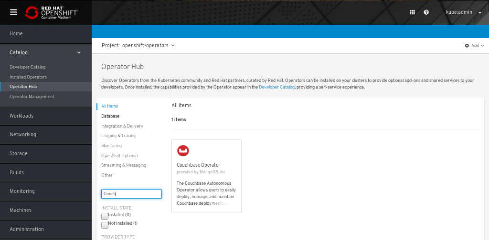
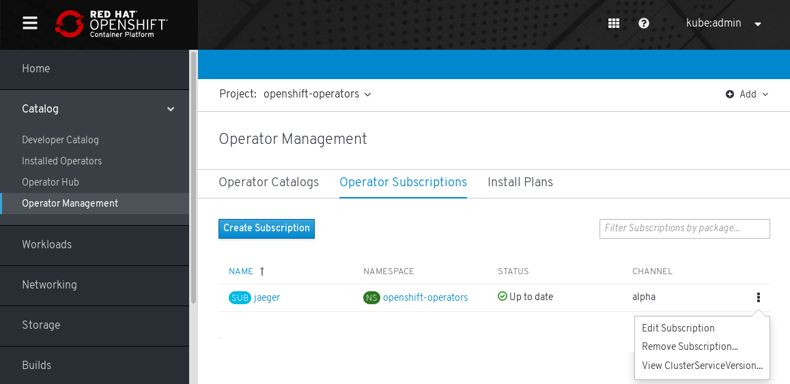
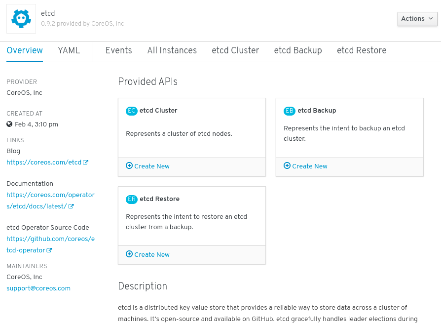
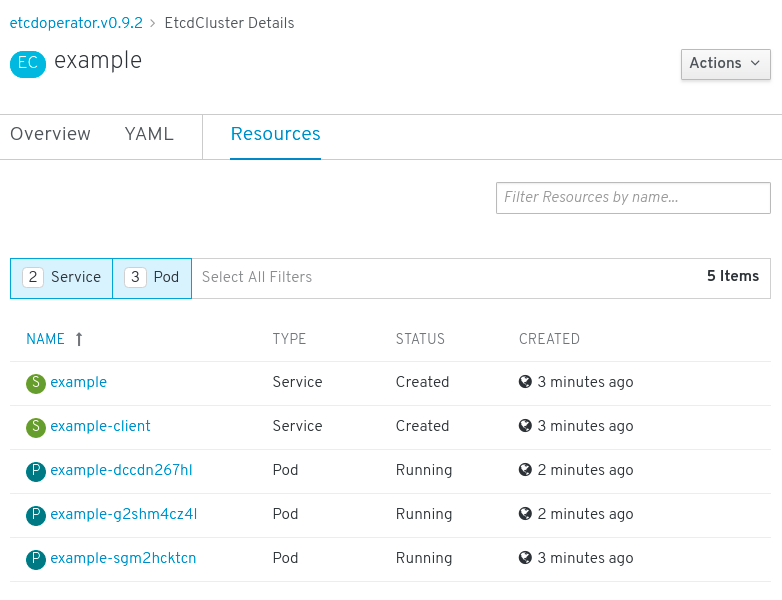

Operators
What Operators are
Conceptually, Operators take human operational knowledge and encode it into software that is more easily shared with consumers.
Operators are pieces of software that ease the operational complexity of running another piece of software. They act like an extension of the software vendor’s engineering team, watching over a Kubernetes environment (such as OpenShift Enterprise) and using its current state to make decisions in real time. Advanced Operators are designed to handle upgrades seamlessly, react to failures automatically, and not take shortcuts, like skipping a software backup process to save time.
More technically, Operators are a method of packaging, deploying, and managing a Kubernetes application.
A Kubernetes application is an app that is both deployed on Kubernetes and
managed using the Kubernetes APIs and kubectl or oc tooling. To be able to
make the most of Kubernetes, you need a set of cohesive APIs to extend in order
to service and manage your apps that run on Kubernetes. Think of
Operators as the runtime that manages this type of app on Kubernetes.
Why use Operators?
Operators provide:
-
Repeatability of installation and upgrade.
-
Constant health checks of every system component.
-
Over-the-air (OTA) updates for OpenShift components and ISV content.
-
A place to encapsulate knowledge from field engineers and spread it to all users, not just one or two.
- Why deploy on Kubernetes?
-
Kubernetes (and by extension, OpenShift Enterprise) contains all of the primitives needed to build complex distributed systems – secret handling, load balancing, service discovery, autoscaling – that work across on-premise and cloud providers.
- Why manage your app with Kubernetes APIs and
kubectltooling? -
These APIs are feature rich, have clients for all platforms and plug into the cluster’s access control/auditing. An Operator uses the Kubernetes' extension mechanism, Custom Resource Definitions (CRDs), so your custom object, for example
MongoDB, looks and acts just like the built-in, native Kubernetes objects. - How do Operators compare with Service Brokers?
-
A Service Broker is a step towards programmatic discovery and deployment of an app. However, because it is not a long running process, it cannot execute Day 2 operations like upgrade, failover, or scaling. Customizations and parameterization of tunables are provided at install time, versus an Operator that is constantly watching your cluster’s current state. Off-cluster services continue to be a good match for a Service Broker, although Operators exist for these as well.
Operator Framework
The Operator Framework is a family of tools and capabilities to deliver on the customer experience described above. It is not just about writing code; testing, delivering, and updating Operators is just as important. The Operator Framework components consist of open source tools to tackle these problems:
- Operator SDK
-
Assists Operator authors in bootstrapping, building, testing, and packaging their own Operator based on their expertise without requiring knowledge of Kubernetes API complexities.
- Operator Lifecycle Manager
-
Controls the installation, upgrade, and RBAC of Operators in a cluster. Deployed by default in OpenShift Enterprise 4.
- Operator Metering
-
Collects operational metrics about Operators on the cluster for Day 2 management and aggregating usage metrics.
- OperatorHub
-
Web console for discovering and installing Operators on your cluster. Deployed by default in OpenShift Enterprise 4.
These tools are designed to be composable, so you can use any that are useful to you.
Operator maturity model
The level of sophistication of the management logic encapsulated within an Operator can vary. This logic is also in general highly dependent on the type of the service represented by the Operator.
One can however generalize the scale of the maturity of an Operator’s encapsulated operations for certain set of capabilities that most Operators can include. To this end, the following Operator Maturity model defines five phases of maturity for generic day two operations of an Operator:

The above model also shows how these capabilities can best be developed through the Operator Framework’s Helm, Go, and Ansible capabilities.
Adding Operators to a cluster
This guide outlines the architecture of the Operator Lifecycle Manager (OLM) and OperatorHub and walks cluster administrators through an example of installing Operators to a cluster.
Understanding the Operator Lifecycle Manager
In OpenShift Enterprise 4.0, the Operator Lifecycle Manager (OLM) helps users install, update, and manage the lifecycle of all Operators and their associated services running across their clusters. It is part of the Operator Framework, an open source toolkit designed to manage Kubernetes native applications (Operators) in an effective, automated, and scalable way.

The OLM runs by default in OpenShift Enterprise 4.0, which aids cluster administrators in installing, upgrading, and granting access to Operators running on their cluster. The OpenShift Enterprise web console provides management screens for cluster administrators to install Operators, as well as grant specific projects access to use the catalog of Operators available on the cluster.
For developers, a self-service experience allows provisioning and configuring instances of databases, monitoring, and big data services without having to be subject matter experts, because the Operator has that knowledge baked into it.
ClusterServiceVersions (CSVs)
A ClusterServiceVersion (CSV) is a YAML manifest created from Operator metadata that assists the OLM in running the Operator in a cluster. It is the metadata that accompanies an Operator container image, used to populate user interfaces with information like its logo, description, and version. It is also a source of technical information needed to run the Operator, like the RBAC rules it requires and which Custom Resources (CRs) it manages or depends on.
A CSV is composed of:
- Metadata
-
-
Application metadata:
-
Name, description, version, links, labels, icon, etc.
-
-
- Install strategy
-
-
Type: Deployment
-
Set of service accounts and required permissions
-
Set of Deployments.
-
-
- CRDs
-
-
Type
-
Owned: Managed by this service
-
Required: Must exist in the cluster for this service to run
-
Resources: A list of resources that the Operator interacts with
-
Descriptors: Annotate CRD spec and status fields to provide semantic information
-
Architecture
The Operator Lifecycle Manager is composed of two Operators: the OLM Operator and the Catalog Operator.
Each of these Operators are responsible for managing the CRDs that are the basis for the OLM framework:
| Resource | Short name | Owner | Description |
|---|---|---|---|
ClusterServiceVersion |
|
OLM |
Application metadata: name, version, icon, required resources, installation, etc. |
InstallPlan |
|
Catalog |
Calculated list of resources to be created in order to automatically install or upgrade a CSV. |
CatalogSource |
|
Catalog |
A repository of CSVs, CRDs, and packages that define an application. |
Subscription |
|
Catalog |
Used to keep CSVs up to date by tracking a channel in a package. |
OperatorGroup |
|
OLM |
Method to group multiple namespaces and prepare for use by an Operator. |
Each of these Operators are also responsible for creating resources:
| Resource | Owner |
|---|---|
Deployments |
OLM |
ServiceAccounts |
|
(Cluster)Roles |
|
(Cluster)RoleBindings |
|
Custom Resource Definitions (CRDs) |
Catalog |
ClusterServiceVersions (CSVs) |
OLM Operator
The OLM Operator is responsible for deploying applications defined by CSV resources after the required resources specified in the CSV are present in the cluster.
The OLM Operator is not concerned with the creation of the required resources; users can choose to manually create these resources using the CLI, or users can choose to create these resources using the Catalog Operator. This separation of concern enables users incremental buy-in in terms of how much of the OLM framework they choose to leverage for their application.
While the OLM Operator is often configured to watch all namespaces, it can also be operated alongside other OLM Operators so long as they all manage separate namespaces.
-
Watches for ClusterServiceVersion (CSVs) in a namespace and checks that requirements are met. If so, runs the install strategy for the CSV.
Catalog Operator
The Catalog Operator is responsible for resolving and installing CSVs and the required resources they specify. It is also responsible for watching CatalogSources for updates to packages in channels and upgrading them (optionally automatically) to the latest available versions.
A user that wishes to track a package in a channel creates a Subscription resource configuring the desired package, channel, and the CatalogSource from which to pull updates. When updates are found, an appropriate InstallPlan is written into the namespace on behalf of the user.
Users can also create an InstallPlan resource directly, containing the names of the desired CSV and an approval strategy, and the Catalog Operator creates an execution plan for the creation of all of the required resources. After it is approved, the Catalog Operator creates all of the resources in an InstallPlan; this then independently satisfies the OLM Operator, which proceeds to install the CSVs.
-
Has a cache of CRDs and CSVs, indexed by name.
-
Watches for unresolved InstallPlans created by a user:
-
Finds the CSV matching the name requested and adds it as a resolved resource.
-
For each managed or required CRD, adds it as a resolved resource.
-
For each required CRD, finds the CSV that manages it.
-
-
Watches for resolved InstallPlans and creates all of the discovered resources for it (if approved by a user or automatically).
-
Watches for CatalogSources and Subscriptions and creates InstallPlans based on them.
Catalog Registry
The Catalog Registry stores CSVs and CRDs for creation in a cluster and stores metadata about packages and channels.
A package manifest is an entry in the Catalog Registry that associates a package identity with sets of CSVs. Within a package, channels point to a particular CSV. Because CSVs explicitly reference the CSV that they replace, a package manifest provides the Catalog Operator all of the information that is required to update a CSV to the latest version in a channel (stepping through each intermediate version).
OperatorGroups
The goal of OperatorGroups is to bring multitenancy features to running Operators in a cluster in the easiest, most automated way.
An OperatorGroup consists of a group of target namespaces as specified by the label selector in the spec, plus the namespace that the OperatorGroup is created within, known as the Operator namespace. The Operator namespace is always considered to also be a target namespace, without regard to matching the label selector. The Operator namespace is where the Operator actually runs and the target namespace(s) are namespaces within which the Operator has permissions to operate.
After an OperatorGroup has been created, the focus is around the target namespaces and the resources contained in those namespaces. The status for an OperatorGroup is constantly updated to always list the namespaces matching the label selector as specified in the spec. In addition to maintaining an updated status, the OperatorGroup control loop also maintains creating RBAC rules and providing OperatorGroup knowledge to Operators. Some operations, such as copying CSVs and creating additional RBAC rules, are handled by the CSV control loop.
RBAC rules are created to:
-
Restrict access to the API (CRDs) of the installed Operators. It is possible that the administrator does not want the full functionality of the Operator to be granted in all cases.
-
Give the Operator the necessary permissions to operate. This is tied to the specified OperatorGroup service account.
OperatorGroup target namespace information is made available to Operators via annotations on the Deployment. Each CSV in the Operator namespace is copied into the target namespace(s), which is done in case a user does not have access to the Operator namespace. The copied CSV is annotated with the OperatorGroup name and the Operator namespace (the target namespace list is intentionally not included for security reasons).
Understanding the OperatorHub
The OperatorHub is available via the OpenShift Enterprise web console and is the interface that cluster administrators use to discover and install Operators. With one click, an Operator can be pulled from their off-cluster source, installed and subscribed on the cluster, and made ready for engineering teams to self-service manage the product across deployment environments using the Operator Lifecycle Manager (OLM).
Cluster administrators can choose from OperatorSources grouped into the following categories:
| Category | Description |
|---|---|
Red Hat Operators |
Red Hat products packaged and shipped by Red Hat. Supported by Red Hat. |
Certified Operators |
Products from leading independent software vendors (ISVs). Red Hat partners with ISVs to package and ship. Supported by the ISV. |
Community Operators |
Optionally-visible software maintained by relevant representatives in the operator-framework/community-operators GitHub repository. No official support. |
Custom Operators |
Operators you add to the cluster yourself. If you have not added any Custom Operators, the Custom category does not appear in the Web console on your OperatorHub. |
The OperatorHub component is installed and run as an Operator by default on
OpenShift Enterprise in the openshift-marketplace namespace.
Architecture
The OperatorHub component’s Operator manages two Custom Resource Definitions (CRDs): an OperatorSource and a CatalogSourceConfig.
|
Note
|
Although some OperatorSource and CatalogSourceConfig information is exposed through the OperatorHub user interface, those files are only used directly by those who are creating their own Operators. |
OperatorSource
For each Operator, the OperatorSource is used to define the external data store used to store Operator bundles. A simple OperatorSource includes:
| Field | Description |
|---|---|
|
To identify the data store as an application registry, |
|
Currently, Quay is the external data store used by the OperatorHub, so
the endpoint is set to |
|
For a Community Operator, this is set to |
|
Optionally set to a name that appears in the OperatorHub user interface for the Operator. |
|
Optionally set to the person or organization publishing the Operator, so it can be displayed on the OperatorHub. |
CatalogSourceConfig
An Operator’s CatalogSourceConfig is used to enable an Operator present in the OperatorSource on the cluster.
A simple CatalogSourceConfig must identify:
| Field | Description |
|---|---|
|
The location where the Operator would be deployed and updated, such as
|
|
A comma-separated list of packages that make up the content of the Operator. |
Installing Operators from the OperatorHub
As a cluster administrator, you can install an Operator from the OperatorHub using the OpenShift Enterprise web console or the CLI. You can then subscribe the Operator to one or more namespaces to make it available for developers on your cluster.
During installation, you must determine the following initial settings for the Operator:
- Installation Mode
-
Choose "All namespaces on the cluster (default)" to have the operator installed on all namespaces or choose individual namespaces, if available, to only install the Operator on selected namespaces. This example chooses "All namespaces" to make the Operator available to all users and projects.
- Update Channel
-
If an Operator is available through multiple channels, you can choose which channel you want to subscribe to. For example, to deploy from the stable channel, if available, select it from the list.
- Approval Strategy
-
You can choose Automatic or Manual updates. If you choose Automatic updates for an installed Operator, when a new version of that Operator is available, the OLM automatically upgrades the running instance of your Operator without human intervention. If you select Manual updates, when a newer version of an Operator is available, the OLM creates an update request. As a cluster administrator, you must then manually approve that update request to have the Operator updated to the new version.
Installing from the OperatorHub using the web console
This procedure uses the Couchbase Operator as an example to install and subscribe to an Operator from the OperatorHub using the OpenShift Enterprise web console.
-
Access to an OpenShift Enterprise cluster using an account with
cluster-adminpermissions.
-
Navigate in the web console to the Catalog → OperatorHub page.
-
Scroll or type a keyword into the
Filter by keywordbox (in this case,Couchbase) to find the Operator you want. -
Select the Operator. For a Community Operator, you are warned that Red Hat does not certify those Operators. You must acknowledge that warning before continuing. Information about the Operator is displayed.
-
Read the information about the Operator and click Install.
-
On the Create Operator Subscription page, select:
-
All namespaces on the cluster (default) to install the Operator to all namespaces or A specific namespace on the cluster to choose a specific, single namespace on which to install the Operator. The All namespaces… option is not always available.
-
An Update Channel (if more than one is available)
-
Automatic or Manual approval strategy, as described earlier.
-
-
Click Subscribe to make the Operator available to the selected namespaces on this OpenShift Enterprise cluster.
-
Select Catalog → Installed Operators to verify that the Couchbase ClusterServiceVersion (CSV) eventually shows up and its Status ultimately resolves to InstallSucceeded.
If it does not, switch to the Catalog → Operator Management page and inspect the Operator Subscriptions and Install Plans tabs for any failure or errors under Status. Then, check the logs in any Pods in the openshift-operators project (on the Workloads → Pods page) that are reporting issues to troubleshoot further.
Installing from the OperatorHub using the CLI
Instead of using the OpenShift Enterprise web console, you can install an Operator
from the OperatorHub using the CLI. Use the oc command to create or update a
CatalogSourceConfig object, then add a Subscription object.
|
Note
|
The web console version of this procedure handles the creation of the CatalogSourceConfig and Subscription objects behind the scenes for you, appearing as if it was one step. |
-
Access to an OpenShift Enterprise cluster using an account with
cluster-adminpermissions. -
Install the oc command to your local system.
-
View the list of Operators available to the cluster from the OperatorHub:
$ oc get packagemanifests -n openshift-marketplace NAME AGE amq-streams 14h packageserver 15h couchbase-enterprise 14h mongodb-enterprise 14h etcd 14h myoperator 14h ...
-
To identify the Operators to enable on the cluster, create a CatalogSourceConfig object YAML file (for example,
csc.cr.yaml). Include one or more packages listed in the previous step (such as couchbase-enterprise or etcd). For example:Example CatalogSourceConfigapiVersion: operators.coreos.com/v1 kind: CatalogSourceConfig metadata: name: example namespace: openshift-marketplace spec: targetNamespace: openshift-operators (1) packages: myoperator (2)-
Set the
targetNamespaceto identify the namespace where you want the Operator to be available. Theopenshift-operatorsnamespace is watched by the Operator Lifecycle Manager (OLM). -
Set
packagesto a comma-separated list of Operators to which you want to subscribe.
The Operator generates a CatalogSource from your CatalogSourceConfig in the namespace specified in
targetNamespace. -
-
Create the CatalogSourceConfig to enable the specified Operators in the selected namespace:
$ oc apply -f csc.cr.yaml
-
Create a Subscription object YAML file (for example,
myoperator-sub.yaml) to subscribe a namespace to an Operator. Note that the namespace you pick must have an OperatorGroup that matches the installMode (either AllNamespaces or SingleNamespace modes):Example SubscriptionapiVersion: operators.coreos.com/v1alpha1 kind: Subscription metadata: name: myoperator namespace: openshift-operators spec: channel: alpha name: myoperator (1) source: example (2) sourceNamespace: openshift-operators-
Name of the Operator to subscribe to.
-
Name of the CatalogSource that was created.
-
-
Create the Subscription object:
$ oc apply -f myoperator-sub.yaml
At this point, the OLM is now aware of the selected Operator. A ClusterServiceVersion (CSV) for the Operator should appear in the target namespace, and APIs provided by the Operator should be available for creation.
-
Later, if you want to install more Operators:
-
Update your CatalogSourceConfig file (in this example,
csc.cr.yaml) with more packages. For example:Example updated CatalogSourceConfigapiVersion: operators.coreos.com/v1 kind: CatalogSourceConfig metadata: name: example namespace: openshift-marketplace spec: targetNamespace: global packages: myoperator,another-operator (1)-
Add new packages to existing package list.
-
-
Update the CatalogSourceConfig object:
$ oc apply -f csc.cr.yaml
-
Create additional Subscription objects for the new Operators.
-
-
To install custom Operators to a cluster using the OperatorHub, you must first upload your Operator artifacts to Quay.io, then add your own
OperatorSourceto your cluster. Optionally, you can add Secrets to your Operator to provide authentication. After, you can manage the Operator in your cluster as you would any other Operator. For these steps, see Testing Operators.
Deleting Operators from a cluster
To delete (uninstall) an Operator from your cluster, you can simply delete the subscription to remove it from the subscribed namespace. If you want a clean slate, you can also remove the operator CSV and deployment, then delete Operator’s entry in the CatalogSourceConfig. The following text describes how to delete Operators from a cluster using either the web console or the command line.
Deleting Operators from a cluster using the web console
To delete an installed Operator from the selected namespace through the Web console, follow these steps:
-
Navigate in the web console to the Catalog → Operator Management page.
-
Click the Operator Subscriptions tab to see the list of installed Operators for the namespace.
-
Find the Operator you want to delete (in this example, jaeger) and click the three-dot drop-down box in far right column.
 -
Click Remove Subscription.
-
When prompted from the Remove Subscription pop-up, optionally select the
Also completely remove the jaeger Operator from the selected namespacecheckbox, if you want all components related to the installation to be removed. This removes the CSV, which in turn removes the pods, the deployments, the CRDs, and CRs associated with the Operator. -
Select Remove. This Operator will stop running and no longer receive updates.
|
Note
|
Although the Operator is no longer installed or receiving updates, that Operator will still appear on the Operator Catalogs list, ready to re-subscribe. To remove the Operator from that listing, you can delete the Operator’s entry in the CatalogSourceConfig from the command line (as shown in last step of "Deleting operators from a cluster using the CLI"). |
Deleting operators from a cluster using the CLI
Instead of using the OpenShift Enterprise web console, you can delete an Operator
from your cluster by using the CLI.
You do this by deleting the Subscription and ClusterServiceVersion
from the targetNamespace, then editing the CatalogSourceConfig to remove
the Operator’s package name.
-
Access to an OpenShift Enterprise cluster using an account with
cluster-adminpermissions. -
Install the oc command on your local system.
In this example, there are two operators (Jaeger and Descheduler) installed in the
openshift-operators namespace. The goal is to remove Jaeger without removing Descheduler.
-
Delete the Operator’s subscription (for example, jaeger):
$ oc delete subscription jaeger -n openshift-operators subscription.operators.coreos.com "jaeger" deleted
-
Check the current version of the subscribed Operator (for example, jaeger):
$ oc get subscription jaeger -n openshift-operators -o yaml | grep currentCSV currentCSV: jaeger-operator.v1.8.2
-
Delete the CSV for the Operator (jaeger) in the
targetNamespace(openshift-operators)$ oc delete clusterserviceversion jaeger-operator.v1.8.2 -n openshift-operators clusterserviceversion.operators.coreos.com "jaeger-operator.v1.8.2" deleted
-
Display the contents of the
CatalogSourceConfigresource and review the list of packages in thespecsection:$ oc get catalogsourceconfig -n openshift-marketplace \ installed-community-openshift-operators -o yamlFor example, the spec section might appear as follows:
Example of CatalogSourceConfigspec: csDisplayName: Community Operators csPublisher: Community packages: jaeger,descheduler targetNamespace: openshift-operators -
Remove the Operator from the CatalogSourceConfig in one of two ways:
-
If you have multiple Operators, edit the CatalogSourceConfig resource and remove the Operator’s package:
$ oc edit catalogsourceconfig -n openshift-marketplace \ installed-community-openshift-operatorsRemove the package from the
packagesline, as shown:Example of modified packages in CatalogSourceConfigpackages: deschedulerSave the change and the marketplace-operator will reconcile the CatalogSourceConfig.
-
If there is only one Operator in the CatalogSourceConfig, you can remove it by simply deleting the entire CatalogSourceConfig as follows:
$ oc delete catalogsourceconfig -n openshift-marketplace \ installed-community-openshift-operators
-
Creating applications from installed Operators
This guide walks developers through an example of creating applications from an installed Operator using the OpenShift Enterprise 4.0 web console.
Creating an etcd cluster using an Operator
This procedure walks through creating a new etcd cluster using the etcd Operator, managed by the Operator Lifecycle Manager (OLM).
-
Access to an OpenShift Enterprise 4.0 cluster
-
etcd Operator already installed to the cluster by an administrator
-
Create a new project in the OpenShift Enterprise web console for this procedure. This example uses a project called my-etcd.
-
Navigate to the Catalogs → Installed Operators page. The Operators that have been installed to the cluster by the cluster administrator and are available for use are shown here as a list of ClusterServiceVersions (CSVs). CSVs are used to launch and manage the software provided by the Operator.
TipYou can get this list from the CLI using:
$ oc get csv
-
On the Installed Operators page, click on the etcd Operator to view more details and available actions:
Figure 3. etcd Operator overviewAs shown under Provided APIs, this Operator makes available three new resource types, including one for an etcd Cluster (the
EtcdClusterresource). These objects work similar to the built-in native Kubernetes ones, such asDeploymentsorReplicaSets, but contain logic specific to managing etcd. -
Create a new etcd cluster:
-
In the etcd Cluster API box, click Create New.
-
The next screen allows you to make any modifications to the minimal starting template of an
EtcdClusterobject, such as the size of the cluster. For now, click Create to finalize. This triggers the Operator to start up the Pods, Services, and other components of the new etcd cluster.
-
-
Click the Resources tab to see that your project now contains a number of resources created and configured automatically by the Operator.
Figure 4. etcd Operator resourcesVerify that a Kubernetes service has been created that allows you to access the database from other Pods in your project.
-
All users with the
editrole in a given project can create, manage, and delete application instances (an etcd cluster, in this example) managed by Operators that have already been created in the project, in a self-service manner, just like a cloud service. If you want to enable additional users with this ability, project administrators can add the role using the following command:$ oc policy add-role-to-user edit <user> -n <target_project>
You now have an etcd cluster that will react to failures and rebalance data as Pods become unhealthy or are migrated between nodes in the cluster. Most importantly, cluster administrators or developers with proper access can now easily use the database with their applications.
Service brokers
Installing the service catalog
|
Important
|
The service catalog is deprecated in OpenShift Enterprise 4. Equivalent and better functionality is present in the Operator Framework and Operator Lifecycle Manager (OLM). |
About the service catalog
When developing microservices-based applications to run on cloud native platforms, there are many ways to provision different resources and share their coordinates, credentials, and configuration, depending on the service provider and the platform.
To give developers a more seamless experience, OpenShift Enterprise includes a service catalog, an implementation of the Open Service Broker API (OSB API) for Kubernetes. This allows users to connect any of their applications deployed in OpenShift Enterprise to a wide variety of service brokers.
The service catalog allows cluster administrators to integrate multiple platforms using a single API specification. The OpenShift Enterprise web console displays the cluster service classes offered by service brokers in the service catalog, allowing users to discover and instantiate those services for use with their applications.
As a result, service users benefit from ease and consistency of use across different types of services from different providers, while service providers benefit from having one integration point that gives them access to multiple platforms.
The service catalog is not installed by default in OpenShift Enterprise 4.
Installing service catalog
If you plan on using any of the services from the OpenShift Ansible Broker or Template Service Broker, you must install the service catalog by completing the following steps.
-
Enable the service catalog API server.
-
Use the following command to edit the service catalog API server resource.
$ oc edit servicecatalogapiservers
-
Under
spec, set themanagementStatefield toManaged:spec: logLevel: Normal managementState: Managed -
Save the file to apply the changes.
The Operator installs the service catalog API server component. As of OpenShift Enterprise 4, this component is installed into the
openshift-service-catalog-apiservernamespace.
-
-
Enable the service catalog controller manager.
-
Use the following command to edit the service catalog controller manager resource.
$ oc edit servicecatalogcontrollermanagers
-
Under
spec, set themanagementStatefield toManaged:spec: logLevel: Normal managementState: Managed -
Save the file to apply the changes.
The Operator installs the service catalog controller manager component. As of OpenShift Enterprise 4, this component is installed into the
openshift-service-catalog-controller-managernamespace.
-
Installing the Template Service Broker
You can install the Template Service Broker to gain access to the template applications that it provides.
|
Important
|
The Template Service Broker is deprecated in OpenShift Enterprise 4. Equivalent and better functionality is present in the Operator Framework and Operator Lifecycle Manager (OLM). |
About the Template Service Broker
The Template Service Broker gives the service catalog visibility into the default Instant App and Quickstart templates that have shipped with OpenShift Enterprise since its initial release. The Template Service Broker can also make available as a service anything for which an OpenShift Enterprise template has been written, whether provided by Red Hat, a cluster administrator or user, or a third-party vendor.
By default, the Template Service Broker shows objects that are globally
available from the openshift project. It can also be configured to watch any
other project that a cluster administrator chooses.
The Template Service Broker is not installed by default in OpenShift Enterprise 4.
Installing the Template Service Broker Operator
-
You have installed the service catalog.
The following procedure installs the Template Service Broker Operator using the web console.
-
Create a namespace.
-
Navigate in the web console to Administration → Namespaces and click Create Namespace.
-
Enter
openshift-template-service-brokerin the Name field and click Create.NoteThe namespace must start with openshift-.
-
-
Navigate to the Catalog → OperatorHub page. Verify that the
openshift-template-service-brokerproject is selected. -
Select Template Service Broker Operator.
A pop-up window appears, warning you that you are installing a Community Operator. Click Continue to acknowledge the Show Community Operator warning.
NoteThis Operator will be available under the Red Hat category in the GA release.
-
Read the information about the Operator and click Install.
-
Review the default selections and click Subscribe.
Next, you must start the Template Service Broker in order to access the template applications it provides.
Starting the Template Service Broker
After you have installed the Template Service Broker Operator, you can start the Template Service Broker using the following procedure.
-
You have installed the service catalog.
-
You have installed the Template Service Broker Operator.
-
Navigate in the web console to Catalog → Installed Operators and select the
openshift-template-service-brokerproject. -
Select the Template Service Broker Operator.
-
Under Provided APIs, click Create New for Template Service Broker.
-
Review the default YAML and click Create.
-
Verify that the Template Service Broker has started.
After the Template Service Broker has started, you can view the available template applications by navigating to Catalog → Developer Catalog and selecting the Service Class checkbox. Note that it may take a few minutes for the Template Service Broker to start and the template applications to be available.
If you do not yet see these Service classes, you can check the status of the following items:
-
Template Service Broker Pod status
-
From the Workloads → Pods page for the openshift-template-service-broker project, verify that the Pod that starts with
apiserver-has a status of Running and readiness of Ready.
-
-
Cluster service broker status
-
From the Catalog → Broker Management → Service Brokers page, verify that the template-service-broker service broker has a status of Ready.
-
-
Service catalog controller manager Pod logs
-
From the Workloads → Pods page for the openshift-service-catalog-controller-manager project, review the logs for each of the Pods and verify that you see a log entry with the message
Successfully fetched catalog entries from broker.
-
-
Provisioning template applications
Provisioning template applications
The following procedure provisions an example PostgreSQL template application that was made available by the Template Service Broker.
-
The service catalog is installed.
-
The Template Service Broker is installed.
-
Create a project.
-
Navigate in the web console to Home → Projects and click Create Project.
-
Enter
test-postgresqlin the Name field and click Create.
-
-
Create a service instance.
-
Navigate to the Catalog → Developer Catalog page.
-
Select the PostgreSQL (Ephemeral) template application and click Create Service Instance.
-
Review the default selections and set any other required fields, and click Create.
-
Go to Catalog → Provisioned Services and verify that the postgresql-ephemeral service instance is created and has a status of Ready.
You can check the progress on the Home → Events page. After a few moments, you should see an event for postgresql-ephemeral with the message "The instance was provisioned successfully".
-
-
Create a service binding.
-
From the Provisioned Services page, click postgresql-ephemeral and click Create Service Binding.
-
Review the default service binding name and click Create.
This creates a new secret for binding using the name provided.
-
-
Review the secret that was created.
-
Navigate to Workloads → Secrets and verify that a secret named postgresql-ephemeral was created.
-
Click postgresql-ephemeral and review the key-value pairs in the Data section, which are used for binding to other apps.
-
Uninstalling the Template Service Broker
You can uninstall the Template Service Broker if you no longer need access to the template applications that it provides.
|
Important
|
The Template Service Broker is deprecated in OpenShift Enterprise 4. Equivalent and better functionality is present in the Operator Framework and Operator Lifecycle Manager (OLM). |
Uninstalling the Template Service Broker
The following procedure uninstalls the Template Service Broker and its Operator using the web console.
|
Warning
|
Do not uninstall the Template Service Broker if there are any provisioned services from it in your cluster, otherwise you might encounter errors when trying to manage the services. |
-
The Template Service Broker is installed.
This procedure assumes that you installed the Template Service Broker into the
openshift-template-service-broker project.
-
Uninstall the Template Service Broker.
-
Navigate to Catalog → Installed Operators and select the openshift-template-service-broker project from the drop-down menu.
-
Click Template Service Broker Operator.
-
Select the Template Service Broker tab.
-
Click template-service-broker.
-
From the Actions drop-down menu, select Delete Template Service Broker.
-
Click Delete from the confirmation pop-up window.
The Template Service Broker is now uninstalled, and template applications will soon be removed from the Developer Catalog.
-
-
Uninstall the Template Service Broker Operator.
-
Navigate to Catalog → Operator Management and select the openshift-template-service-broker project from the drop-down menu.
-
Click View subscription for the Template Service Broker Operator.
-
Select templateservicebroker.
-
From the Actions drop-down menu, select Remove Subscription.
-
Verify that the checkbox is checked next to Also completely remove the templateservicebroker Operator from the selected namespace and click Remove.
The Template Service Broker Operator is no longer installed in your cluster.
-
After the Template Service Broker is uninstalled, users will no longer have access to the template applications provided by the Template Service Broker.
Installing the OpenShift Ansible Broker
You can install the OpenShift Ansible Broker to gain access to the service bundles that it provides.
|
Important
|
The OpenShift Ansible Broker is deprecated in OpenShift Enterprise 4. Equivalent and better functionality is present in the Operator Framework and Operator Lifecycle Manager (OLM). |
About the OpenShift Ansible Broker
The OpenShift Ansible Broker is an implementation of the Open Service Broker (OSB) API that manages applications defined by Ansible playbook bundles (APBs). APBs provide a method for defining and distributing container applications in OpenShift Enterprise, and consist of a bundle of Ansible playbooks built into a container image with an Ansible runtime. APBs leverage Ansible to create a standard mechanism to automate complex deployments.
The OpenShift Ansible Broker follows this basic workflow:
-
A user requests the list of available applications from the service catalog using the OpenShift Enterprise web console.
-
The service catalog requests the list of available applications from the OpenShift Ansible Broker.
-
The OpenShift Ansible Broker communicates with a defined container image registry to learn which APBs are available.
-
The user issues a request to provision a specific APB.
-
The OpenShift Ansible Broker fulfills the user’s provision request by invoking the provision method on the APB.
The OpenShift Ansible Broker is not installed by default in OpenShift Enterprise 4.
Ansible playbook bundles
An Ansible playbook bundle (APB) is a lightweight application definition that allows you to leverage existing investment in Ansible roles and playbooks.
APBs use a simple directory with named playbooks to perform OSB API actions,
such as provision and bind. Metadata defined in the apb.yml file contains a
list of required and optional parameters for use during deployment.
Installing the OpenShift Ansible Broker Operator
-
You have installed the service catalog.
The following procedure installs the OpenShift Ansible Broker Operator using the web console.
-
Create a namespace.
-
Navigate in the web console to Administration → Namespaces and click Create Namespace.
-
Enter
openshift-ansible-service-brokerin the Name field and click Create.NoteThe namespace must start with openshift-.
-
-
Create a cluster role binding.
-
Navigate to Administration → Role Bindings and click Create Binding.
-
For the Binding Type, select Cluster-wide Role Binding (ClusterRoleBinding).
-
For the Role Binding, enter
ansible-service-brokerin the Name field. -
For the Role, select admin.
-
For the Subject, choose the Service Account option, select the
openshift-ansible-service-brokernamespace, and enteropenshift-ansible-service-broker-operatorin the Subject Name field. -
Click Create.
-
-
Navigate to the Catalog → OperatorHub page. Verify that the
openshift-ansible-service-brokerproject is selected. -
Select Automation Broker Operator.
A pop-up window appears, warning you that you are installing a Community Operator. Click Continue to acknowledge the Show Community Operator warning.
NoteThis Operator will be named OpenShift Ansible Service Broker Operator and will be available under the Red Hat category in the GA release.
-
Read the information about the Operator and click Install.
-
Review the default selections and click Subscribe.
Next, you must start the OpenShift Ansible Broker in order to access the service bundles it provides.
Starting the OpenShift Ansible Broker
After you have installed the OpenShift Ansible Broker Operator, you can start the OpenShift Ansible Broker using the following procedure.
-
You have installed the service catalog.
-
You have installed the OpenShift Ansible Broker Operator.
-
Navigate in the web console to Catalog → Installed Operators and select the
openshift-ansible-service-brokerproject. -
Select the Automation Broker Operator.
-
Under Provided APIs, click Create New for Automation Broker.
-
Review the default YAML, set any additional OpenShift Ansible Broker configuration options, and click Create.
-
Verify that the OpenShift Ansible Broker has started.
After the OpenShift Ansible Broker has started, you can view the available service bundles by navigating to Catalog → Developer Catalog and selecting the Service Class checkbox. Note that it may take a few minutes for the OpenShift Ansible Broker to start and the service bundles to be available.
If you do not yet see these Service classes, you can check the status of the following items:
-
OpenShift Ansible Broker Pod status
-
From the Workloads → Pods page for the openshift-ansible-service-broker project, verify that the Pod that starts with
asb-has a status of Running and readiness of Ready.
-
-
Cluster service broker status
-
From the Catalog → Broker Management → Service Brokers page, verify that the ansible-service-broker service broker has a status of Ready.
-
-
Service catalog controller manager Pod logs
-
From the Workloads → Pods page for the openshift-service-catalog-controller-manager project, review the logs for each of the Pods and verify that you see a log entry with the message
Successfully fetched catalog entries from broker.
-
-
OpenShift Ansible Broker configuration options
You can set the following options for your OpenShift Ansible Broker.
| YAML key | Description | Default value |
|---|---|---|
|
The name used to identify the broker instance. |
|
|
The namespace where the broker resides. |
|
|
The fully qualified image used for the broker. |
|
|
The pull policy used for the broker image itself. |
|
|
The node selector string used for the broker’s deployment. |
|
|
Expressed as a yaml list of broker registry configs, allowing the user to configure the image registries the broker will discover and source its APBs from. |
See the default registries array. |
|
The log level used for the broker’s logs. |
|
|
The pull policy used for APB Pods. |
|
|
The role granted to the service account used to execute APBs. |
|
|
Whether the transient namespace created to run the APB is deleted after the conclusion of the APB, regardless of the result. |
|
|
Whether the transient namespace created to run the APB is deleted after the conclusion of the APB, only in the event of an error result. |
|
|
Whether or not the broker should run its bootstrap routine on startup. |
|
|
The interval of time between broker bootstraps, refreshing its inventory of APBs. |
|
|
Experimental: Toggles the broker executing APBs on bind operations. |
|
|
Whether the broker should escalate the permissions of a user while running the APB. This should typically remain |
|
|
Whether to output the low level HTTP requests that the broker receives. |
|
registries- type: rhcc
name: rhcc
url: https://registry.redhat.io
white_list:
- ".*-apb$"
auth_type: secret
auth_name: asb-registry-authConfiguring the OpenShift Ansible Broker
|
Important
|
The OpenShift Ansible Broker is deprecated in OpenShift Enterprise 4. Equivalent and better functionality is present in the Operator Framework and Operator Lifecycle Manager (OLM). |
Configuring the OpenShift Ansible Broker
The following procedure customizes the settings for your OpenShift Ansible Broker.
-
You have installed and started the OpenShift Ansible Broker.
This procedure assumes that you used ansible-service-broker both as the OpenShift Ansible Broker name and the project that it was installed into.
-
Navigate in the web console to Catalog → Installed Operators and select the
ansible-service-brokerproject. -
Select the Automation Broker Operator.
-
On the Automation Broker tab, select
ansible-service-broker. -
On the YAML tab, add or update any OpenShift Ansible Broker configuration options under the
specfield.For example:
spec: keepNamespace: true sandboxRole: edit -
Click Save to apply these changes.
OpenShift Ansible Broker configuration options
You can set the following options for your OpenShift Ansible Broker.
| YAML key | Description | Default value |
|---|---|---|
|
The name used to identify the broker instance. |
|
|
The namespace where the broker resides. |
|
|
The fully qualified image used for the broker. |
|
|
The pull policy used for the broker image itself. |
|
|
The node selector string used for the broker’s deployment. |
|
|
Expressed as a yaml list of broker registry configs, allowing the user to configure the image registries the broker will discover and source its APBs from. |
See the default registries array. |
|
The log level used for the broker’s logs. |
|
|
The pull policy used for APB Pods. |
|
|
The role granted to the service account used to execute APBs. |
|
|
Whether the transient namespace created to run the APB is deleted after the conclusion of the APB, regardless of the result. |
|
|
Whether the transient namespace created to run the APB is deleted after the conclusion of the APB, only in the event of an error result. |
|
|
Whether or not the broker should run its bootstrap routine on startup. |
|
|
The interval of time between broker bootstraps, refreshing its inventory of APBs. |
|
|
Experimental: Toggles the broker executing APBs on bind operations. |
|
|
Whether the broker should escalate the permissions of a user while running the APB. This should typically remain |
|
|
Whether to output the low level HTTP requests that the broker receives. |
|
registries- type: rhcc
name: rhcc
url: https://registry.redhat.io
white_list:
- ".*-apb$"
auth_type: secret
auth_name: asb-registry-authProvisioning service bundles
Provisioning service bundles
The following procedure provisions an example PostgreSQL service bundle (APB) that was made available by the OpenShift Ansible Broker.
-
The service catalog is installed.
-
The OpenShift Ansible Broker is installed.
-
Create a project.
-
Navigate in the web console to Home → Projects and click Create Project.
-
Enter
test-postgresql-apbin the Name field and click Create.
-
-
Create a service instance.
-
Navigate to the Catalog → Developer Catalog page.
-
Select the PostgreSQL (APB) service bundle and click Create Service Instance.
-
Review the default selections and set any other required fields, and click Create.
-
Go to Catalog → Provisioned Services and verify that the dh-postgresql-apb service instance is created and has a status of Ready.
You can check the progress on the Home → Events page. After a few moments, you should see an event for dh-postgresql-apb with the message "The instance was provisioned successfully".
-
-
Create a service binding.
-
From the Provisioned Services page, click dh-postgresql-apb and click Create Service Binding.
-
Review the default service binding name and click Create.
This creates a new secret for binding using the name provided.
-
-
Review the secret that was created.
-
Navigate to Workloads → Secrets and verify that a secret named dh-postgresql-apb was created.
-
Click dh-postgresql-apb and review the key-value pairs in the Data section, which are used for binding to other apps.
-
Uninstalling the OpenShift Ansible Broker
You can uninstall the OpenShift Ansible Broker if you no longer need access to the service bundles that it provides.
|
Important
|
The OpenShift Ansible Broker is deprecated in OpenShift Enterprise 4. Equivalent and better functionality is present in the Operator Framework and Operator Lifecycle Manager (OLM). |
Uninstalling the OpenShift Ansible Broker
The following procedure uninstalls the OpenShift Ansible Broker and its Operator using the web console.
|
Warning
|
Do not uninstall the OpenShift Ansible Broker if there are any provisioned services from it in your cluster, otherwise you might encounter errors when trying to manage the services. |
-
The OpenShift Ansible Broker is installed.
This procedure assumes that you installed the OpenShift Ansible Broker into the
openshift-ansible-service-broker project.
-
Uninstall the OpenShift Ansible Broker.
-
Navigate to Catalog → Installed Operators and select the openshift-ansible-service-broker project from the drop-down menu.
-
Click Automation Broker Operator.
-
Select the Automation Broker tab.
-
Click ansible-service-broker.
-
From the Actions drop-down menu, select Delete Automation Broker.
-
Click Delete from the confirmation pop-up window.
The OpenShift Ansible Broker is now uninstalled, and service bundles will soon be removed from the Developer Catalog.
-
-
Uninstall the OpenShift Ansible Broker Operator.
-
Navigate to Catalog → Operator Management and select the openshift-ansible-service-broker project from the drop-down menu.
-
Click View subscription for the Automation Broker Operator.
-
Select automationbroker.
-
From the Actions drop-down menu, select Remove Subscription.
-
Verify that the checkbox is checked next to Also completely remove the automationbroker Operator from the selected namespace and click Remove.
The OpenShift Ansible Broker Operator is no longer installed in your cluster.
-
After the OpenShift Ansible Broker is uninstalled, users will no longer have access to the service bundles provided by the OpenShift Ansible Broker.
Deployments
What Deployments and DeploymentConfigs are
Deployments and DeploymentConfigs in OpenShift Enterprise are API objects that provide two similar but different methods for fine-grained management over common user applications. They are comprised of the following separate API objects:
-
A DeploymentConfig or a Deployment, either of which describes the desired state of a particular component of the application as a Pod template.
-
DeploymentConfigs involve one or more ReplicationControllers, which contain a point-in-time record of the state of a DeploymentConfig as a Pod template. Similarly, Deployments involve one or more ReplicaSets, a successor of ReplicationControllers.
-
One or more Pods, which represent an instance of a particular version of an application.
Building blocks of a deployment
Deployments and DeploymentConfigs are enabled by the use of native Kubernetes API objects ReplicationControllers and ReplicaSets, respectively, as their building blocks.
Users do not need to manipulate ReplicationControllers, ReplicaSets, or Pods owned by DeploymentConfigs or Deployments. The deployment systems ensures changes are propagated appropriately.
|
Tip
|
If the existing deployment strategies are not suited for your use case and you have the need to run manual steps during the lifecycle of your deployment, then you should consider creating a Custom deployment strategy. |
The following sections provide further details on these objects.
ReplicationControllers
A ReplicationController ensures that a specified number of replicas of a Pod are running at all times. If Pods exit or are deleted, the ReplicationController acts to instantiate more up to the defined number. Likewise, if there are more running than desired, it deletes as many as necessary to match the defined amount.
A ReplicationController configuration consists of:
-
The number of replicas desired (which can be adjusted at runtime).
-
A Pod definition to use when creating a replicated Pod.
-
A selector for identifying managed Pods.
A selector is a set of labels assigned to the Pods that are managed by the ReplicationController. These labels are included in the Pod definition that the ReplicationController instantiates. The ReplicationController uses the selector to determine how many instances of the Pod are already running in order to adjust as needed.
The ReplicationController does not perform auto-scaling based on load or traffic, as it does not track either. Rather, this requires its replica count to be adjusted by an external auto-scaler.
The following is an example definition of a ReplicationController:
apiVersion: v1
kind: ReplicationController
metadata:
name: frontend-1
spec:
replicas: 1 (1)
selector: (2)
name: frontend
template: (3)
metadata:
labels: (4)
name: frontend (5)
spec:
containers:
- image: openshift/hello-openshift
name: helloworld
ports:
- containerPort: 8080
protocol: TCP
restartPolicy: Always-
The number of copies of the Pod to run.
-
The label selector of the Pod to run.
-
A template for the Pod the controller creates.
-
Labels on the Pod should include those from the label selector.
-
The maximum name length after expanding any parameters is 63 characters.
ReplicaSets
Similar to a ReplicationController, a ReplicaSet is a native Kubernetes API object that ensures a specified number of pod replicas are running at any given time. The difference between a ReplicaSet and a ReplicationController is that a ReplicaSet supports set-based selector requirements whereas a replication controller only supports equality-based selector requirements.
|
Note
|
Only use ReplicaSets if you require custom update orchestration or do not require updates at all. Otherwise, use Deployments. ReplicaSets can be used independently, but are used by deployments to orchestrate pod creation, deletion, and updates. Deployments manage their ReplicaSets automatically, provide declarative updates to pods, and do not have to manually manage the ReplicaSets that they create. |
The following is an example ReplicaSet definition:
apiVersion: apps/v1
kind: ReplicaSet
metadata:
name: frontend-1
labels:
tier: frontend
spec:
replicas: 3
selector: (1)
matchLabels: (2)
tier: frontend
matchExpressions: (3)
- {key: tier, operator: In, values: [frontend]}
template:
metadata:
labels:
tier: frontend
spec:
containers:
- image: openshift/hello-openshift
name: helloworld
ports:
- containerPort: 8080
protocol: TCP
restartPolicy: Always-
A label query over a set of resources. The result of
matchLabelsandmatchExpressionsare logically conjoined. -
Equality-based selector to specify resources with labels that match the selector.
-
Set-based selector to filter keys. This selects all resources with key equal to
tierand value equal tofrontend.
DeploymentConfigs
Building on ReplicationControllers, OpenShift Enterprise adds expanded support for the software development and deployment lifecycle with the concept of DeploymentConfigs. In the simplest case, a DeploymentConfig creates a new ReplicationController and lets it start up Pods.
However, OpenShift Enterprise deployments from DeploymentConfigs also provide the ability to transition from an existing deployment of an image to a new one and also define hooks to be run before or after creating the ReplicationController.
The DeploymentConfig deployment system provides the following capabilities:
-
A DeploymentConfig, which is a template for running applications.
-
Triggers that drive automated deployments in response to events.
-
User-customizable deployment strategies to transition from the previous version to the new version. A strategy runs inside a Pod commonly referred as the deployment process.
-
A set of hooks (lifecycle hooks) for executing custom behavior in different points during the lifecycle of a deployment.
-
Versioning of your application in order to support rollbacks either manually or automatically in case of deployment failure.
-
Manual replication scaling and autoscaling.
When you create a DeploymentConfig, a ReplicationController is created representing the DeploymentConfig’s Pod template. If the DeploymentConfig changes, a new ReplicationController is created with the latest Pod template, and a deployment process runs to scale down the old ReplicationController and scale up the new one.
Instances of your application are automatically added and removed from both
service load balancers and routers as they are created. As long as your
application supports graceful shutdown when it receives the TERM signal, you
can ensure that running user connections are given a chance to complete
normally.
The OpenShift Enterprise DeploymentConfig object defines the following details:
-
The elements of a
ReplicationControllerdefinition. -
Triggers for creating a new deployment automatically.
-
The strategy for transitioning between deployments.
-
Lifecycle hooks.
Each time a deployment is triggered, whether manually or automatically, a deployer Pod manages the deployment (including scaling down the old ReplicationController, scaling up the new one, and running hooks). The deployment pod remains for an indefinite amount of time after it completes the Deployment in order to retain its logs of the Deployment. When a deployment is superseded by another, the previous ReplicationController is retained to enable easy rollback if needed.
apiVersion: v1
kind: DeploymentConfig
metadata:
name: frontend
spec:
replicas: 5
selector:
name: frontend
template: { ... }
triggers:
- type: ConfigChange (1)
- imageChangeParams:
automatic: true
containerNames:
- helloworld
from:
kind: ImageStreamTag
name: hello-openshift:latest
type: ImageChange (2)
strategy:
type: Rolling (3)-
A
ConfigChangetrigger causes a new Deployment to be created any time the ReplicationController template changes. -
An
ImageChangetrigger causes a new Deployment to be created each time a new version of the backing image is available in the named imagestream. -
The default
Rollingstrategy makes a downtime-free transition between Deployments.
Deployments
Kubernetes provides a first-class, native API object type in OpenShift Enterprise called Deployments. Deployments serve as a descendant of the OpenShift Enterprise-specific DeploymentConfig.
Like DeploymentConfigs, Deployments describe the desired state of a particular component of an application as a Pod template. Deployments create ReplicaSets, which orchestrate Pod lifecycles.
For example, the following Deployment definition creates a ReplicaSet to bring
up one hello-openshift Pod:
apiVersion: apps/v1
kind: Deployment
metadata:
name: hello-openshift
spec:
replicas: 1
selector:
matchLabels:
app: hello-openshift
template:
metadata:
labels:
app: hello-openshift
spec:
containers:
- name: hello-openshift
image: openshift/hello-openshift:latest
ports:
- containerPort: 80
Comparing Deployments and DeploymentConfigs
Both Kubernetes Deployments and OpenShift Enterprise-provided DeploymentConfigs are supported in OpenShift Enterprise; however, it is recommended to use Deployments unless you need a specific feature or behavior provided by DeploymentConfigs.
The following sections go into more detail on the differences between the two object types to further help you decide which type to use.
Design
One important difference between Deployments and DeploymentConfigs is the properties of the CAP theorem that each design has chosen for the rollout process. DeploymentConfigs prefer consistency, whereas Deployments take availability over consistency.
For DeploymentConfigs, if a node running a deployer Pod goes down, it will not get replaced. The process waits until the node comes back online or is manually deleted. Manually deleting the node also deletes the corresponding Pod. This means that you can not delete the Pod to unstick the rollout, as the kubelet is responsible for deleting the associated Pod.
However, Deployments rollouts are driven from a controller manager. The controller manager runs in high availability mode on masters and uses leader election algorithms to value availability over consistency. During a failure it is possible for other masters to act on the same Deployment at the same time, but this issue will be reconciled shortly after the failure occurs.
DeploymentConfigs-specific features
Currently, Deployments do not support automatically rolling back to the last successfully deployed ReplicaSet in case of a failure.
Deployments have an implicit ConfigChange trigger in that every
change in the pod template of a deployment automatically triggers a new rollout.
If you do not want new rollouts on pod template changes, pause the deployment:
$ oc rollout pause deployments/<name>
Deployments do not yet support any lifecycle hooks.
Deployments do not support user-specified Custom deployment strategies yet.
Deployments-specific features
The deployment process for Deployments is driven by a controller loop, in contrast to DeploymentConfigs which use deployer pods for every new rollout. This means that a Deployment can have as many active ReplicaSets as possible, and eventually the deployment controller will scale down all old ReplicaSets and scale up the newest one.
DeploymentConfigs can have at most one deployer pod running, otherwise multiple deployers end up conflicting while trying to scale up what they think should be the newest ReplicationController. Because of this, only two ReplicationControllers can be active at any point in time. Ultimately, this translates to faster rapid rollouts for Deployments.
Because the Deployment controller is the sole source of truth for the sizes of new and old ReplicaSets owned by a Deployment, it is able to scale ongoing rollouts. Additional replicas are distributed proportionally based on the size of each ReplicaSet.
DeploymentConfigs cannot be scaled when a rollout is ongoing because the DeploymentConfig controller will end up having issues with the deployer process about the size of the new ReplicationController.
Deployments can be paused at any point in time, meaning you can also pause ongoing rollouts. On the other hand, you cannot pause deployer pods currently, so if you try to pause a DeploymentConfig in the middle of a rollout, the deployer process will not be affected and will continue until it finishes.
Managing deployment processes
Managing DeploymentConfigs
DeploymentConfigs can be managed from the OpenShift Enterprise web console’s
Workloads page or using the oc CLI. The following procedures show CLI usage
unless otherwise stated.
Starting a deployment
You can start a rollout to begin the deployment process of your application.
-
To start a new deployment process from an existing DeploymentConfig, run the following command:
$ oc rollout latest dc/<name>
NoteIf a deployment process is already in progress, the command displays a message and a new ReplicationController will not be deployed.
Viewing a deployment
You can view a deployment to get basic information about all the available revisions of your application.
-
To show details about all recently created ReplicationControllers for the provided DeploymentConfig, including any currently running deployment process, run the following command:
$ oc rollout history dc/<name>
-
To view details specific to a revision, add the
--revisionflag:$ oc rollout history dc/<name> --revision=1
-
For more detailed information about a deployment configuration and its latest revision, use the
oc describecommand:$ oc describe dc <name>
Retrying a deployment
If the current revision of your DeploymentConfig failed to deploy, you can restart the deployment process.
-
To restart a failed deployment process:
$ oc rollout retry dc/<name>
If the latest revision of it was deployed successfully, the command displays a message and the deployment process is not be retried.
NoteRetrying a deployment restarts the deployment process and does not create a new deployment revision. The restarted ReplicationController has the same configuration it had when it failed.
Rolling back a deployment
Rollbacks revert an application back to a previous revision and can be performed using the REST API, the CLI, or the web console.
-
To rollback to the last successful deployed revision of your configuration:
$ oc rollout undo dc/<name>
The DeploymentConfig’s template is reverted to match the deployment revision specified in the undo command, and a new ReplicationController is started. If no revision is specified with
--to-revision, then the last successfully deployed revision is used. -
Image change triggers on the DeploymentConfig are disabled as part of the rollback to prevent accidentally starting a new deployment process soon after the rollback is complete.
To re-enable the image change triggers:
$ oc set triggers dc/<name> --auto
|
Note
|
DeploymentConfigs also support automatically rolling back to the last successful revision of the configuration in case the latest deployment process fails. In that case, the latest template that failed to deploy stays intact by the system and it is up to users to fix their configurations. |
Executing commands inside a container
You can add a command to a container, which modifies the container’s startup
behavior by overruling the image’s ENTRYPOINT. This is different from a
lifecycle hook, which instead can be run once per deployment at a specified
time.
-
Add the
commandparameters to thespecfield of the DeploymentConfig. You can also add anargsfield, which modifies thecommand(or theENTRYPOINTifcommanddoes not exist).spec: containers: - name: <container_name> image: 'image' command: - '<command>' args: - '<argument_1>' - '<argument_2>' - '<argument_3>'For example, to execute the
javacommand with the-jarand/opt/app-root/springboots2idemo.jararguments:spec: containers: - name: example-spring-boot image: 'image' command: - java args: - '-jar' - /opt/app-root/springboots2idemo.jar
Viewing deployment logs
-
To stream the logs of the latest revision for a given DeploymentConfig:
$ oc logs -f dc/<name>
If the latest revision is running or failed, the command returns the logs of the process that is responsible for deploying your pods. If it is successful, it returns the logs from a Pod of your application.
-
You can also view logs from older failed deployment processes, if and only if these processes (old ReplicationControllers and their deployer Pods) exist and have not been pruned or deleted manually:
$ oc logs --version=1 dc/<name>
Deployment triggers
A DeploymentConfig can contain triggers, which drive the creation of new deployment processes in response to events inside the cluster.
|
Warning
|
If no triggers are defined on a DeploymentConfig, a |
The ConfigChange trigger results in a new ReplicationController whenever
configuration changes are detected in the Pod template of the DeploymentConfig.
|
Note
|
If a |
triggers:
- type: "ConfigChange"The ImageChange trigger results in a new ReplicationController whenever the
content of an imagestream tag changes (when a new version of the image is
pushed).
triggers:
- type: "ImageChange"
imageChangeParams:
automatic: true (1)
from:
kind: "ImageStreamTag"
name: "origin-ruby-sample:latest"
namespace: "myproject"
containerNames:
- "helloworld"-
If the
imageChangeParams.automaticfield is set tofalse, the trigger is disabled.
With the above example, when the latest tag value of the origin-ruby-sample
imagestream changes and the new image value differs from the current image
specified in the DeploymentConfig’s helloworld container, a new
ReplicationController is created using the new image for the helloworld
container.
|
Note
|
If an |
Setting deployment triggers
-
You can set deployment triggers for a DeploymentConfig using the
oc set triggerscommand. For example, to set aImageChangeTrigger, use the following command:$ oc set triggers dc/<dc_name> \ --from-image=<project>/<image>:<tag> -c <container_name>
Setting deployment resources
|
Note
|
This resource is available only if a cluster administrator has enabled the ephemeral storage technology preview. This feature is disabled by default. |
A deployment is completed by a Pod that consumes resources (memory, CPU, and ephemeral storage) on a node. By default, Pods consume unbounded node resources. However, if a project specifies default container limits, then Pods consume resources up to those limits.
You can also limit resource use by specifying resource limits as part of the deployment strategy. Deployment resources can be used with the Recreate, Rolling, or Custom deployment strategies.
-
In the following example, each of
resources,cpu,memory, andephemeral-storageis optional:type: "Recreate" resources: limits: cpu: "100m" (1) memory: "256Mi" (2) ephemeral-storage: "1Gi" (3)-
cpuis in CPU units:100mrepresents 0.1 CPU units (100 * 1e-3). -
memoryis in bytes:256Mirepresents 268435456 bytes (256 * 2 ^ 20). -
ephemeral-storageis in bytes:1Girepresents 1073741824 bytes (2 ^ 30). This applies only if your cluster administrator enabled the ephemeral storage technology preview.
However, if a quota has been defined for your project, one of the following two items is required:
-
A
resourcessection set with an explicitrequests:type: "Recreate" resources: requests: (1) cpu: "100m" memory: "256Mi" ephemeral-storage: "1Gi"-
The
requestsobject contains the list of resources that correspond to the list of resources in the quota.
-
-
A limit range defined in your project, where the defaults from the
LimitRangeobject apply to Pods created during the deployment process.
To set deployment resources, choose one of the above options. Otherwise, deploy Pod creation fails, citing a failure to satisfy quota.
-
Scaling manually
In addition to rollbacks, you can exercise fine-grained control over the number of replicas by manually scaling them.
|
Note
|
Pods can also be autoscaled using the |
-
To manually scale a DeploymentConfig, use the
oc scalecommand. For example, the following command sets the replicas in thefrontendDeploymentConfig to3.$ oc scale dc frontend --replicas=3
The number of replicas eventually propagates to the desired and current state of the deployment configured by the DeploymentConfig
frontend.
Accessing private repositories from DeploymentConfigs
You can add a Secret to your DeploymentConfig so that it can access images from a private repository. This procedure shows the OpenShift Enterprise web console method.
-
Create a new project.
-
From the Workloads page, create a Secret that contains credentials for accessing a private image repository.
-
Create a DeploymentConfig.
-
On the DeploymentConfig editor page, set the Pull Secret and save your changes.
Assigning pods to specific nodes
You can use node selectors in conjunction with labeled nodes to control Pod placement.
Cluster administrators can set the default node selector for a project in order to restrict Pod placement to specific nodes. As a developer, you can set a node selector on a Pod configuration to restrict nodes even further.
-
To add a node selector when creating a pod, edit the Pod configuration, and add the
nodeSelectorvalue. This can be added to a single Pod configuration, or in a Pod template:apiVersion: v1 kind: Pod spec: nodeSelector: disktype: ssd ...Pods created when the node selector is in place are assigned to nodes with the specified labels. The labels specified here are used in conjunction with the labels added by a cluster administrator.
For example, if a project has the
type=user-nodeandregion=eastlabels added to a project by the cluster administrator, and you add the abovedisktype: ssdlabel to a Pod, the Pod is only ever scheduled on nodes that have all three labels.NoteLabels can only be set to one value, so setting a node selector of
region=westin a Pod configuration that hasregion=eastas the administrator-set default, results in a Pod that will never be scheduled.
Running a Pod with a different service account
You can run a Pod with a service account other than the default.
-
Edit the DeploymentConfig:
$ oc edit dc/<deployment_config>
-
Add the
serviceAccountandserviceAccountNameparameters to thespecfield, and specify the service account you want to use:spec: securityContext: {} serviceAccount: <service_account> serviceAccountName: <service_account>
Using DeploymentConfig strategies
A deployment strategy is a way to change or upgrade an application. The aim is to make the change without downtime in a way that the user barely notices the improvements.
Because the end user usually accesses the application through a route handled by a router, the deployment strategy can focus on DeploymentConfig features or routing features. Strategies that focus on the DeploymentConfig impact all routes that use the application. Strategies that use router features target individual routes.
Many deployment strategies are supported through the DeploymentConfig, and some additional strategies are supported through router features. DeploymentConfig strategies are discussed in this section.
Choosing a deployment strategy
Consider the following when choosing a deployment strategy:
-
Long-running connections must be handled gracefully.
-
Database conversions can be complex and must be done and rolled back along with the application.
-
If the application is a hybrid of microservices and traditional components, downtime might be required to complete the transition.
-
You need the infrastructure to do this.
-
If you have a non-isolated test environment, you can break both new and old versions.
A deployment strategy uses readiness checks to determine if a new Pod is ready
for use. If a readiness check fails, the DeploymentConfig retries to run the
Pod until it times out. The default timeout is 10m, a value set in
TimeoutSeconds in dc.spec.strategy.*params.
Rolling strategy
A rolling deployment slowly replaces instances of the previous version of an application with instances of the new version of the application. The Rolling strategy is the default deployment strategy used if no strategy is specified on a DeploymentConfig.
A rolling deployment typically waits for new pods to become ready via a
readiness check before scaling down the old components. If a significant issue
occurs, the rolling deployment can be aborted.
When to use a Rolling deployment:
-
When you want to take no downtime during an application update.
-
When your application supports having old code and new code running at the same time.
A Rolling deployment means you to have both old and new versions of your code running at the same time. This typically requires that your application handle N-1 compatibility.
strategy:
type: Rolling
rollingParams:
updatePeriodSeconds: 1 (1)
intervalSeconds: 1 (2)
timeoutSeconds: 120 (3)
maxSurge: "20%" (4)
maxUnavailable: "10%" (5)
pre: {} (6)
post: {}-
The time to wait between individual Pod updates. If unspecified, this value defaults to
1. -
The time to wait between polling the deployment status after update. If unspecified, this value defaults to
1. -
The time to wait for a scaling event before giving up. Optional; the default is
600. Here, giving up means automatically rolling back to the previous complete deployment. -
maxSurgeis optional and defaults to25%if not specified. See the information below the following procedure. -
maxUnavailableis optional and defaults to25%if not specified. See the information below the following procedure. -
preandpostare both lifecycle hooks.
The Rolling strategy:
-
Executes any
prelifecycle hook. -
Scales up the new ReplicationController based on the surge count.
-
Scales down the old ReplicationController based on the max unavailable count.
-
Repeats this scaling until the new ReplicationController has reached the desired replica count and the old ReplicationController has been scaled to zero.
-
Executes any
postlifecycle hook.
|
Important
|
When scaling down, the Rolling strategy waits for Pods to become ready so it can decide whether further scaling would affect availability. If scaled up Pods never become ready, the deployment process will eventually time out and result in a deployment failure. |
The maxUnavailable parameter is the maximum number of Pods that can be
unavailable during the update. The maxSurge parameter is the maximum number
of Pods that can be scheduled above the original number of Pods. Both parameters
can be set to either a percentage (e.g., 10%) or an absolute value (e.g.,
2). The default value for both is 25%.
These parameters allow the deployment to be tuned for availability and speed. For example:
-
maxUnavailable*=0andmaxSurge*=20%ensures full capacity is maintained during the update and rapid scale up. -
maxUnavailable*=10%andmaxSurge*=0performs an update using no extra capacity (an in-place update). -
maxUnavailable*=10%andmaxSurge*=10%scales up and down quickly with some potential for capacity loss.
Generally, if you want fast rollouts, use maxSurge. If you need to take into
account resource quota and can accept partial unavailability, use
maxUnavailable.
Canary deployments
All Rolling deployments in OpenShift Enterprise are canary deployments; a new version (the canary) is tested before all of the old instances are replaced. If the readiness check never succeeds, the canary instance is removed and the DeploymentConfig will be automatically rolled back.
The readiness check is part of the application code and can be as sophisticated as necessary to ensure the new instance is ready to be used. If you need to implement more complex checks of the application (such as sending real user workloads to the new instance), consider implementing a Custom deployment or using a blue-green deployment strategy.
Creating a Rolling deployment
Rolling deployments are the default type in OpenShift Enterprise. You can create a Rolling deployment using the CLI.
-
Create an application based on the example deployment images found in DockerHub:
$ oc new-app openshift/deployment-example
-
If you have the router installed, make the application available via a route (or use the service IP directly)
$ oc expose svc/deployment-example
-
Browse to the application at
deployment-example.<project>.<router_domain>to verify you see thev1image. -
Scale the DeploymentConfig up to three replicas:
$ oc scale dc/deployment-example --replicas=3
-
Trigger a new deployment automatically by tagging a new version of the example as the
latesttag:$ oc tag deployment-example:v2 deployment-example:latest
-
In your browser, refresh the page until you see the
v2image. -
When using the CLI, the following command shows how many Pods are on version 1 and how many are on version 2. In the web console, the Pods are progressively added to v2 and removed from v1:
$ oc describe dc deployment-example
During the deployment process, the new ReplicationController is incrementally
scaled up. After the new Pods are marked as ready (by passing their readiness
check), the deployment process continues.
If the Pods do not become ready, the process aborts, and the DeploymentConfig rolls back to its previous version.
Recreate strategy
The Recreate strategy has basic rollout behavior and supports lifecycle hooks for injecting code into the deployment process.
strategy:
type: Recreate
recreateParams: (1)
pre: {} (2)
mid: {}
post: {}-
recreateParamsare optional. -
pre,mid, andpostare lifecycle hooks.
The Recreate strategy:
-
Executes any
prelifecycle hook. -
Scales down the previous deployment to zero.
-
Executes any
midlifecycle hook. -
Scales up the new deployment.
-
Executes any
postlifecycle hook.
|
Important
|
During scale up, if the replica count of the deployment is greater than one, the first replica of the deployment will be validated for readiness before fully scaling up the deployment. If the validation of the first replica fails, the deployment will be considered a failure. |
When to use a Recreate deployment:
-
When you must run migrations or other data transformations before your new code starts.
-
When you do not support having new and old versions of your application code running at the same time.
-
When you want to use a RWO volume, which is not supported being shared between multiple replicas.
A Recreate deployment incurs downtime because, for a brief period, no instances of your application are running. However, your old code and new code do not run at the same time.
Custom strategy
The Custom strategy allows you to provide your own deployment behavior.
strategy:
type: Custom
customParams:
image: organization/strategy
command: [ "command", "arg1" ]
environment:
- name: ENV_1
value: VALUE_1In the above example, the organization/strategy container image provides the
deployment behavior. The optional command array overrides any CMD directive
specified in the image’s Dockerfile. The optional environment variables
provided are added to the execution environment of the strategy process.
Additionally, OpenShift Enterprise provides the following environment variables to the deployment process:
| Environment variable | Description |
|---|---|
|
The name of the new deployment (a ReplicationController). |
|
The name space of the new deployment. |
The replica count of the new deployment will initially be zero. The responsibility of the strategy is to make the new deployment active using the logic that best serves the needs of the user.
Alternatively, use customParams to inject the custom deployment logic into the
existing deployment strategies. Provide a custom shell script logic and call the
openshift-deploy binary. Users do not have to supply their custom deployer
container image; in this case, the default OpenShift Enterprise deployer image is
used instead:
strategy:
type: Rolling
customParams:
command:
- /bin/sh
- -c
- |
set -e
openshift-deploy --until=50%
echo Halfway there
openshift-deploy
echo CompleteThis results in following deployment:
Started deployment #2
--> Scaling up custom-deployment-2 from 0 to 2, scaling down custom-deployment-1 from 2 to 0 (keep 2 pods available, don't exceed 3 pods)
Scaling custom-deployment-2 up to 1
--> Reached 50% (currently 50%)
Halfway there
--> Scaling up custom-deployment-2 from 1 to 2, scaling down custom-deployment-1 from 2 to 0 (keep 2 pods available, don't exceed 3 pods)
Scaling custom-deployment-1 down to 1
Scaling custom-deployment-2 up to 2
Scaling custom-deployment-1 down to 0
--> Success
Complete
If the custom deployment strategy process requires access to the OpenShift Enterprise API or the Kubernetes API the container that executes the strategy can use the service account token available inside the container for authentication.
Lifecycle hooks
The Rolling and Recreate strategies support lifecycle hooks, or deployment hooks, which allow behavior to be injected into the deployment process at predefined points within the strategy:
pre lifecycle hookpre:
failurePolicy: Abort
execNewPod: {} (1)-
execNewPodis a Pod-based lifecycle hook.
Every hook has a failurePolicy, which defines the action the strategy should
take when a hook failure is encountered:
|
The deployment process will be considered a failure if the hook fails. |
|
The hook execution should be retried until it succeeds. |
|
Any hook failure should be ignored and the deployment should proceed. |
Hooks have a type-specific field that describes how to execute the hook.
Currently, Pod-based hooks are the only supported hook type, specified by the
execNewPod field.
Pod-based lifecycle hooks execute hook code in a new Pod derived from the template in a DeploymentConfig.
The following simplified example DeploymentConfig uses the Rolling strategy. Triggers and some other minor details are omitted for brevity:
kind: DeploymentConfig
apiVersion: v1
metadata:
name: frontend
spec:
template:
metadata:
labels:
name: frontend
spec:
containers:
- name: helloworld
image: openshift/origin-ruby-sample
replicas: 5
selector:
name: frontend
strategy:
type: Rolling
rollingParams:
pre:
failurePolicy: Abort
execNewPod:
containerName: helloworld (1)
command: [ "/usr/bin/command", "arg1", "arg2" ] (2)
env: (3)
- name: CUSTOM_VAR1
value: custom_value1
volumes:
- data (4)-
The
helloworldname refers tospec.template.spec.containers[0].name. -
This
commandoverrides anyENTRYPOINTdefined by theopenshift/origin-ruby-sampleimage. -
envis an optional set of environment variables for the hook container. -
volumesis an optional set of volume references for the hook container.
In this example, the pre hook will be executed in a new Pod using the
openshift/origin-ruby-sample image from the helloworld container. The hook
Pod has the following properties:
-
The hook command is
/usr/bin/command arg1 arg2. -
The hook container has the
CUSTOM_VAR1=custom_value1environment variable. -
The hook failure policy is
Abort, meaning the deployment process fails if the hook fails. -
The hook Pod inherits the
datavolume from the DeploymentConfig Pod.
Setting lifecycle hooks
You can set lifecycle hooks, or deployment hooks, for a DeploymentConfig using the CLI.
-
Use the
oc set deployment-hookcommand to set the type of hook you want:--pre,--mid, or--post. For example, to set a pre-deployment hook:$ oc set deployment-hook dc/frontend \ --pre -c helloworld -e CUSTOM_VAR1=custom_value1 \ -v data --failure-policy=abort -- /usr/bin/command arg1 arg2
Using route-based deployment strategies
Deployment strategies provide a way for the application to evolve. Some strategies use DeploymentConfigs to make changes that are seen by users of all routes that resolve to the application. Other advanced strategies, such as the ones described in this section, use router features in conjunction with DeploymentConfigs to impact specific routes.
The most common route-based strategy is to use a blue-green deployment. The new version (the blue version) is brought up for testing and evaluation, while the users still use the stable version (the green version). When ready, the users are switched to the blue version. If a problem arises, you can switch back to the green version.
A common alternative strategy is to use A/B versions that are both active at the same time and some users use one version, and some users use the other version. This can be used for experimenting with user interface changes and other features to get user feedback. It can also be used to verify proper operation in a production context where problems impact a limited number of users.
A canary deployment tests the new version but when a problem is detected it quickly falls back to the previous version. This can be done with both of the above strategies.
The route-based deployment strategies do not scale the number of Pods in the services. To maintain desired performance characteristics the deployment configurations may need to be scaled.
Proxy shards and traffic splitting
In production environments, you can precisely control the distribution of traffic that lands on a particular shard. When dealing with large numbers of instances, you can use the relative scale of individual shards to implement percentage based traffic. That combines well with a proxy shard, which forwards or splits the traffic it receives to a separate service or application running elsewhere.
In the simplest configuration, the proxy forwards requests unchanged. In more complex setups, you can duplicate the incoming requests and send to both a separate cluster as well as to a local instance of the application, and compare the result. Other patterns include keeping the caches of a DR installation warm, or sampling incoming traffic for analysis purposes.
Any TCP (or UDP) proxy could be run under the desired shard. Use the oc scale
command to alter the relative number of instances serving requests under the
proxy shard. For more complex traffic management, consider customizing the
OpenShift Enterprise router with proportional balancing capabilities.
N-1 compatibility
Applications that have new code and old code running at the same time must be careful to ensure that data written by the new code can be read and handled (or gracefully ignored) by the old version of the code. This is sometimes called schema evolution and is a complex problem.
This can take many forms: data stored on disk, in a database, in a temporary cache, or that is part of a user’s browser session. While most web applications can support rolling deployments, it is important to test and design your application to handle it.
For some applications, the period of time that old code and new code is running side by side is short, so bugs or some failed user transactions are acceptable. For others, the failure pattern may result in the entire application becoming non-functional.
One way to validate N-1 compatibility is to use an A/B deployment: run the old code and new code at the same time in a controlled way in a test environment, and verify that traffic that flows to the new deployment does not cause failures in the old deployment.
Graceful termination
OpenShift Enterprise and Kubernetes give application instances time to shut down before removing them from load balancing rotations. However, applications must ensure they cleanly terminate user connections as well before they exit.
On shutdown, OpenShift Enterprise sends a TERM signal to the processes in the
container. Application code, on receiving SIGTERM, stop accepting new
connections. This ensures that load balancers route traffic to other active
instances. The application code then waits until all open connections are closed
(or gracefully terminate individual connections at the next opportunity) before
exiting.
After the graceful termination period expires, a process that has not exited is
sent the KILL signal, which immediately ends the process. The
terminationGracePeriodSeconds attribute of a Pod or Pod template controls the
graceful termination period (default 30 seconds) and may be customized per
application as necessary.
Blue-green deployments
Blue-green deployments involve running two versions of an application at the same time and moving traffic from the in-production version (the green version) to the newer version (the blue version). You can use a Rolling strategy or switch services in a route.
Because many applications depend on persistent data, you must have an application that supports N-1 compatibility, which means it shares data and implements live migration between the database, store, or disk by creating two copies of the data layer.
Consider the data used in testing the new version. If it is the production data, a bug in the new version can break the production version.
Setting up a blue-green deployment
Blue-green deployments use two DeploymentConfigs. Both are running, and the one in production depends on the service the route specifies, with each DeploymentConfig exposed to a different service.
|
Note
|
Routes are intended for web (HTTP and HTTPS) traffic, so this technique is best suited for web applications. |
You can create a new route to the new version and test it. When ready, change the service in the production route to point to the new service and the new (blue) version is live.
If necessary, you can roll back to the older (green) version by switching the service back to the previous version.
-
Create two copies of the example application:
$ oc new-app openshift/deployment-example:v1 --name=example-green $ oc new-app openshift/deployment-example:v2 --name=example-blue
This creates two independent application components: one running the
v1image under theexample-greenservice, and one using thev2image under theexample-blueservice. -
Create a route that points to the old service:
$ oc expose svc/example-green --name=bluegreen-example
-
Browse to the application at
example-green.<project>.<router_domain>to verify you see thev1image. -
Edit the route and change the service name to
example-blue:$ oc patch route/bluegreen-example -p '{"spec":{"to":{"name":"example-blue"}}}' -
To verify that the route has changed, refresh the browser until you see the
v2image.
A/B deployments
The A/B deployment strategy lets you try a new version of the application in a limited way in the production environment. You can specify that the production version gets most of the user requests while a limited fraction of requests go to the new version.
Because you control the portion of requests to each version, as testing progresses you can increase the fraction of requests to the new version and ultimately stop using the previous version. As you adjust the request load on each version, the number of Pods in each service may need to be scaled as well to provide the expected performance.
In addition to upgrading software, you can use this feature to experiment with versions of the user interface. Since some users get the old version and some the new, you can evaluate the user’s reaction to the different versions to inform design decisions.
For this to be effective, both the old and new versions must be similar enough that both can run at the same time. This is common with bug fix releases and when new features do not interfere with the old. The versions require N-1 compatibility to properly work together.
OpenShift Enterprise supports N-1 compatibility through the web console as well as the CLI.
Load balancing for A/B testing
The user sets up a route with multiple services. Each service handles a version of the application.
Each service is assigned a weight and the portion of requests to each service
is the service_weight divided by the sum_of_weights. The weight for each
service is distributed to the service’s endpoints so that the sum of the
endpoint weights is the service weight.
The route can have up to four services. The weight for the service can be
between 0 and 256. When the weight is 0, the service does not participate in load-balancing
but continues to serve existing persistent connections. When the service weight
is not 0, each endpoint has a minimum weight of 1. Because of this, a
service with a lot of endpoints can end up with higher weight than desired.
In this case, reduce the number of Pods to get the desired load balance
weight.
To set up the A/B environment:
-
Create the two applications and give them different names. Each creates a DeploymentConfig. The applications are versions of the same program; one is usually the current production version and the other the proposed new version:
$ oc new-app openshift/deployment-example --name=ab-example-a $ oc new-app openshift/deployment-example --name=ab-example-b
Both applications are deployed and services are created.
-
Make the application available externally via a route. At this point, you can expose either. It can be convenient to expose the current production version first and later modify the route to add the new version.
$ oc expose svc/ab-example-a
Browse to the application at
ab-example-<project>.<router_domain>to verify that you see the desired version. -
When you deploy the route, the router balances the traffic according to the
weightsspecified for the services. At this point, there is a single service with defaultweight=1so all requests go to it. Adding the other service as analternateBackendsand adjusting theweightsbrings the A/B setup to life. This can be done by theoc set route-backendscommand or by editing the route.Setting the
oc set route-backendto0means the service does not participate in load-balancing, but continues to serve existing persistent connections.NoteChanges to the route just change the portion of traffic to the various services. You might need to scale the DeploymentConfigs to adjust the number of Pods to handle the anticipated loads.
To edit the route, run:
$ oc edit route <route_name> ... metadata: name: route-alternate-service annotations: haproxy.router.openshift.io/balance: roundrobin spec: host: ab-example.my-project.my-domain to: kind: Service name: ab-example-a weight: 10 alternateBackends: - kind: Service name: ab-example-b weight: 15 ...
Managing weights using the web console
-
Navigate to the Route details page (Applications/Routes).
-
Select Edit from the Actions menu.
-
Check Split traffic across multiple services.
-
The Service Weights slider sets the percentage of traffic sent to each service.
For traffic split between more than two services, the relative weights are specified by integers between 0 and 256 for each service.
Traffic weightings are shown on the Overview in the expanded rows of the applications between which traffic is split.
Managing weights using the CLI
-
To manage the services and corresponding weights load balanced by the route, use the
oc set route-backendscommand:$ oc set route-backends ROUTENAME \ [--zero|--equal] [--adjust] SERVICE=WEIGHT[%] [...] [options]For example, the following sets
ab-example-aas the primary service withweight=198andab-example-bas the first alternate service with aweight=2:$ oc set route-backends ab-example ab-example-a=198 ab-example-b=2
This means 99% of traffic is sent to service
ab-example-aand 1% to serviceab-example-b.This command does not scale the DeploymentConfigs. You might be required to do so to have enough Pods to handle the request load.
-
Run the command with no flags to verify the current configuration:
$ oc set route-backends ab-example NAME KIND TO WEIGHT routes/ab-example Service ab-example-a 198 (99%) routes/ab-example Service ab-example-b 2 (1%)
-
To alter the weight of an individual service relative to itself or to the primary service, use the
--adjustflag. Specifying a percentage adjusts the service relative to either the primary or the first alternate (if you specify the primary). If there are other backends, their weights are kept proportional to the changed.For example:
$ oc set route-backends ab-example --adjust ab-example-a=200 ab-example-b=10 $ oc set route-backends ab-example --adjust ab-example-b=5% $ oc set route-backends ab-example --adjust ab-example-b=+15%
The
--equalflag sets theweightof all services to100:$ oc set route-backends ab-example --equal
The
--zeroflag sets theweightof all services to0. All requests then return with a 503 error.NoteNot all routers may support multiple or weighted backends.
One service, multiple DeploymentConfigs
-
Create a new application, adding a label
ab-example=truethat will be common to all shards:$ oc new-app openshift/deployment-example --name=ab-example-a
The application is deployed and a service is created. This is the first shard.
-
Make the application available via a route (or use the service IP directly):
$ oc expose svc/ab-example-a --name=ab-example
-
Browse to the application at
ab-example-<project>.<router_domain>to verify you see thev1image. -
Create a second shard based on the same source image and label as the first shard, but with a different tagged version and unique environment variables:
$ oc new-app openshift/deployment-example:v2 \ --name=ab-example-b --labels=ab-example=true \ SUBTITLE="shard B" COLOR="red" -
At this point, both sets of Pods are being served under the route. However, because both browsers (by leaving a connection open) and the router (by default, through a cookie) attempt to preserve your connection to a back-end server, you might not see both shards being returned to you.
To force your browser to one or the other shard:
-
Use the
oc scalecommand to reduce replicas ofab-example-ato0.$ oc scale dc/ab-example-a --replicas=0
Refresh your browser to show
v2andshard B(in red). -
Scale
ab-example-ato1replica andab-example-bto0:$ oc scale dc/ab-example-a --replicas=1; oc scale dc/ab-example-b --replicas=0
Refresh your browser to show
v1andshard A(in blue).
-
-
If you trigger a deployment on either shard, only the Pods in that shard are affected. You can trigger a deployment by changing the
SUBTITLEenvironment variable in either DeploymentConfig:$ oc edit dc/ab-example-a
or
$ oc edit dc/ab-example-b
CRDs
Extending the Kubernetes API with Custom Resource Definitions
This guide describes how cluster administrators can extend their OpenShift Enterprise cluster by creating and managing Custom Resource Definitions (CRDs).
Custom Resource Definitions
In the Kubernetes API, a resource is an endpoint that stores a collection of API objects of a certain kind. For example, the built-in Pods resource contains a collection of Pod objects.
A Custom Resource Definition (CRD) object defines a new, unique object Kind
in the cluster and lets the Kubernetes API server handle its entire lifecycle.
Custom Resource (CR) objects are created from CRDs that have been added to the cluster by a cluster administrator, allowing all cluster users to add the new resource type into projects.
When a cluster administrator adds a new CRD to the cluster, the Kubernetes API server reacts by creating a new RESTful resource path that can be accessed by the entire cluster or a single project (namespace) and begins serving the specified CR.
Cluster administrators that want to grant access to the CRD to other users can
use cluster role aggregation to grant access to users with the admin, edit,
or view default cluster roles. Cluster role aggregation allows the insertion
of custom policy rules into these cluster roles. This behavior integrates the
new resource into the cluster’s RBAC policy as if it was a built-in resource.
Operators in particular make use of CRDs by packaging them with any required RBAC policy and other software-specific logic. Cluster administrators can also add CRDs manually to the cluster outside of an Operator’s lifecycle, making them available to all users.
|
Note
|
While only cluster administrators can create CRDs, developers can create the CR from an existing CRD if they have read and write permission to it. |
Creating a Custom Resource Definition
To create Custom Resource (CR) objects, cluster administrators must first create a Custom Resource Definition (CRD).
-
Access to an OpenShift Enterprise cluster with
cluster-adminuser privileges.
To create a CRD:
-
Create a YAML file that contains the following field types:
Example YAML file for a CRDapiVersion: apiextensions.k8s.io/v1beta1 (1) kind: CustomResourceDefinition metadata: name: crontabs.stable.example.com (2) spec: group: stable.example.com (3) version: v1 (4) scope: Namespaced (5) names: plural: crontabs (6) singular: crontab (7) kind: CronTab (8) shortNames: - ct (9)-
Use the
apiextensions.k8s.io/v1beta1API. -
Specify a name for the definition. This must be in the <plural-name>.<group> format using the values from the
groupandpluralfields. -
Specify a group name for the API. An API group is a collection of objects that are logically related. For example, all batch objects like
JoborScheduledJobcould be in the batch API Group (such as batch.api.example.com). A good practice is to use a fully-qualified-domain name of your organization. -
Specify a version name to be used in the URL. Each API Group can exist in multiple versions. For example:
v1alpha,v1beta,v1. -
Specify whether the custom objects are available to a project (
Namespaced) or all projects in the cluster (Cluster). -
Specify the plural name to use in the URL. The
pluralfield is the same as a resource in an API URL. -
Specify a singular name to use as an alias on the CLI and for display.
-
Specify the kind of objects that can be created. The type can be in CamelCase.
-
Specify a shorter string to match your resource on the CLI.
NoteBy default, a CRD is cluster-scoped and available to all projects.
-
-
Create the CRD object:
$ oc create -f <file_name>.yaml
A new RESTful API endpoint is created at:
/apis/<spec:group>/<spec:version>/<scope>/*/<names-plural>/...
For example, using the example file, the following endpoint is created:
/apis/stable.example.com/v1/namespaces/*/crontabs/...
You can now use this endpoint URL to create and manage CRs. The object
Kindis based on thespec.kindfield of the CRD object you created.
Creating cluster roles for Custom Resource Definitions
After creating a cluster-scoped Custom Resource Definition (CRD), cluster
administrators can grant permissions to it. If you use the admin, edit, and
view default cluster roles, take advantage of cluster role aggregation for
their rules.
|
Important
|
You must explicitly assign permissions to each of these roles. The roles with
more permissions do not inherit rules from roles with fewer permissions. If you
assign a rule to a role, you must also assign that verb to roles that have more
permissions. For example, if you grant the |
-
Create a CRD.
-
Create a cluster role definition file for the CRD. The cluster role definition is a YAML file that contains the rules that apply to each cluster role. The OpenShift Enterprise controller adds the rules that you specify to the default cluster roles.
Example YAML file for a cluster role definitionkind: ClusterRole apiVersion: rbac.authorization.k8s.io/v1 (1) metadata: name: aggregate-cron-tabs-admin-edit (2) labels: rbac.authorization.k8s.io/aggregate-to-admin: "true" (3) rbac.authorization.k8s.io/aggregate-to-edit: "true" (4) rules: - apiGroups: ["stable.example.com"] (5) resources: ["crontabs"] (6) verbs: ["get", "list", "watch", "create", "update", "patch", "delete", "deletecollection"] (7) --- kind: ClusterRole apiVersion: rbac.authorization.k8s.io/v1 metadata: name: aggregate-cron-tabs-view (2) labels: # Add these permissions to the "view" default role. rbac.authorization.k8s.io/aggregate-to-view: "true" (8) rbac.authorization.k8s.io/aggregate-to-cluster-reader: "true" (9) rules: - apiGroups: ["stable.example.com"] (5) resources: ["crontabs"] (6) verbs: ["get", "list", "watch"] (7)-
Use the
rbac.authorization.k8s.io/v1API. -
Specify a name for the definition.
-
Specify this label to grant permissions to the admin default role.
-
Specify this label to grant permissions to the edit default role.
-
Specify the group name of the CRD.
-
Specify the plural name of the CRD that these rules apply to.
-
Specify the verbs that represent the permissions that are granted to the role. For example, apply read and write permissions to the
adminandeditroles and only read permission to theviewrole. -
Specify this label to grant permissions to the
viewdefault role. -
Specify this label to grant permissions to the
cluster-readerdefault role.
-
-
Create the cluster role:
$ oc create -f <file_name>.yaml
Creating Custom Resources from a file
After a Custom Resource Definition (CRD) has been added to the cluster by a cluster administrator, Custom Resources (CRs) can be created with the CLI from a file using the CR specification.
-
CRD added to the cluster by a cluster administrator.
-
Create a YAML file for the CR. In the following example definition, the
cronSpecandimagecustom fields are set in a CR ofKind: CronTab. TheKindcomes from thespec.kindfield of the CRD object.Example YAML file for a CRapiVersion: "stable.example.com/v1" (1) kind: CronTab (2) metadata: name: my-new-cron-object (3) finalizers: (4) - finalizer.stable.example.com spec: (5) cronSpec: "* * * * /5" image: my-awesome-cron-image-
Specify the group name and API version (name/version) from the Custom Resource Definition.
-
Specify the type in the CRD.
-
Specify a name for the object.
-
Specify the finalizers for the object, if any. Finalizers allow controllers to implement conditions that must be completed before the object can be deleted.
-
Specify conditions specific to the type of object.
-
-
After you create the file, create the object:
$ oc create -f <file_name>.yaml
Inspecting Custom Resources
After you create a Custom Resource (CR) object, you can inspect and get information about the created object using the CLI.
-
Create a CR object.
-
To get information on a specific
Kindof a CR, run:$ oc get <kind>
For example:
$ oc get crontab NAME KIND my-new-cron-object CronTab.v1.stable.example.com
Resource names are not case-sensitive, and you can use either the singular or plural forms defined in the CRD, as well as any short name. For example:
$ oc get crontabs $ oc get crontab $ oc get ct
-
You can also view the raw YAML data for a CR:
$ oc get <kind> -o yaml
$ oc get ct -o yaml apiVersion: v1 items: - apiVersion: stable.example.com/v1 kind: CronTab metadata: clusterName: "" creationTimestamp: 2017-05-31T12:56:35Z deletionGracePeriodSeconds: null deletionTimestamp: null name: my-new-cron-object namespace: default resourceVersion: "285" selfLink: /apis/stable.example.com/v1/namespaces/default/crontabs/my-new-cron-object uid: 9423255b-4600-11e7-af6a-28d2447dc82b spec: cronSpec: '* * * * /5' (1) image: my-awesome-cron-image (1)-
Custom data from the YAML that you used to create the object displays.
-
Managing resources from Custom Resource Definitions
This guide describes how developers can manage Custom Resources (CRs) that come from Custom Resource Definitions (CRDs).
Custom Resource Definitions
In the Kubernetes API, a resource is an endpoint that stores a collection of API objects of a certain kind. For example, the built-in Pods resource contains a collection of Pod objects.
A Custom Resource Definition (CRD) object defines a new, unique object Kind
in the cluster and lets the Kubernetes API server handle its entire lifecycle.
Custom Resource (CR) objects are created from CRDs that have been added to the cluster by a cluster administrator, allowing all cluster users to add the new resource type into projects.
Operators in particular make use of CRDs by packaging them with any required RBAC policy and other software-specific logic. Cluster administrators can also add CRDs manually to the cluster outside of an Operator’s lifecycle, making them available to all users.
|
Note
|
While only cluster administrators can create CRDs, developers can create the CR from an existing CRD if they have read and write permission to it. |
Creating Custom Resources from a file
After a Custom Resource Definition (CRD) has been added to the cluster by a cluster administrator, Custom Resources (CRs) can be created with the CLI from a file using the CR specification.
-
CRD added to the cluster by a cluster administrator.
-
Create a YAML file for the CR. In the following example definition, the
cronSpecandimagecustom fields are set in a CR ofKind: CronTab. TheKindcomes from thespec.kindfield of the CRD object.Example YAML file for a CRapiVersion: "stable.example.com/v1" (1) kind: CronTab (2) metadata: name: my-new-cron-object (3) finalizers: (4) - finalizer.stable.example.com spec: (5) cronSpec: "* * * * /5" image: my-awesome-cron-image-
Specify the group name and API version (name/version) from the Custom Resource Definition.
-
Specify the type in the CRD.
-
Specify a name for the object.
-
Specify the finalizers for the object, if any. Finalizers allow controllers to implement conditions that must be completed before the object can be deleted.
-
Specify conditions specific to the type of object.
-
-
After you create the file, create the object:
$ oc create -f <file_name>.yaml
Inspecting Custom Resources
After you create a Custom Resource (CR) object, you can inspect and get information about the created object using the CLI.
-
Create a CR object.
-
To get information on a specific
Kindof a CR, run:$ oc get <kind>
For example:
$ oc get crontab NAME KIND my-new-cron-object CronTab.v1.stable.example.com
Resource names are not case-sensitive, and you can use either the singular or plural forms defined in the CRD, as well as any short name. For example:
$ oc get crontabs $ oc get crontab $ oc get ct
-
You can also view the raw YAML data for a CR:
$ oc get <kind> -o yaml
$ oc get ct -o yaml apiVersion: v1 items: - apiVersion: stable.example.com/v1 kind: CronTab metadata: clusterName: "" creationTimestamp: 2017-05-31T12:56:35Z deletionGracePeriodSeconds: null deletionTimestamp: null name: my-new-cron-object namespace: default resourceVersion: "285" selfLink: /apis/stable.example.com/v1/namespaces/default/crontabs/my-new-cron-object uid: 9423255b-4600-11e7-af6a-28d2447dc82b spec: cronSpec: '* * * * /5' (1) image: my-awesome-cron-image (1)-
Custom data from the YAML that you used to create the object displays.
-
Quotas
Resource quotas per project
A resource quota, defined by a ResourceQuota object, provides constraints that limit aggregate resource consumption per project. It can limit the quantity of objects that can be created in a project by type, as well as the total amount of compute resources and storage that may be consumed by resources in that project.
This guide describes how resource quotas work, how cluster administrators can set and manage resource quotas on a per project basis, and how developers and cluster administrators can view them.
Resources managed by quotas
The following describes the set of compute resources and object types that can be managed by a quota.
|
Note
|
A pod is in a terminal state if |
| Resource Name | Description |
|---|---|
|
The sum of CPU requests across all pods in a non-terminal state cannot exceed
this value. |
|
The sum of memory requests across all pods in a non-terminal state cannot
exceed this value. |
|
The sum of local ephemeral storage requests across all pods in a non-terminal
state cannot exceed this value. |
|
The sum of CPU requests across all pods in a non-terminal state cannot exceed
this value. |
|
The sum of memory requests across all pods in a non-terminal state cannot
exceed this value. |
|
The sum of ephemeral storage requests across all pods in a non-terminal state
cannot exceed this value. |
|
The sum of CPU limits across all pods in a non-terminal state cannot exceed this value. |
|
The sum of memory limits across all pods in a non-terminal state cannot exceed this value. |
|
The sum of ephemeral storage limits across all pods in a non-terminal state cannot exceed this value. This resource is available only if you enabled the ephemeral storage technology preview. This feature is disabled by default. |
| Resource Name | Description |
|---|---|
|
The sum of storage requests across all persistent volume claims in any state cannot exceed this value. |
|
The total number of persistent volume claims that can exist in the project. |
|
The sum of storage requests across all persistent volume claims in any state that have a matching storage class, cannot exceed this value. |
|
The total number of persistent volume claims with a matching storage class that can exist in the project. |
| Resource Name | Description |
|---|---|
|
The total number of pods in a non-terminal state that can exist in the project. |
|
The total number of ReplicationControllers that can exist in the project. |
|
The total number of resource quotas that can exist in the project. |
|
The total number of services that can exist in the project. |
|
The total number of secrets that can exist in the project. |
|
The total number of |
|
The total number of persistent volume claims that can exist in the project. |
|
The total number of imagestreams that can exist in the project. |
Quota scopes
Each quota can have an associated set of scopes. A quota only measures usage for a resource if it matches the intersection of enumerated scopes.
Adding a scope to a quota restricts the set of resources to which that quota can apply. Specifying a resource outside of the allowed set results in a validation error.
Scope |
Description |
|
Match pods where |
|
Match pods where |
|
Match pods that have best effort quality of service for either |
|
Match pods that do not have best effort quality of service for |
A BestEffort scope restricts a quota to limiting the following resources:
-
pods
A Terminating, NotTerminating, and NotBestEffort scope restricts a quota
to tracking the following resources:
-
pods -
memory -
requests.memory -
limits.memory -
cpu -
requests.cpu -
limits.cpu -
ephemeral-storage -
requests.ephemeral-storage -
limits.ephemeral-storage
|
Note
|
Ephemeral storage requests and limits apply only if you enabled the ephemeral storage technology preview. This feature is disabled by default. |
Quota enforcement
After a resource quota for a project is first created, the project restricts the ability to create any new resources that may violate a quota constraint until it has calculated updated usage statistics.
After a quota is created and usage statistics are updated, the project accepts the creation of new content. When you create or modify resources, your quota usage is incremented immediately upon the request to create or modify the resource.
When you delete a resource, your quota use is decremented during the next full recalculation of quota statistics for the project. A configurable amount of time determines how long it takes to reduce quota usage statistics to their current observed system value.
If project modifications exceed a quota usage limit, the server denies the action, and an appropriate error message is returned to the user explaining the quota constraint violated, and what their currently observed usage statistics are in the system.
Requests versus limits
When allocating compute resources, each container might specify a request and a limit value each for CPU, memory, and ephemeral storage. Quotas can restrict any of these values.
If the quota has a value specified for requests.cpu or requests.memory,
then it requires that every incoming container make an explicit request for
those resources. If the quota has a value specified for limits.cpu or
limits.memory, then it requires that every incoming container specify an
explicit limit for those resources.
Sample resource quota definitions
core-object-counts.yamlapiVersion: v1
kind: ResourceQuota
metadata:
name: core-object-counts
spec:
hard:
configmaps: "10" (1)
persistentvolumeclaims: "4" (2)
replicationcontrollers: "20" (3)
secrets: "10" (4)
services: "10" (5)-
The total number of
ConfigMapobjects that can exist in the project. -
The total number of persistent volume claims (PVCs) that can exist in the project.
-
The total number of ReplicationControllers that can exist in the project.
-
The total number of secrets that can exist in the project.
-
The total number of services that can exist in the project.
openshift-object-counts.yamlapiVersion: v1
kind: ResourceQuota
metadata:
name: openshift-object-counts
spec:
hard:
openshift.io/imagestreams: "10" (1)-
The total number of imagestreams that can exist in the project.
compute-resources.yamlapiVersion: v1
kind: ResourceQuota
metadata:
name: compute-resources
spec:
hard:
pods: "4" (1)
requests.cpu: "1" (2)
requests.memory: 1Gi (3)
requests.ephemeral-storage: 2Gi (4)
limits.cpu: "2" (5)
limits.memory: 2Gi (6)
limits.ephemeral-storage: 4Gi (7)-
The total number of pods in a non-terminal state that can exist in the project.
-
Across all pods in a non-terminal state, the sum of CPU requests cannot exceed 1 core.
-
Across all pods in a non-terminal state, the sum of memory requests cannot exceed 1Gi.
-
Across all pods in a non-terminal state, the sum of ephemeral storage requests cannot exceed 2Gi.
-
Across all pods in a non-terminal state, the sum of CPU limits cannot exceed 2 cores.
-
Across all pods in a non-terminal state, the sum of memory limits cannot exceed 2Gi.
-
Across all pods in a non-terminal state, the sum of ephemeral storage limits cannot exceed 4Gi.
besteffort.yamlapiVersion: v1
kind: ResourceQuota
metadata:
name: besteffort
spec:
hard:
pods: "1" (1)
scopes:
- BestEffort (2)-
The total number of pods in a non-terminal state with
BestEffortquality of service that can exist in the project. -
Restricts the quota to only matching pods that have
BestEffortquality of service for either memory or CPU.
compute-resources-long-running.yamlapiVersion: v1
kind: ResourceQuota
metadata:
name: compute-resources-long-running
spec:
hard:
pods: "4" (1)
limits.cpu: "4" (2)
limits.memory: "2Gi" (3)
limits.ephemeral-storage: "4Gi" (4)
scopes:
- NotTerminating (5)-
The total number of pods in a non-terminal state.
-
Across all pods in a non-terminal state, the sum of CPU limits cannot exceed this value.
-
Across all pods in a non-terminal state, the sum of memory limits cannot exceed this value.
-
Across all pods in a non-terminal state, the sum of ephemeral storage limits cannot exceed this value.
-
Restricts the quota to only matching pods where
spec.activeDeadlineSecondsis set tonil. Build pods will fall underNotTerminatingunless theRestartNeverpolicy is applied.
compute-resources-time-bound.yamlapiVersion: v1
kind: ResourceQuota
metadata:
name: compute-resources-time-bound
spec:
hard:
pods: "2" (1)
limits.cpu: "1" (2)
limits.memory: "1Gi" (3)
limits.ephemeral-storage: "1Gi" (4)
scopes:
- Terminating (5)-
The total number of pods in a non-terminal state.
-
Across all pods in a non-terminal state, the sum of CPU limits cannot exceed this value.
-
Across all pods in a non-terminal state, the sum of memory limits cannot exceed this value.
-
Across all pods in a non-terminal state, the sum of ephemeral storage limits cannot exceed this value.
-
Restricts the quota to only matching pods where
spec.activeDeadlineSeconds >=0. For example, this quota would charge for build or deployer pods, but not long running pods like a web server or database.
apiVersion: v1
kind: ResourceQuota
metadata:
name: storage-consumption
spec:
hard:
persistentvolumeclaims: "10" (1)
requests.storage: "50Gi" (2)
gold.storageclass.storage.k8s.io/requests.storage: "10Gi" (3)
silver.storageclass.storage.k8s.io/requests.storage: "20Gi" (4)
silver.storageclass.storage.k8s.io/persistentvolumeclaims: "5" (5)
bronze.storageclass.storage.k8s.io/requests.storage: "0" (6)
bronze.storageclass.storage.k8s.io/persistentvolumeclaims: "0" (7)-
The total number of persistent volume claims in a project
-
Across all persistent volume claims in a project, the sum of storage requested cannot exceed this value.
-
Across all persistent volume claims in a project, the sum of storage requested in the gold storage class cannot exceed this value.
-
Across all persistent volume claims in a project, the sum of storage requested in the silver storage class cannot exceed this value.
-
Across all persistent volume claims in a project, the total number of claims in the silver storage class cannot exceed this value.
-
Across all persistent volume claims in a project, the sum of storage requested in the bronze storage class cannot exceed this value. When this is set to
0, it means bronze storage class cannot request storage. -
Across all persistent volume claims in a project, the sum of storage requested in the bronze storage class cannot exceed this value. When this is set to
0, it means bronze storage class cannot create claims.
Creating a quota
You can create a quota to constrain resource usage in a given project.
-
Define the quota in a file.
-
Use the file to create the quota and apply it to a project:
$ oc create -f <file> [-n <project_name>]
For example:
$ oc create -f core-object-counts.yaml -n demoproject
Creating object count quotas
You can create an object count quota for all OpenShift Enterprise standard namespaced
resource types, such as BuildConfig, and DeploymentConfig. An object quota
count places a defined quota on all standard namespaced resource types.
When using a resource quota, an object is charged against the quota if it exists in server storage. These types of quotas are useful to protect against exhaustion of storage resources.
To configure an object count quota for a resource:
-
Run the following command:
$ oc create quota <name> \ --hard=count/<resource>.<group>=<quota>,count/<resource>.<group>=<quota> (1)-
<resource>is the name of the resource, and<group>is the API group, if applicable. Use thekubectl api-resourcescommand for a list of resources and their associated API groups.
For example:
$ oc create quota test \ --hard=count/deployments.extensions=2,count/replicasets.extensions=4,count/pods=3,count/secrets=4 resourcequota "test" createdThis example limits the listed resources to the hard limit in each project in the cluster.
-
-
Verify that the quota was created:
$ oc describe quota test Name: test Namespace: quota Resource Used Hard -------- ---- ---- count/deployments.extensions 0 2 count/pods 0 3 count/replicasets.extensions 0 4 count/secrets 0 4
Setting resource quota for extended resources
Overcommitment of resources is not allowed for extended resources, so you must
specify requests and limits for the same extended resource in a quota.
Currently, only quota items with the prefix requests. is allowed for extended
resources. The following is an example scenario of how to set resource quota for
the GPU resource nvidia.com/gpu.
-
Determine how many GPUs are available on a node in your cluster. For example:
# oc describe node ip-172-31-27-209.us-west-2.compute.internal | egrep 'Capacity|Allocatable|gpu' openshift.com/gpu-accelerator=true Capacity: nvidia.com/gpu: 2 Allocatable: nvidia.com/gpu: 2 nvidia.com/gpu 0 0In this example, 2 GPUs are available.
-
Set a quota in the namespace
nvidia. In this example, the quota is1:# cat gpu-quota.yaml apiVersion: v1 kind: ResourceQuota metadata: name: gpu-quota namespace: nvidia spec: hard: requests.nvidia.com/gpu: 1 -
Create the quota:
# oc create -f gpu-quota.yaml resourcequota/gpu-quota created
-
Verify that the namespace has the correct quota set:
# oc describe quota gpu-quota -n nvidia Name: gpu-quota Namespace: nvidia Resource Used Hard -------- ---- ---- requests.nvidia.com/gpu 0 1
-
Run a pod that asks for a single GPU:
# oc create -f gpu-pod.yaml
apiVersion: v1 kind: Pod metadata: generateName: gpu-pod- namespace: nvidia spec: restartPolicy: OnFailure containers: - name: rhel7-gpu-pod image: rhel7 env: - name: NVIDIA_VISIBLE_DEVICES value: all - name: NVIDIA_DRIVER_CAPABILITIES value: "compute,utility" - name: NVIDIA_REQUIRE_CUDA value: "cuda>=5.0" command: ["sleep"] args: ["infinity"] resources: limits: nvidia.com/gpu: 1 -
Verify that the pod is running:
# oc get pods NAME READY STATUS RESTARTS AGE gpu-pod-s46h7 1/1 Running 0 1m
-
Verify that the quota
Usedcounter is correct:# oc describe quota gpu-quota -n nvidia Name: gpu-quota Namespace: nvidia Resource Used Hard -------- ---- ---- requests.nvidia.com/gpu 1 1
-
Attempt to create a second GPU pod in the
nvidianamespace. This is technically available on the node because it has 2 GPUs:# oc create -f gpu-pod.yaml Error from server (Forbidden): error when creating "gpu-pod.yaml": pods "gpu-pod-f7z2w" is forbidden: exceeded quota: gpu-quota, requested: requests.nvidia.com/gpu=1, used: requests.nvidia.com/gpu=1, limited: requests.nvidia.com/gpu=1
This Forbidden error message is expected because you have a quota of 1 GPU and this pod tried to allocate a second GPU, which exceeds its quota.
Viewing a quota
You can view usage statistics related to any hard limits defined in a project’s quota by navigating in the web console to the project’s Quota page.
You can also use the CLI to view quota details.
-
Get the list of quotas defined in the project. For example, for a project called
demoproject:$ oc get quota -n demoproject NAME AGE besteffort 11m compute-resources 2m core-object-counts 29m
-
Describe the quota you are interested in, for example the
core-object-countsquota:$ oc describe quota core-object-counts -n demoproject Name: core-object-counts Namespace: demoproject Resource Used Hard -------- ---- ---- configmaps 3 10 persistentvolumeclaims 0 4 replicationcontrollers 3 20 secrets 9 10 services 2 10
Configuring quota synchronization period
When a set of resources are deleted, but before quota usage is restored, a user
might encounter problems when attempting to reuse the resources. The
synchronization time frame of resources is determined by the
resource-quota-sync-period setting, which can be configured by a cluster
administrator.
Adjusting the regeneration time can be helpful for creating resources and determining resource usage when automation is used.
|
Note
|
The |
To configure the quota synchronization period:
-
Change the
resource-quota-sync-periodsetting to have the set of resources regenerate at the desired amount of time (in seconds) and for the resources to be available again:kubernetesMasterConfig: apiLevels: - v1beta3 - v1 apiServerArguments: null controllerArguments: resource-quota-sync-period: - "10s" -
Restart the master services to apply the changes:
# master-restart api # master-restart controllers
Requiring explicit quota to consume a resource
If a resource is not managed by quota, a user has no restriction on the amount of resource that can be consumed. For example, if there is no quota on storage related to the gold storage class, the amount of gold storage a project can create is unbounded.
For high-cost compute or storage resources, administrators might want to require an explicit quota be granted in order to consume a resource. For example, if a project was not explicitly given quota for storage related to the gold storage class, users of that project would not be able to create any storage of that type.
To require explicit quota to consume a particular resource:
-
Add the following stanza to the master configuration:
admissionConfig: pluginConfig: ResourceQuota: configuration: apiVersion: resourcequota.admission.k8s.io/v1alpha1 kind: Configuration limitedResources: - resource: persistentvolumeclaims (1) matchContains: - gold.storageclass.storage.k8s.io/requests.storage (2)-
The group/resource to whose consumption is limited by default.
-
The name of the resource tracked by quota associated with the group/resource to limit by default.
In the above example, the quota system intercepts every operation that creates or updates a
PersistentVolumeClaim. It checks what resources understood by quota would be consumed, and if there is no covering quota for those resources in the project, the request is denied.In this example, if a user creates a
PersistentVolumeClaimthat uses storage associated with the gold storage class, and there is no matching quota in the project, the request is denied. -
Resource quotas across multiple projects
A multi-project quota, defined by a ClusterResourceQuota object, allows quotas to be shared across multiple projects. Resources used in each selected project are aggregated and that aggregate is used to limit resources across all the selected projects.
This guide describes how cluster administrators can set and manage resource quotas across multiple projects.
Selecting multiple projects during quota creation
When creating quotas, you can select multiple projects based on annotation selection, label selection, or both.
-
To select projects based on annotations, run the following command:
$ oc create clusterquota for-user \ --project-annotation-selector openshift.io/requester=<user_name> \ --hard pods=10 \ --hard secrets=20This creates the following ClusterResourceQuota object:
apiVersion: v1 kind: ClusterResourceQuota metadata: name: for-user spec: quota: (1) hard: pods: "10" secrets: "20" selector: annotations: (2) openshift.io/requester: <user_name> labels: null (3) status: namespaces: (4) - namespace: ns-one status: hard: pods: "10" secrets: "20" used: pods: "1" secrets: "9" total: (5) hard: pods: "10" secrets: "20" used: pods: "1" secrets: "9"-
The
ResourceQuotaSpecobject that will be enforced over the selected projects. -
A simple key-value selector for annotations.
-
A label selector that can be used to select projects.
-
A per-namespace map that describes current quota usage in each selected project.
-
The aggregate usage across all selected projects.
This multi-project quota document controls all projects requested by
<user_name>using the default project request endpoint. You are limited to 10 pods and 20 secrets. -
-
Similarly, to select projects based on labels, run this command:
$ oc create clusterresourcequota for-name \ (1) --project-label-selector=name=frontend \ (2) --hard=pods=10 --hard=secrets=20-
Both
clusterresourcequotaandclusterquotaare aliases of the same command.for-nameis the name of the ClusterResourceQuota object. -
To select projects by label, provide a key-value pair by using the format
--project-label-selector=key=value.
This creates the following ClusterResourceQuota object definition:
apiVersion: v1 kind: ClusterResourceQuota metadata: creationTimestamp: null name: for-name spec: quota: hard: pods: "10" secrets: "20" selector: annotations: null labels: matchLabels: name: frontend -
Viewing applicable ClusterResourceQuotas
A project administrator is not allowed to create or modify the multi-project
quota that limits his or her project, but the administrator is allowed to view the
multi-project quota documents that are applied to his or her project. The
project administrator can do this via the AppliedClusterResourceQuota
resource.
-
To view quotas applied to a project, run:
$ oc describe AppliedClusterResourceQuota
For example:
Name: for-user Namespace: <none> Created: 19 hours ago Labels: <none> Annotations: <none> Label Selector: <null> AnnotationSelector: map[openshift.io/requester:<user-name>] Resource Used Hard -------- ---- ---- pods 1 10 secrets 9 20
Selection granularity
Because of the locking consideration when claiming quota allocations, the number of active projects selected by a multi-project quota is an important consideration. Selecting more than 100 projects under a single multi-project quota can have detrimental effects on API server responsiveness in those projects.
Idling applications
Cluster administrators can idle applications to reduce resource consumption. This is useful when the cluster is deployed on a public cloud where cost is related to resource consumption.
If any scalable resources are not in use, OpenShift Enterprise discovers and idles
them by scaling their replicas to 0. The next time network traffic is directed
to the resources, the resources are unidled by scaling up the replicas, and
normal operation continues.
Applications are made of services, as well as other scalable resources, such as DeploymentConfigs. The action of idling an application involves idling all associated resources.
Idling applications
Idling an application involves finding the scalable resources (deployment configurations, replication controllers, and others) associated with a service. Idling an application finds the service and marks it as idled, scaling down the resources to zero replicas.
You can use the oc idle command to idle a single service, or use the
--resource-names-file option to idle multiple services.
Idling a single service
-
To idle a single service, run:
$ oc idle <service>
Idling multiple services
Idling multiple services is helpful if an application spans across a set of services within a project, or when idling multiple services in conjunction with a script in order to idle multiple applications in bulk within the same project.
-
Create a file containing a list of the services, each on their own line.
-
Idle the services using the
--resource-names-fileoption:$ oc idle --resource-names-file <filename>
|
Note
|
The |
Unidling applications
Application services become active again when they receive network traffic and are scaled back up their previous state. This includes both traffic to the services and traffic passing through routes.
Applications can also be manually unidled by scaling up the resources.
-
To scale up a DeploymentConfig, run:
$ oc scale --replicas=1 dc <dc_name>
|
Note
|
Automatic unidling by a router is currently only supported by the default HAProxy router. |
Pruning objects to reclaim resources
Over time, API objects created in OpenShift Enterprise can accumulate in the cluster’s etcd data store through normal user operations, such as when building and deploying applications.
Cluster administrators can periodically prune older versions of objects from the cluster that are no longer needed. For example, by pruning images you can delete older images and layers that are no longer in use, but are still taking up disk space.
Basic pruning operations
The CLI groups prune operations under a common parent command:
$ oc adm prune <object_type> <options>
This specifies:
-
The
<object_type>to perform the action on, such asgroups,builds,deployments, orimages. -
The
<options>supported to prune that object type.
Pruning groups
To prune groups records from an external provider, administrators can run the following command:
$ oc adm prune groups \
--sync-config=path/to/sync/config [<options>]
| Options | Description |
|---|---|
|
Indicate that pruning should occur, instead of performing a dry-run. |
|
Path to the group blacklist file. |
|
Path to the group whitelist file. |
|
Path to the synchronization configuration file. |
To see the groups that the prune command deletes:
$ oc adm prune groups --sync-file=ldap-sync-config.yaml
To perform the prune operation:
$ oc adm prune groups --sync-file=ldap-sync-config.yaml --confirm
Pruning deployments
In order to prune deployments that are no longer required by the system due to age and status, administrators can run the following command:
$ oc adm prune deployments [<options>]
| Option | Description |
|---|---|
|
Indicate that pruning should occur, instead of performing a dry-run. |
|
Prune all deployments that no longer have a DeploymentConfig, has status
is |
|
Per DeploymentConfig, keep the last |
|
Per DeploymentConfig, keep the last |
|
Do not prune any object that is younger than |
To see what a pruning operation would delete:
$ oc adm prune deployments --orphans --keep-complete=5 --keep-failed=1 \
--keep-younger-than=60m
To actually perform the prune operation:
$ oc adm prune deployments --orphans --keep-complete=5 --keep-failed=1 \
--keep-younger-than=60m --confirm
Pruning builds
In order to prune builds that are no longer required by the system due to age and status, administrators can run the following command:
$ oc adm prune builds [<options>]
| Option | Description |
|---|---|
|
Indicate that pruning should occur, instead of performing a dry-run. |
|
Prune all builds whose Build Configuration no longer exists, status is complete, failed, error, or canceled. |
|
Per Build Configuration, keep the last |
|
Per Build Configuration, keep the last |
|
Do not prune any object that is younger than |
To see what a pruning operation would delete:
$ oc adm prune builds --orphans --keep-complete=5 --keep-failed=1 \
--keep-younger-than=60m
To actually perform the prune operation:
$ oc adm prune builds --orphans --keep-complete=5 --keep-failed=1 \
--keep-younger-than=60m --confirm
|
Note
|
Developers can enable automatic build pruning by modifying their Build Configuration. |
Pruning images
In order to prune images that are no longer required by the system due to age, status, or exceed limits, administrators can run the following command:
$ oc adm prune images [<options>]
Currently, to prune images you must first log in to the CLI as a user with an
access token. The user must also have the cluster role system:image-pruner or
greater (for example, cluster-admin).
Pruning images removes data from the integrated registry unless
--prune-registry=false is used. For this operation to work properly, the
registry must be configured with storage:delete:enabled set to true.
Pruning images with the --namespace flag does not remove images, only image
streams. Images are non-namespaced resources. Therefore, limiting pruning to a
particular namespace makes it impossible to calculate their current usage.
By default, the integrated registry caches blobs metadata to reduce the number of requests to storage, and increase the speed of processing the request. Pruning does not update the integrated registry cache. Images pushed after pruning that contain pruned layers will be broken, because the pruned layers that have metadata in the cache will not be pushed. Therefore, it is necessary to clear the cache after pruning. This can be accomplished by redeploying the registry:
$ oc rollout latest dc/docker-registry
If the integrated registry uses a Redis cache, you must clean the database manually.
If redeploying the registry after pruning is not an option, then you must permanently disable the cache.
| Option | Description |
|---|---|
|
Include images that were not pushed to the registry, but have been mirrored by
pullthrough. This is on by default. To limit the pruning to images that were
pushed to the integrated registry, pass |
|
The path to a certificate authority file to use when communicating with the OpenShift Enterprise-managed registries. Defaults to the certificate authority data from the current user’s configuration file. If provided, a secure connection is initiated. |
|
Indicate that pruning should occur, instead of performing a dry-run. This
requires a valid route to the integrated container image registry. If this
command is run outside of the cluster network, the route must be provided
using |
|
Use caution with this option. Allow an insecure connection to the container registry that is hosted via HTTP or has an invalid HTTPS certificate. |
|
For each imagestream, keep up to at most |
|
Do not prune any image that is younger than |
|
Prune each image that exceeds the smallest limit defined in the same project.
This flag cannot be combined with |
|
The address to use when contacting the registry. The command attempts to use a
cluster-internal URL determined from managed images and imagestreams. In case
it fails (the registry cannot be resolved or reached), an alternative route that
works needs to be provided using this flag. The registry host name can be
prefixed by |
|
In conjunction with the conditions stipulated by the other options, this option controls whether the data in the registry corresponding to the OpenShift Enterprise image API object is pruned. By default, image pruning processes both the image API objects and corresponding data in the registry. This options is useful when you are only concerned with removing etcd content, possibly to reduce the number of image objects (but are not concerned with cleaning up registry storage) or intend to do that separately by hard pruning the registry, possibly during an appropriate maintenance window for the registry. |
Image prune conditions
-
Remove any image "managed by OpenShift Enterprise" (images with the annotation
openshift.io/image.managed) that was created at least--keep-younger-thanminutes ago and is not currently referenced by:-
any Pod created less than
--keep-younger-thanminutes ago. -
any imagestream created less than
--keep-younger-thanminutes ago. -
any running Pods.
-
any pending Pods.
-
any ReplicationControllers.
-
any DeploymentConfigs.
-
any Build Configurations.
-
any Builds.
-
the
--keep-tag-revisionsmost recent items instream.status.tags[].items.
-
-
Remove any image "managed by OpenShift Enterprise" (images with the annotation
openshift.io/image.managed) that is exceeding the smallest limit defined in the same project and is not currently referenced by:-
any running Pods.
-
any pending Pods.
-
any ReplicationControllers.
-
any DeploymentConfigs.
-
any Build Configurations.
-
any Builds.
-
-
There is no support for pruning from external registries.
-
When an image is pruned, all references to the image are removed from all imagestreams that have a reference to the image in
status.tags. -
Image layers that are no longer referenced by any images are removed.
|
Note
|
The |
Separating the removal of OpenShift Enterprise image API objects and image data from
the Registry by using --prune-registry=false followed by hard pruning the
registry narrows some timing windows and is safer when compared to trying to
prune both through one command. However, timing windows are not completely
removed.
For example, you can still create a Pod referencing an image as pruning identifies that image for pruning. You should still keep track of an API Object created during the pruning operations that might reference images, so you can mitigate any references to deleted content.
Also, keep in mind that re-doing the pruning without the --prune-registry option or with
--prune-registry=true does not lead to pruning the associated storage in the image registry
for images previously pruned by --prune-registry=false.
Any images that were pruned with --prune-registry=false can only be deleted from
registry storage by hard pruning the registry.
Running the image prune operation
-
To see what a pruning operation would delete:
-
Keeping up to three tag revisions, and keeping resources (images, image streams and Pods) younger than sixty minutes:
$ oc adm prune images --keep-tag-revisions=3 --keep-younger-than=60m
-
Pruning every image that exceeds defined limits:
$ oc adm prune images --prune-over-size-limit
-
-
To actually perform the prune operation with the options from the previous step:
$ oc adm prune images --keep-tag-revisions=3 --keep-younger-than=60m --confirm
$ oc adm prune images --prune-over-size-limit --confirm
Using secure or insecure connections
The secure connection is the preferred and recommended approach. It is done over
HTTPS protocol with a mandatory certificate verification. The prune command
always attempts to use it if possible. If it is not possible, in some cases it
can fall-back to insecure connection, which is dangerous. In this case, either
certificate verification is skipped or plain HTTP protocol is used.
The fall-back to insecure connection is allowed in the following cases unless
--certificate-authority is specified:
-
The
prunecommand is run with the--force-insecureoption. -
The provided
registry-urlis prefixed with thehttp://scheme. -
The provided
registry-urlis a local-link address orlocalhost. -
The configuration of the current user allows for an insecure connection. This can be caused by the user either logging in using
--insecure-skip-tls-verifyor choosing the insecure connection when prompted.
|
Important
|
If the registry is secured by a certificate authority different from the one
used by OpenShift Enterprise, it must be specified using the
|
Image pruning problems
Images not being pruned
If your images keep accumulating and the prune command removes just a small
portion of what you expect, ensure that you understand the image prune
conditions that must apply for an image to be considered a candidate for
pruning.
Ensure that images you want removed occur at higher positions in each tag
history than your chosen tag revisions threshold. For example, consider an old
and obsolete image named sha:abz. By running the following command in
namespace N, where the image is tagged, the image is tagged three times in a
single imagestream named myapp:
$ image_name="sha:abz"
$ oc get is -n N -o go-template='{{range $isi, $is := .items}}{{range $ti, $tag := $is.status.tags}}'\
'{{range $ii, $item := $tag.items}}{{if eq $item.image "'"${image_name}"\
$'"}}{{$is.metadata.name}}:{{$tag.tag}} at position {{$ii}} out of {{len $tag.items}}\n'\
'{{end}}{{end}}{{end}}{{end}}'
myapp:v2 at position 4 out of 5
myapp:v2.1 at position 2 out of 2
myapp:v2.1-may-2016 at position 0 out of 1
When default options are used, the image is never pruned because it occurs at
position 0 in a history of myapp:v2.1-may-2016 tag. For an image to be
considered for pruning, the administrator must either:
-
Specify
--keep-tag-revisions=0with theoc adm prune imagescommand.CautionThis action effectively removes all the tags from all the namespaces with underlying images, unless they are younger or they are referenced by objects younger than the specified threshold.
-
Delete all the
istagswhere the position is below the revision threshold, which meansmyapp:v2.1andmyapp:v2.1-may-2016. -
Move the image further in the history, either by running new Builds pushing to the same
istag, or by tagging other image. Unfortunately, this is not always desirable for old release tags.
Tags having a date or time of a particular image’s Build in their names should be avoided, unless the image must be preserved for an undefined amount of time. Such tags tend to have just one image in its history, which effectively prevents them from ever being pruned.
Using a secure connection against insecure registry
If you see a message similar to the following in the output of the oadm prune
images command, then your registry is not secured and the oadm prune images
client attempts to use a secure connection:
error: error communicating with registry: Get https://172.30.30.30:5000/healthz: http: server gave HTTP response to HTTPS client
-
The recommend solution is to secure the registry. Otherwise, you can force the client to use an insecure connection by appending
--force-insecureto the command, however this is not recommended.
Using an insecure connection against a secured registry
If you see one of the following errors in the output of the oadm prune images
command, it means that your registry is secured using a certificate signed by a
certificate authority other than the one used by oadm prune images client for
connection verification:
error: error communicating with registry: Get http://172.30.30.30:5000/healthz: malformed HTTP response "\x15\x03\x01\x00\x02\x02" error: error communicating with registry: [Get https://172.30.30.30:5000/healthz: x509: certificate signed by unknown authority, Get http://172.30.30.30:5000/healthz: malformed HTTP response "\x15\x03\x01\x00\x02\x02"]
By default, the certificate authority data stored in the user’s configuration file are used; the same is true for communication with the master API.
Use the --certificate-authority option to provide the right certificate
authority for the container image registry server.
Using the wrong certificate authority
The following error means that the certificate authority used to sign the certificate of the secured container image registry is different than the authority used by the client:
error: error communicating with registry: Get https://172.30.30.30:5000/: x509: certificate signed by unknown authority
Make sure to provide the right one with the flag --certificate-authority.
As a workaround, the --force-insecure flag can be added instead. However, this
is not recommended.
Hard pruning the registry
The OpenShift Container Registry can accumulate blobs that are not referenced by the OpenShift Enterprise cluster’s etcd. The basic pruning images procedure, therefore, is unable to operate on them. These are called orphaned blobs.
Orphaned blobs can occur from the following scenarios:
-
Manually deleting an image with
oc delete image <sha256:image-id>command, which only removes the image from etcd, but not from the registry’s storage. -
Pushing to the registry initiated by
dockerdaemon failures, which causes some blobs to get uploaded, but the image manifest (which is uploaded as the very last component) does not. All unique image blobs become orphans. -
OpenShift Enterprise refusing an image because of quota restrictions.
-
The standard image pruner deleting an image manifest, but is interrupted before it deletes the related blobs.
-
A bug in the registry pruner, which fails to remove the intended blobs, causing the image objects referencing them to be removed and the blobs becoming orphans.
Hard pruning the registry, a separate procedure from basic image pruning, allows cluster administrators to remove orphaned blobs. You should hard prune if you are running out of storage space in your OpenShift Container Registry and believe you have orphaned blobs.
This should be an infrequent operation and is necessary only when you have evidence that significant numbers of new orphans have been created. Otherwise, you can perform standard image pruning at regular intervals, for example, once a day (depending on the number of images being created).
To hard prune orphaned blobs from the registry:
-
Log in.
Log in to the cluster with the CLI as a user with an access token.
-
Run a basic image prune.
Basic image pruning removes additional images that are no longer needed. The hard prune does not remove images on its own. It only removes blobs stored in the registry storage. Therefore, you should run this just before the hard prune.
-
Switch the registry to read-only mode.
If the registry is not running in read-only mode, any pushes happening at the same time as the prune will either:
-
fail and cause new orphans, or
-
succeed although the images cannot be pulled (because some of the referenced blobs were deleted).
Pushes will not succeed until the registry is switched back to read-write mode. Therefore, the hard prune must be carefully scheduled.
To switch the registry to read-only mode:
-
Set the following environment variable:
$ oc set env -n default \ dc/docker-registry \ 'REGISTRY_STORAGE_MAINTENANCE_READONLY={"enabled":true}' -
By default, the registry automatically redeploys when the previous step completes; wait for the redeployment to complete before continuing. However, if you have disabled these triggers, you must manually redeploy the registry so that the new environment variables are picked up:
$ oc rollout -n default \ latest dc/docker-registry
-
-
Add the
system:image-prunerrole.The service account used to run the registry instances requires additional permissions in order to list some resources.
-
Get the service account name:
$ service_account=$(oc get -n default \ -o jsonpath=$'system:serviceaccount:{.metadata.namespace}:{.spec.template.spec.serviceAccountName}\n' \ dc/docker-registry) -
Add the
system:image-prunercluster role to the service account:$ oc adm policy add-cluster-role-to-user \ system:image-pruner \ ${service_account}
-
-
(Optional) Run the pruner in dry-run mode.
To see how many blobs would be removed, run the hard pruner in dry-run mode. No changes are actually made:
$ oc -n default \ exec -i -t "$(oc -n default get pods -l deploymentconfig=docker-registry \ -o jsonpath=$'{.items[0].metadata.name}\n')" \ -- /usr/bin/dockerregistry -prune=checkAlternatively, to get the exact paths for the prune candidates, increase the logging level:
$ oc -n default \ exec "$(oc -n default get pods -l deploymentconfig=docker-registry \ -o jsonpath=$'{.items[0].metadata.name}\n')" \ -- /bin/sh \ -c 'REGISTRY_LOG_LEVEL=info /usr/bin/dockerregistry -prune=check'Truncated sample output$ oc exec docker-registry-3-vhndw \ -- /bin/sh -c 'REGISTRY_LOG_LEVEL=info /usr/bin/dockerregistry -prune=check' time="2017-06-22T11:50:25.066156047Z" level=info msg="start prune (dry-run mode)" distribution_version="v2.4.1+unknown" kubernetes_version=v1.6.1+$Format:%h$ openshift_version=unknown time="2017-06-22T11:50:25.092257421Z" level=info msg="Would delete blob: sha256:00043a2a5e384f6b59ab17e2c3d3a3d0a7de01b2cabeb606243e468acc663fa5" go.version=go1.7.5 instance.id=b097121c-a864-4e0c-ad6c-cc25f8fdf5a6 time="2017-06-22T11:50:25.092395621Z" level=info msg="Would delete blob: sha256:0022d49612807cb348cabc562c072ef34d756adfe0100a61952cbcb87ee6578a" go.version=go1.7.5 instance.id=b097121c-a864-4e0c-ad6c-cc25f8fdf5a6 time="2017-06-22T11:50:25.092492183Z" level=info msg="Would delete blob: sha256:0029dd4228961086707e53b881e25eba0564fa80033fbbb2e27847a28d16a37c" go.version=go1.7.5 instance.id=b097121c-a864-4e0c-ad6c-cc25f8fdf5a6 time="2017-06-22T11:50:26.673946639Z" level=info msg="Would delete blob: sha256:ff7664dfc213d6cc60fd5c5f5bb00a7bf4a687e18e1df12d349a1d07b2cf7663" go.version=go1.7.5 instance.id=b097121c-a864-4e0c-ad6c-cc25f8fdf5a6 time="2017-06-22T11:50:26.674024531Z" level=info msg="Would delete blob: sha256:ff7a933178ccd931f4b5f40f9f19a65be5eeeec207e4fad2a5bafd28afbef57e" go.version=go1.7.5 instance.id=b097121c-a864-4e0c-ad6c-cc25f8fdf5a6 time="2017-06-22T11:50:26.674675469Z" level=info msg="Would delete blob: sha256:ff9b8956794b426cc80bb49a604a0b24a1553aae96b930c6919a6675db3d5e06" go.version=go1.7.5 instance.id=b097121c-a864-4e0c-ad6c-cc25f8fdf5a6 ... Would delete 13374 blobs Would free up 2.835 GiB of disk space Use -prune=delete to actually delete the data -
Run the hard prune.
Execute the following command inside one running instance of a
docker-registrypod to run the hard prune:$ oc -n default \ exec -i -t "$(oc -n default get pods -l deploymentconfig=docker-registry -o jsonpath=$'{.items[0].metadata.name}\n')" \ -- /usr/bin/dockerregistry -prune=deleteSample output$ oc exec docker-registry-3-vhndw \ -- /usr/bin/dockerregistry -prune=delete Deleted 13374 blobs Freed up 2.835 GiB of disk space -
Switch the registry back to read-write mode.
After the prune is finished, the registry can be switched back to read-write mode by executing:
$ oc set env -n default dc/docker-registry REGISTRY_STORAGE_MAINTENANCE_READONLY-
Pruning cron jobs
Cron jobs can perform pruning of successful jobs, but might not properly handle failed jobs. Therefore, the cluster administrator should perform regular cleanup of jobs manually. They should also restrict the access to cron jobs to a small group of trusted users and set appropriate quota to prevent the cron job from creating too many jobs and pods.
Operator SDK
Getting started with the Operator SDK
This guide outlines the basics of the Operator SDK and walks Operator authors with cluster administrator access to a Kubernetes-based cluster (such as OpenShift Enterprise) through an example of building a simple Go-based Memcached Operator and managing its lifecycle from installation to upgrade.
This is accomplished using two centerpieces of the Operator Framework: the
Operator SDK (the operator-sdk CLI tool and controller-runtime library API)
and the Operator Lifecycle Manager (OLM).
Architecture of the Operator SDK
The Operator Framework is an open source toolkit to manage Kubernetes native applications, called Operators, in an effective, automated, and scalable way. Operators take advantage of Kubernetes' extensibility to deliver the automation advantages of cloud services like provisioning, scaling, and backup and restore, while being able to run anywhere that Kubernetes can run.
Operators make it easy to manage complex, stateful applications on top of Kubernetes. However, writing an Operator today can be difficult because of challenges such as using low-level APIs, writing boilerplate, and a lack of modularity, which leads to duplication.
The Operator SDK is a framework designed to make writing Operators easier by providing:
-
High-level APIs and abstractions to write the operational logic more intuitively
-
Tools for scaffolding and code generation to quickly bootstrap a new project
-
Extensions to cover common Operator use cases
Workflow
The Operator SDK provides the following workflow to develop a new Operator:
-
Create a new Operator project using the Operator SDK command line interface (CLI).
-
Define new resource APIs by adding Custom Resource Definitions (CRDs).
-
Specify resources to watch using the Operator SDK API.
-
Define the Operator reconciling logic in a designated handler and use the Operator SDK API to interact with resources.
-
Use the Operator SDK CLI to build and generate the Operator deployment manifests.

At a high level, an Operator using the Operator SDK processes events for watched resources in an Operator author-defined handler and takes actions to reconcile the state of the application.
Manager file
The main program for the Operator is the manager file at cmd/manager/main.go.
The manager automatically registers the scheme for all Custom Resources (CRs)
defined under pkg/apis/ and runs all controllers under pkg/controller/.
The manager can restrict the namespace that all controllers watch for resources:
mgr, err := manager.New(cfg, manager.Options{Namespace: namespace})
By default, this is the namespace that the Operator is running in. To watch all namespaces, you can leave the namespace option empty:
mgr, err := manager.New(cfg, manager.Options{Namespace: ""})
Prometheus Operator support
Prometheus is an open-source systems monitoring and alerting toolkit. The Prometheus Operator creates, configures, and manages Prometheus clusters running on Kubernetes-based clusters, such as OpenShift Enterprise.
Helper functions exist in the Operator SDK by default to automatically set up metrics in any generated Go-based Operator for use on clusters where the Prometheus Operator is deployed.
Installing the Operator SDK CLI
The Operator SDK has a CLI tool that assists developers in creating, building, and deploying a new Operator project. You can install the SDK CLI on your workstation so you are prepared to start authoring your own Operators.
|
Note
|
-
Clone and
operator-sdkrepository:$ mkdir -p $GOPATH/src/github.com/operator-framework $ cd $GOPATH/src/github.com/operator-framework $ git clone https://github.com/operator-framework/operator-sdk $ cd operator-sdk
-
Check out the desired release branch:
$ git checkout master
-
Install the SDK CLI tool:
$ make dep $ make install
This installs the CLI binary
operator-sdkat $GOPATH/bin. -
Verify that the CLI tool was installed correctly:
$ operator-sdk -h
Building a Go-based Memcached Operator using the Operator SDK
The Operator SDK makes it easier to build Kubernetes native applications, a process that can require deep, application-specific operational knowledge. The SDK not only lowers that barrier, but it also helps reduce the amount of boilerplate code needed for many common management capabilities, such as metering or monitoring.
This procedure walks through an example of building a simple Memcached Operator using tools and libraries provided by the SDK.
-
Operator SDK CLI installed on the development workstation
-
Operator Lifecycle Manager (OLM) installed on a Kubernetes-based cluster (v1.8 or above to support the
apps/v1beta2API group), for example OpenShift Enterprise 4.0 -
Access to the cluster using an account with
cluster-adminpermissions -
kubectlv1.11.3+ (can alternatively useoc)
-
Create a new project.
Use the CLI to create a new
memcached-operatorproject:$ cd $GOPATH/src/github.com/example-inc/ $ operator-sdk new memcached-operator $ cd memcached-operator
-
Add a new Custom Resource Definition (CRD).
-
Use the CLI to add a new CRD API called
Memcached, withAPIVersionset tocache.example.com/v1apha1andKindset toMemcached:$ operator-sdk add api \ --api-version=cache.example.com/v1alpha1 \ --kind=MemcachedThis scaffolds the Memcached resource API under
pkg/apis/cache/v1alpha1/. -
Modify the spec and status of the
MemcachedCustom Resource (CR) at thepkg/apis/cache/v1alpha1/memcached_types.gofile:type MemcachedSpec struct { // Size is the size of the memcached deployment Size int32 `json:"size"` } type MemcachedStatus struct { // Nodes are the names of the memcached pods Nodes []string `json:"nodes"` } -
After modifying the
*_types.gofile, always run the following command to update the generated code for that resource type:$ operator-sdk generate k8s
-
-
Add a new Controller.
-
Add a new Controller to the project to watch and reconcile the Memcached resource:
$ operator-sdk add controller \ --api-version=cache.example.com/v1alpha1 \ --kind=MemcachedThis scaffolds a new Controller implementation under
pkg/controller/memcached/. -
For this example, replace the generated controller file
pkg/controller/memcached/memcached_controller.gowith the example implementation.The example controller executes the following reconciliation logic for each
MemcachedCR:-
Create a Memcached Deployment if it does not exist.
-
Ensure that the Deployment size is the same as specified by the
MemcachedCR spec. -
Update the
MemcachedCR status with the names of the Memcached Pods.
The next two sub-steps inspect how the Controller watches resources and how the reconcile loop is triggered. You can skip these steps to go directly to building and running the Operator.
-
-
Inspect the Controller implementation at the
pkg/controller/memcached/memcached_controller.gofile to see how the Controller watches resources.The first watch is for the Memcached type as the primary resource. For each Add, Update, or Delete event, the reconcile loop is sent a reconcile
Request(a<namespace>:<name>key) for that Memcached object:err := c.Watch( &source.Kind{Type: &cachev1alpha1.Memcached{}}, &handler.EnqueueRequestForObject{})The next watch is for Deployments, but the event handler maps each event to a reconcile
Requestfor the owner of the Deployment. In this case, this is the Memcached object for which the Deployment was created. This allows the controller to watch Deployments as a secondary resource:err := c.Watch(&source.Kind{Type: &appsv1.Deployment{}}, &handler.EnqueueRequestForOwner{ IsController: true, OwnerType: &cachev1alpha1.Memcached{}, }) -
Every Controller has a Reconciler object with a
Reconcile()method that implements the reconcile loop. The reconcile loop is passed theRequestargument which is a<namespace>:<name>key used to lookup the primary resource object, Memcached, from the cache:func (r *ReconcileMemcached) Reconcile(request reconcile.Request) (reconcile.Result, error) { // Lookup the Memcached instance for this reconcile request memcached := &cachev1alpha1.Memcached{} err := r.client.Get(context.TODO(), request.NamespacedName, memcached) ... }Based on the return value of
Reconcile()the reconcileRequestmay be requeued and the loop may be triggered again:// Reconcile successful - don't requeue return reconcile.Result{}, nil // Reconcile failed due to error - requeue return reconcile.Result{}, err // Requeue for any reason other than error return reconcile.Result{Requeue: true}, nil
-
-
Build and run the Operator.
-
Before running the Operator, the CRD must be registered with the Kubernetes API server:
$ kubectl create \ -f deploy/crds/cache_v1alpha1_memcached_crd.yaml -
After registering the CRD, there are two options for running the Operator:
-
As a Deployment inside a Kubernetes cluster
-
As Go program outside a cluster
Choose one of the following methods.
-
Option A: Running as a Deployment inside the cluster.
-
Build the
memcached-operatorimage and push it to a registry:$ operator-sdk build quay.io/example/memcached-operator:v0.0.1
-
The Deployment manifest is generated at
deploy/operator.yaml. Update the Deployment image as follows since the default is just a placeholder:$ sed -i 's|REPLACE_IMAGE|quay.io/example/memcached-operator:v0.0.1|g' deploy/operator.yaml
-
Ensure you have an account on quay.io for the next step, or substitute your preferred container registry. On the registry, create a new public image repository named
memcached-operator. -
Push the image to the registry:
$ docker push quay.io/example/memcached-operator:v0.0.1
-
Setup RBAC and deploy
memcached-operator:$ kubectl create -f deploy/role.yaml $ kubectl create -f deploy/role_binding.yaml # TODO: $ kubectl create -f deploy/service_account.yaml $ kubectl create -f deploy/operator.yaml
-
Verify that
memcached-operatoris up and running:$ kubectl get deployment NAME DESIRED CURRENT UP-TO-DATE AVAILABLE AGE memcached-operator 1 1 1 1 1m
-
-
Option B: Running locally outside the cluster.
This method is preferred during development cycle to deploy and test faster.
Run the Operator locally with the default Kubernetes configuration file present at
$HOME/.kube/config:$ operator-sdk up local --namespace=default 2018/09/30 23:10:11 Go Version: go1.10.2 2018/09/30 23:10:11 Go OS/Arch: darwin/amd64 2018/09/30 23:10:11 operator-sdk Version: 0.0.6+git 2018/09/30 23:10:12 Registering Components. 2018/09/30 23:10:12 Starting the Cmd.
You can use a specific
kubeconfigusing the flag--kubeconfig=<path/to/kubeconfig>.
-
-
-
Verify that the Operator can deploy a Memcached application by creating a Memcached CR.
-
Create the example
MemcachedCR that was generated atdeploy/crds/cache_v1alpha1_memcached_cr.yaml:$ cat deploy/crds/cache_v1alpha1_memcached_cr.yaml apiVersion: "cache.example.com/v1alpha1" kind: "Memcached" metadata: name: "example-memcached" spec: size: 3 $ kubectl apply -f deploy/crds/cache_v1alpha1_memcached_cr.yaml
-
Ensure that
memcached-operatorcreates the Deployment for the CR:$ kubectl get deployment NAME DESIRED CURRENT UP-TO-DATE AVAILABLE AGE memcached-operator 1 1 1 1 2m example-memcached 3 3 3 3 1m
-
Check the Pods and CR status to confirm the status is updated with the
memcachedPod names:$ kubectl get pods NAME READY STATUS RESTARTS AGE example-memcached-6fd7c98d8-7dqdr 1/1 Running 0 1m example-memcached-6fd7c98d8-g5k7v 1/1 Running 0 1m example-memcached-6fd7c98d8-m7vn7 1/1 Running 0 1m memcached-operator-7cc7cfdf86-vvjqk 1/1 Running 0 2m $ kubectl get memcached/example-memcached -o yaml apiVersion: cache.example.com/v1alpha1 kind: Memcached metadata: clusterName: "" creationTimestamp: 2018-03-31T22:51:08Z generation: 0 name: example-memcached namespace: default resourceVersion: "245453" selfLink: /apis/cache.example.com/v1alpha1/namespaces/default/memcacheds/example-memcached uid: 0026cc97-3536-11e8-bd83-0800274106a1 spec: size: 3 status: nodes: - example-memcached-6fd7c98d8-7dqdr - example-memcached-6fd7c98d8-g5k7v - example-memcached-6fd7c98d8-m7vn7
-
-
Verify that the Operator can manage a deployed Memcached application by updating the size of the deployment.
-
Change the
spec.sizefield in thememcachedCR from3to4:$ cat deploy/crds/cache_v1alpha1_memcached_cr.yaml apiVersion: "cache.example.com/v1alpha1" kind: "Memcached" metadata: name: "example-memcached" spec: size: 4
-
Apply the change:
$ kubectl apply -f deploy/crds/cache_v1alpha1_memcached_cr.yaml
-
Confirm that the Operator changes the Deployment size:
$ kubectl get deployment NAME DESIRED CURRENT UP-TO-DATE AVAILABLE AGE example-memcached 4 4 4 4 5m
-
-
Clean up the resources:
$ kubectl delete -f deploy/crds/cache_v1alpha1_memcached_cr.yaml $ kubectl delete -f deploy/crds/cache_v1alpha1_memcached_crd.yaml $ kubectl delete -f deploy/operator.yaml $ kubectl delete -f deploy/role.yaml $ kubectl delete -f deploy/role_binding.yaml $ kubectl delete -f deploy/service_account.yaml
Managing a Memcached Operator using the Operator Lifecycle Manager
The previous section has covered manually running an Operator. In the next sections, we will explore using the Operator Lifecycle Manager (OLM), which is what enables a more robust deployment model for Operators being run in production environments.
The OLM helps you to install, update, and generally manage the lifecycle of all
of the Operators (and their associated services) on a Kubernetes cluster. It
runs as an Kubernetes extension and lets you use kubectl for all the lifecycle
management functions without any additional tools.
-
OLM installed on a Kubernetes-based cluster (v1.8 or above to support the
apps/v1beta2API group), for example OpenShift Enterprise 4.0 Preview OLM enabled -
Memcached Operator built
-
Generate an Operator manifest.
An Operator manifest describes how to display, create, and manage the application, in this case Memcached, as a whole. It is defined by a
CustomServiceVersion(CSV) object and is required for the OLM to function.For the purpose of this guide, we will continue with this predefined manifest file for the next steps. You can alter the image field within this manifest to reflect the image you built in previous steps, but it is unnecessary. In the future, the Operator SDK CLI will generate an Operator manifest for you, a feature that is planned for the next release of the Operator SDK.
NoteSee Building a CSV for the Operator Framework for more information on manually defining a manifest file.
-
Deploy the Operator.
-
Deploy an Operator by applying the Operator’s manifest to the desired namespace in the cluster:
$ curl -Lo memcachedoperator.0.0.1.csv.yaml https://raw.githubusercontent.com/operator-framework/getting-started/master/memcachedoperator.0.0.1.csv.yaml $ kubectl apply -f memcachedoperator.0.0.1.csv.yaml $ kubectl get ClusterServiceVersion memcachedoperator.v0.0.1 -o json | jq '.status'
-
After applying this manifest, nothing has happened yet, because the cluster does not meet the requirements specified in our manifest. Create the RBAC rules and
CustomResourceDefinitionfor the Memcached type managed by the Operator:$ kubectl apply -f deploy/rbac.yaml $ kubectl apply -f deploy/crd.yaml
NoteThe rbac.yamlandcrd.yamlfiles were generated into thedeploy/directory by the Operator SDK when you built the Memcached Operator.Because the OLM creates Operators in a particular namespace when a manifest is applied, administrators can leverage the native Kubernetes RBAC permission model to restrict which users are allowed to install Operators.
-
-
Create an application instance.
The Memcached Operator is now running in the
memcachednamespace. Users interact with Operators via instances ofCustomResources; in this case, the resource has the kindMemcached. Native Kubernetes RBAC also applies toCustomResources, providing administrators control over who can interact with each Operator.Creating instances of Memcached in this namespace will now trigger the Memcached Operator to instantiate pods running the memcached server that are managed by the Operator. The more
CustomResourcesyou create, the more unique instances of Memcached are managed by the Memcached Operator running in this namespace.$ cat <<EOF | kubectl apply -f - apiVersion: "cache.example.com/v1alpha1" kind: "Memcached" metadata: name: "memcached-for-wordpress" spec: size: 1 EOF $ cat <<EOF | kubectl apply -f - apiVersion: "cache.example.com/v1alpha1" kind: "Memcached" metadata: name: "memcached-for-drupal" spec: size: 1 EOF $ kubectl get Memcached NAME AGE memcached-for-drupal 22s memcached-for-wordpress 27s $ kubectl get pods NAME READY STATUS RESTARTS AGE memcached-app-operator-66b5777b79-pnsfj 1/1 Running 0 14m memcached-for-drupal-5476487c46-qbd66 1/1 Running 0 3s memcached-for-wordpress-65b75fd8c9-7b9x7 1/1 Running 0 8s
-
Update an application.
Manually apply an update to the Operator by creating a new Operator manifest with a
replacesfield that references the old Operator manifest. The OLM ensures that all resources being managed by the old Operator have their ownership moved to the new Operator without fear of any programs stopping execution. It is up to the Operators themselves to execute any data migrations required to upgrade resources to run under a new version of the Operator.The following command demonstrates applying a new Operator manifest file using a new version of the Operator and shows that the pods remain executing:
$ curl -Lo memcachedoperator.0.0.2.csv.yaml https://raw.githubusercontent.com/operator-framework/getting-started/master/memcachedoperator.0.0.2.csv.yaml $ kubectl apply -f memcachedoperator.0.0.2.csv.yaml $ kubectl get pods NAME READY STATUS RESTARTS AGE memcached-app-operator-66b5777b79-pnsfj 1/1 Running 0 3s memcached-for-drupal-5476487c46-qbd66 1/1 Running 0 14m memcached-for-wordpress-65b75fd8c9-7b9x7 1/1 Running 0 14m
Additional resources
-
See Appendices to learn about the project directory structures created by the Operator SDK.
Creating Ansible-based Operators
This guide outlines Ansible support in the Operator SDK and walks Operator
authors through examples building and running Ansible-based Operators with the
operator-sdk CLI tool that use Ansible playbooks and modules.
Ansible support in the Operator SDK
The Operator Framework is an open source toolkit to manage Kubernetes native applications, called Operators, in an effective, automated, and scalable way. This framework includes the Operator SDK, which assists developers in bootstrapping and building an Operator based on their expertise without requiring knowledge of Kubernetes API complexities.
One of the Operator SDK’s options for generating an Operator project includes leveraging existing Ansible playbooks and modules to deploy Kubernetes resources as a unified application, without having to write any Go code.
Custom Resource files
Operators use the Kubernetes' extension mechanism, Custom Resource Definitions (CRDs), so your Custom Resource (CR) looks and acts just like the built-in, native Kubernetes objects.
The CR file format is a Kubernetes resource file. The object has mandatory and optional fields:
| Field | Description |
|---|---|
|
Version of the CR to be created. |
|
Kind of the CR to be created. |
|
Kubernetes-specific metadata to be created. |
|
Key-value list of variables which are passed to Ansible. This field is empty by default. |
|
Summarizes the current state of the object. For Ansible-based Operators, the
|
|
Kubernetes-specific annotations to be appended to the CR. |
The following list of CR annotations modify the behavior of the Operator:
| Annotation | Description |
|---|---|
|
Specifies the reconciliation interval for the CR. This value is parsed using
the standard Golang package |
apiVersion: "foo.example.com/v1alpha1"
kind: "Foo"
metadata:
name: "example"
annotations:
ansible.operator-sdk/reconcile-period: "30s"Watches file
The Watches file contains a list of mappings from Custom Resources (CRs),
identified by its Group, Version, and Kind, to an Ansible role or
playbook. The Operator expects this mapping file in a predefined location,
/opt/ansible/watches.yaml.
| Field | Description |
|---|---|
|
Group of CR to watch. |
|
Version of CR to watch. |
|
Kind of CR to watch |
|
Path to the Ansible role added to the container. For example, if your |
|
Path to the Ansible playbook added to the container. This playbook is expected
to be simply a way to call roles. This field is mutually exclusive with the
|
|
The reconciliation interval, how often the role or playbook is run, for a given CR. |
|
When set to |
- version: v1alpha1 (1)
group: foo.example.com
kind: Foo
role: /opt/ansible/roles/Foo
- version: v1alpha1 (2)
group: bar.example.com
kind: Bar
playbook: /opt/ansible/playbook.yml
- version: v1alpha1 (3)
group: baz.example.com
kind: Baz
playbook: /opt/ansible/baz.yml
reconcilePeriod: 0
manageStatus: false-
Simple example mapping
Footo theFoorole. -
Simple example mapping
Barto a playbook. -
More complex example for the
Bazkind. Disables re-queuing and managing the CR status in the playbook.
Advanced options
Advanced features can be enabled by adding them to your Watches file per GVK
(group, version, and kind). They can go below the group, version, kind and
playbook or role fields.
Some features can be overridden per resource using an annotation on that Custom Resource (CR). The options that can be overridden have the annotation specified below.
| Feature | YAML key | Description | Annotation for override | Default value |
|---|---|---|---|---|
Reconcile period |
|
Time between reconcile runs for a particular CR. |
|
|
Manage status |
|
Allows the Operator to manage the |
|
|
Watch dependent resources |
|
Allows the Operator to dynamically watch resources that are created by Ansible. |
|
|
Watch cluster-scoped resources |
|
Allows the Operator to watch cluster-scoped resources that are created by Ansible. |
|
|
Max runner artifacts |
|
Manages the number of artifact directories that Ansible Runner keeps in the Operator container for each individual resource. |
|
|
- version: v1alpha1
group: app.example.com
kind: AppService
playbook: /opt/ansible/playbook.yml
maxRunnerArtifacts: 30
reconcilePeriod: 5s
manageStatus: False
watchDependentResources: FalseExtra variables sent to Ansible
Extra variables can be sent to Ansible, which are then managed by the Operator.
The spec section of the Custom Resource (CR) passes along the key-value pairs
as extra variables. This is equivalent to extra variables passed in to the
ansible-playbook command.
The Operator also passes along additional variables under the meta field for
the name of the CR and the namespace of the CR.
For the following CR example:
apiVersion: "app.example.com/v1alpha1"
kind: "Database"
metadata:
name: "example"
spec:
message:"Hello world 2"
newParameter: "newParam"The structure passed to Ansible as extra variables is:
{ "meta": {
"name": "<cr_name>",
"namespace": "<cr_namespace>",
},
"message": "Hello world 2",
"new_parameter": "newParam",
"_app_example_com_database": {
<full_crd>
},
}The message and newParameter fields are set in the top level as extra
variables, and meta provides the relevant metadata for the CR as defined in
the Operator. The meta fields can be accessed using dot notation in Ansible,
for example:
- debug:
msg: "name: {{ meta.name }}, {{ meta.namespace }}"Ansible Runner directory
Ansible Runner keeps information about Ansible runs in the container. This
is located at
/tmp/ansible-operator/runner/<group>/<version>/<kind>/<namespace>/<name>.
-
To learn more about the
runnerdirectory, see the Ansible Runner documentation.
Installing the Operator SDK CLI
The Operator SDK has a CLI tool that assists developers in creating, building, and deploying a new Operator project. You can install the SDK CLI on your workstation so you are prepared to start authoring your own Operators.
|
Note
|
-
Clone and
operator-sdkrepository:$ mkdir -p $GOPATH/src/github.com/operator-framework $ cd $GOPATH/src/github.com/operator-framework $ git clone https://github.com/operator-framework/operator-sdk $ cd operator-sdk
-
Check out the desired release branch:
$ git checkout master
-
Install the SDK CLI tool:
$ make dep $ make install
This installs the CLI binary
operator-sdkat $GOPATH/bin. -
Verify that the CLI tool was installed correctly:
$ operator-sdk -h
Building an Ansible-based Operator using the Operator SDK
This procedure walks through an example of building a simple Memcached Operator powered by Ansible playbooks and modules using tools and libraries provided by the Operator SDK.
-
Operator SDK CLI installed on the development workstation
-
Access to a Kubernetes-based cluster v1.11.3+ (for example OpenShift Enterprise 4.0) using an account with
cluster-adminpermissions -
kubectlv1.11.3+ (can alternatively useoc) -
ansiblev2.6.0+ -
ansible-runnerv1.1.0+ -
ansible-runner-httpv1.0.0+
-
Create a new Operator project, either namespace-scoped or cluster-scoped, using the
operator-sdk newcommand. Choose one of the following:-
A namespace-scoped Operator (the default) watches and manages resources in a single namespace. Namespace-scoped operators are preferred because of their flexibility. They enable decoupled upgrades, namespace isolation for failures and monitoring, and differing API definitions.
To create a new Ansible-based, namespace-scoped
memcached-operatorproject and change to its directory, use the following commands:$ operator-sdk new memcached-operator \ --api-version=cache.example.com/v1alpha1 \ --kind=Memcached \ --type=ansible $ cd memcached-operatorThis creates the
memcached-operatorproject specifically for watching the Memcached resource with APIVersionexample.com/v1apha1and KindMemcached. -
A cluster-scoped Operator watches and manages resources cluster-wide, which can be useful in certain cases. For example, the
cert-manageroperator is often deployed with cluster-scoped permissions and watches so that it can manage issuing certificates for an entire cluster.To create your
memcached-operatorproject to be cluster-scoped and change to its directory, use the following commands:$ operator-sdk new memcached-operator \ --cluster-scoped \ --api-version=cache.example.com/v1alpha1 \ --kind=Memcached \ --type=ansible $ cd memcached-operatorUsing the
--cluster-scopedflag scaffolds the new Operator with the following modifications:-
deploy/operator.yaml: SetWATCH_NAMESPACE=""instead of setting it to the Pod’s namespace. -
deploy/role.yaml: UseClusterRoleinstead ofRole. -
deploy/role_binding.yaml:-
Use
ClusterRoleBindinginstead ofRoleBinding. -
Set the subject namespace to
REPLACE_NAMESPACE. This must be changed to the namespace in which the Operator is deployed.
-
-
-
-
Customize the Operator logic.
For this example, the
memcached-operatorexecutes the following reconciliation logic for eachMemcachedCustom Resource (CR):-
Create a
memcachedDeployment if it does not exist. -
Ensure that the Deployment size is the same as specified by the
MemcachedCR.
By default, the
memcached-operatorwatchesMemcachedresource events as shown in thewatches.yamlfile and executes the Ansible roleMemcached:- version: v1alpha1 group: cache.example.com kind: MemcachedYou can optionally customize the following logic in the
watches.yamlfile:-
Specifying a
roleoption configures the Operator to use this specified path when launchingansible-runnerwith an Ansible role. By default, the new command fills in an absolute path to where your role should go:- version: v1alpha1 group: cache.example.com kind: Memcached role: /opt/ansible/roles/memcached -
Specifying a
playbookoption in thewatches.yamlfile configures the Operator to use this specified path when launchingansible-runnerwith an Ansible playbook:- version: v1alpha1 group: cache.example.com kind: Memcached playbook: /opt/ansible/playbook.yaml
-
-
Build the Memcached Ansible role.
Modify the generated Ansible role under the
roles/memcached/directory. This Ansible role controls the logic that is executed when a resource is modified.-
Define the
Memcachedspec.Defining the spec for an Ansible-based Operator can be done entirely in Ansible. The Ansible Operator passes all key-value pairs listed in the CR spec field along to Ansible as variables. The names of all variables in the spec field are converted to snake case (lowercase with an underscore) by the Operator before running Ansible. For example,
serviceAccountin the spec becomesservice_accountin Ansible.TipYou should perform some type validation in Ansible on the variables to ensure that your application is receiving expected input.
In case the user does not set the
specfield, set a default by modifying theroles/memcached/defaults/main.ymlfile:size: 1 -
Define the
MemcachedDeployment.With the
Memcachedspec now defined, you can define what Ansible is actually executed on resource changes. Because this is an Ansible role, the default behavior executes the tasks in theroles/memcached/tasks/main.ymlfile.The goal is for Ansible to create a Deployment if it does not exist, which runs the
memcached:1.4.36-alpineimage. Ansible 2.7+ supports the k8s Ansible module, which this example leverages to control the Deployment definition.Modify the
roles/memcached/tasks/main.ymlto match the following:- name: start memcached k8s: definition: kind: Deployment apiVersion: apps/v1 metadata: name: '{{ meta.name }}-memcached' namespace: '{{ meta.namespace }}' spec: replicas: "{{size}}" selector: matchLabels: app: memcached template: metadata: labels: app: memcached spec: containers: - name: memcached command: - memcached - -m=64 - -o - modern - -v image: "docker.io/memcached:1.4.36-alpine" ports: - containerPort: 11211NoteThis example used the
sizevariable to control the number of replicas of theMemcachedDeployment. This example sets the default to1, but any user can create a CR that overwrites the default.
-
-
Deploy the CRD.
Before running the Operator, Kubernetes needs to know about the new Custom Resource Definition (CRD) the Operator will be watching. Deploy the
MemcachedCRD:$ kubectl create -f deploy/crds/cache_v1alpha1_memcached_crd.yaml
-
Build and run the Operator.
There are two ways to build and run the Operator:
-
As a Pod inside a Kubernetes cluster.
-
As a Go program outside the cluster using the
operator-sdk upcommand.
Choose one of the following methods:
-
Run as a Pod inside a Kubernetes cluster. This is the preferred method for production use.
-
Build the
memcached-operatorimage and push it to a registry:$ operator-sdk build quay.io/example/memcached-operator:v0.0.1 $ podman push quay.io/example/memcached-operator:v0.0.1
-
Deployment manifests are generated in the
deploy/operator.yamlfile. The deployment image in this file needs to be modified from the placeholderREPLACE_IMAGEto the previous built image. To do this, run:$ sed -i 's|REPLACE_IMAGE|quay.io/example/memcached-operator:v0.0.1|g' deploy/operator.yaml
-
If you created your Operator using the
--cluster-scoped=trueflag, update the service account namespace in the generatedClusterRoleBindingto match where you are deploying your Operator:$ export OPERATOR_NAMESPACE=$(kubectl config view --minify -o jsonpath='{.contexts[0].context.namespace}') $ sed -i "s|REPLACE_NAMESPACE|$OPERATOR_NAMESPACE|g" deploy/role_binding.yamlIf you are performing these steps on OSX, use the following commands instead:
$ sed -i "" 's|REPLACE_IMAGE|quay.io/example/memcached-operator:v0.0.1|g' deploy/operator.yaml $ sed -i "" "s|REPLACE_NAMESPACE|$OPERATOR_NAMESPACE|g" deploy/role_binding.yaml
-
Deploy the
memcached-operator:$ kubectl create -f deploy/service_account.yaml $ kubectl create -f deploy/role.yaml $ kubectl create -f deploy/role_binding.yaml $ kubectl create -f deploy/operator.yaml
-
Verify that the
memcached-operatoris up and running:$ kubectl get deployment NAME DESIRED CURRENT UP-TO-DATE AVAILABLE AGE memcached-operator 1 1 1 1 1m
-
-
Run outside the cluster. This method is preferred during the development cycle to speed up deployment and testing.
Ensure that Ansible Runner and Ansible Runner HTTP Plug-in are installed or else you will see unexpected errors from Ansible Runner when a CR is created.
It is also important that the role path referenced in the
watches.yamlfile exists on your machine. Because normally a container is used where the role is put on disk, the role must be manually copied to the configured Ansible roles path (for example/etc/ansible/roles).-
To run the Operator locally with the default Kubernetes configuration file present at
$HOME/.kube/config:$ operator-sdk up local INFO[0000] Go Version: go1.10 INFO[0000] Go OS/Arch: darwin/amd64 INFO[0000] operator-sdk Version: 0.0.5+git
To run the Operator locally with a provided Kubernetes configuration file:
$ operator-sdk up local --kubeconfig=config INFO[0000] Go Version: go1.10 INFO[0000] Go OS/Arch: darwin/amd64 INFO[0000] operator-sdk Version: 0.0.5+git
-
-
-
Create a
MemcachedCR.-
Modify the
deploy/crds/cache_v1alpha1_memcached_cr.yamlfile as shown and create aMemcachedCR:$ cat deploy/crds/cache_v1alpha1_memcached_cr.yaml apiVersion: "cache.example.com/v1alpha1" kind: "Memcached" metadata: name: "example-memcached" spec: size: 3 $ kubectl apply -f deploy/crds/cache_v1alpha1_memcached_cr.yaml
-
Ensure that the
memcached-operatorcreates the Deployment for the CR:$ kubectl get deployment NAME DESIRED CURRENT UP-TO-DATE AVAILABLE AGE memcached-operator 1 1 1 1 2m example-memcached 3 3 3 3 1m
-
Check the Pods to confirm three replicas were created:
$ kubectl get pods NAME READY STATUS RESTARTS AGE example-memcached-6fd7c98d8-7dqdr 1/1 Running 0 1m example-memcached-6fd7c98d8-g5k7v 1/1 Running 0 1m example-memcached-6fd7c98d8-m7vn7 1/1 Running 0 1m memcached-operator-7cc7cfdf86-vvjqk 1/1 Running 0 2m
-
-
Update the size.
-
Change the
spec.sizefield in thememcachedCR from3to4and apply the change:$ cat deploy/crds/cache_v1alpha1_memcached_cr.yaml apiVersion: "cache.example.com/v1alpha1" kind: "Memcached" metadata: name: "example-memcached" spec: size: 4 $ kubectl apply -f deploy/crds/cache_v1alpha1_memcached_cr.yaml
-
Confirm that the Operator changes the Deployment size:
$ kubectl get deployment NAME DESIRED CURRENT UP-TO-DATE AVAILABLE AGE example-memcached 4 4 4 4 5m
-
-
Clean up the resources:
$ kubectl delete -f deploy/crds/cache_v1alpha1_memcached_cr.yaml $ kubectl delete -f deploy/operator.yaml $ kubectl delete -f deploy/role_binding.yaml $ kubectl delete -f deploy/role.yaml $ kubectl delete -f deploy/service_account.yaml $ kubectl delete -f deploy/crds/cache_v1alpha1_memcached_crd.yaml
Managing application lifecycle using the k8s Ansible module
To manage the lifecycle of your application on Kubernetes using Ansible, you
can use the k8s Ansible module.
This Ansible module allows a developer to either leverage their existing
Kubernetes resource files (written in YAML) or express the lifecycle management
in native Ansible.
One of the biggest benefits of using Ansible in conjunction with existing Kubernetes resource files is the ability to use Jinja templating so that you can customize resources with the simplicity of a few variables in Ansible.
This section goes into detail on usage of the k8s Ansible module. To get
started, install the module on your local workstation and test it using a
playbook before moving on to using it within an Operator.
Installing the k8s Ansible module
To install the k8s Ansible module on your local workstation:
-
Install Ansible 2.6+:
$ sudo yum install ansible
-
Install the OpenShift python client package using
pip:$ pip install openshift
Testing the k8s Ansible module locally
Sometimes, it is beneficial for a developer to run the Ansible code from their local machine as opposed to running and rebuilding the Operator each time.
-
Initialize a new Ansible-based Operator project:
$ operator-sdk new --type ansible --kind Foo --api-version foo.example.com/v1alpha1 foo-operator Create foo-operator/tmp/init/galaxy-init.sh Create foo-operator/tmp/build/Dockerfile Create foo-operator/tmp/build/test-framework/Dockerfile Create foo-operator/tmp/build/go-test.sh Rendering Ansible Galaxy role [foo-operator/roles/Foo]... Cleaning up foo-operator/tmp/init Create foo-operator/watches.yaml Create foo-operator/deploy/rbac.yaml Create foo-operator/deploy/crd.yaml Create foo-operator/deploy/cr.yaml Create foo-operator/deploy/operator.yaml Run git init ... Initialized empty Git repository in /home/dymurray/go/src/github.com/dymurray/opsdk/foo-operator/.git/ Run git init done
$ cd foo-operator
-
Modify the
roles/Foo/tasks/main.ymlfile with the desired Ansible logic. This example creates and deletes a namespace with the switch of a variable.- name: set test namespace to {{ state }} k8s: api_version: v1 kind: Namespace state: "{{ state }}" ignore_errors: true (1)-
Setting
ignore_errors: trueensures that deleting a nonexistent project does not fail.
-
-
Modify the
roles/Foo/defaults/main.ymlfile to setstatetopresentby default.state: present -
Create an Ansible playbook
playbook.ymlin the top-level directory, which includes theFoorole:- hosts: localhost roles: - Foo -
Run the playbook:
$ ansible-playbook playbook.yml [WARNING]: provided hosts list is empty, only localhost is available. Note that the implicit localhost does not match 'all' PLAY [localhost] *************************************************************************** TASK [Gathering Facts] ********************************************************************* ok: [localhost] Task [Foo : set test namespace to present] changed: [localhost] PLAY RECAP ********************************************************************************* localhost : ok=2 changed=1 unreachable=0 failed=0
-
Check that the namespace was created:
$ kubectl get namespace NAME STATUS AGE default Active 28d kube-public Active 28d kube-system Active 28d test Active 3s
-
Rerun the playbook setting
statetoabsent:$ ansible-playbook playbook.yml --extra-vars state=absent [WARNING]: provided hosts list is empty, only localhost is available. Note that the implicit localhost does not match 'all' PLAY [localhost] *************************************************************************** TASK [Gathering Facts] ********************************************************************* ok: [localhost] Task [Foo : set test namespace to absent] changed: [localhost] PLAY RECAP ********************************************************************************* localhost : ok=2 changed=1 unreachable=0 failed=0
-
Check that the namespace was deleted:
$ kubectl get namespace NAME STATUS AGE default Active 28d kube-public Active 28d kube-system Active 28d
Testing the k8s Ansible module inside an Operator
After you are familiar using the k8s Ansible module locally, you can trigger
the same Ansible logic inside of an Operator when a Custom Resource (CR)
changes. This example maps an Ansible role to a specific Kubernetes resource
that the Operator watches. This mapping is done in the Watches file.
Testing an Ansible-based Operator locally
After getting comfortable testing Ansible workflows locally, you can test the logic inside of an Ansible-based Operator running locally.
To do so, use the operator-sdk up local command from the top-level directory
of your Operator project. This command reads from the ./watches.yaml file and
uses the ~/.kube/config file to communicate with a Kubernetes cluster just as
the k8s Ansible module does.
-
Because the
up localcommand reads from the./watches.yamlfile, there are options available to the Operator author. Ifroleis left alone (by default,/opt/ansible/roles/<name>) you must copy the role over to the/opt/ansible/roles/directory from the Operator directly.This is cumbersome because changes are not reflected from the current directory. Instead, change the
rolefield to point to the current directory and comment out the existing line:- version: v1alpha1 group: foo.example.com kind: Foo # role: /opt/ansible/roles/Foo role: /home/user/foo-operator/Foo -
Create a Custom Resource Definiton (CRD) and proper role-based access control (RBAC) definitions for the Custom Resource (CR)
Foo. Theoperator-sdkcommand autogenerates these files inside of thedeploy/directory:$ kubectl create -f deploy/crds/foo_v1alpha1_foo_crd.yaml $ kubectl create -f deploy/service_account.yaml $ kubectl create -f deploy/role.yaml $ kubectl create -f deploy/role_binding.yaml
-
Run the
up localcommand:$ operator-sdk up local INFO[0000] Go Version: go1.10.3 INFO[0000] Go OS/Arch: linux/amd64 INFO[0000] operator-sdk Version: 0.0.6+git INFO[0000] Starting to serve on 127.0.0.1:8888 INFO[0000] Watching foo.example.com/v1alpha1, Foo, default
-
Now that the Operator is watching the resource
Foofor events, the creation of a CR triggers your Ansible role to execute. View thedeploy/cr.yamlfile:apiVersion: "foo.example.com/v1alpha1" kind: "Foo" metadata: name: "example"Because the
specfield is not set, Ansible is invoked with no extra variables. The next section covers how extra variables are passed from a CR to Ansible. This is why it is important to set sane defaults for the Operator. -
Create a CR instance of
Foowith the default variablestateset topresent:$ kubectl create -f deploy/cr.yaml
-
Check that the namespace
testwas created:$ kubectl get namespace NAME STATUS AGE default Active 28d kube-public Active 28d kube-system Active 28d test Active 3s
-
Modify the
deploy/cr.yamlfile to set thestatefield toabsent:apiVersion: "foo.example.com/v1alpha1" kind: "Foo" metadata: name: "example" spec: state: "absent" -
Apply the changes and confirm that the namespace is deleted:
$ kubectl apply -f deploy/cr.yaml $ kubectl get namespace NAME STATUS AGE default Active 28d kube-public Active 28d kube-system Active 28d
Testing an Ansible-based Operator on a cluster
After getting familiar running Ansible logic inside of an Ansible-based Operator locally, you can test the Operator inside of a Pod on a Kubernetes cluster, such as OpenShift Enterprise. Running as a Pod on a cluster is preferred for production use.
-
Build the
foo-operatorimage and push it to a registry:$ operator-sdk build quay.io/example/foo-operator:v0.0.1 $ podman push quay.io/example/foo-operator:v0.0.1
-
Deployment manifests are generated in the
deploy/operator.yamlfile. The Deployment image in this file must be modified from the placeholderREPLACE_IMAGEto the previously-built image. To do so, run the following command:$ sed -i 's|REPLACE_IMAGE|quay.io/example/foo-operator:v0.0.1|g' deploy/operator.yaml
If you are performing these steps on OSX, use the following command instead:
$ sed -i "" 's|REPLACE_IMAGE|quay.io/example/foo-operator:v0.0.1|g' deploy/operator.yaml
-
Deploy the
foo-operator:$ kubectl create -f deploy/crds/foo_v1alpha1_foo_crd.yaml # if CRD doesn't exist already $ kubectl create -f deploy/service_account.yaml $ kubectl create -f deploy/role.yaml $ kubectl create -f deploy/role_binding.yaml $ kubectl create -f deploy/operator.yaml
-
Verify that the
foo-operatoris up and running:$ kubectl get deployment NAME DESIRED CURRENT UP-TO-DATE AVAILABLE AGE foo-operator 1 1 1 1 1m
Managing Custom Resource status using the k8s_status Ansible module
Ansible-based Operators automatically update Custom Resource (CR)
status subresources
with generic information about the previous Ansible run. This includes the
number of successful and failed tasks and relevant error messages as shown:
status:
conditions:
- ansibleResult:
changed: 3
completion: 2018-12-03T13:45:57.13329
failures: 1
ok: 6
skipped: 0
lastTransitionTime: 2018-12-03T13:45:57Z
message: 'Status code was -1 and not [200]: Request failed: <urlopen error [Errno
113] No route to host>'
reason: Failed
status: "True"
type: Failure
- lastTransitionTime: 2018-12-03T13:46:13Z
message: Running reconciliation
reason: Running
status: "True"
type: RunningAnsible-based Operators also allow Operator authors to supply custom status
values with the
k8s_status Ansible
module. This allows the author to update the status from within Ansible with
any key-value pair as desired.
By default, Ansible-based Operators always include the generic Ansible run output as shown above. If you would prefer your application did not update the status with Ansible output, you can track the status manually from your application.
-
To track CR status manually from your application, update the Watches file with a
manageStatusfield set tofalse:- version: v1 group: api.example.com kind: Foo role: /opt/ansible/roles/Foo manageStatus: false -
Then, use the
k8s_statusAnsible module to update the subresource. For example, to update with keyfooand valuebar,k8s_statuscan be used as shown:- k8s_status: api_version: app.example.com/v1 kind: Foo name: "{{ meta.name }}" namespace: "{{ meta.namespace }}" status: foo: bar
-
For more details about user-driven status management from Ansible-based Operators, see the Ansible Operator Status Proposal.
Using the k8s_status Ansible module when testing locally
If your Operator takes advantage of the k8s_status Ansible module and you want
to test the Operator locally with the operator-sdk up local command, you must
install the module in a location that Ansible expects. This is done with the
library configuration option for Ansible.
For this example, assume the user is placing third-party Ansible modules in the
/usr/share/ansible/library/ directory.
-
To install the
k8s_statusmodule, set theansible.cfgfile to search in the/usr/share/ansible/library/directory for installed Ansible modules:$ echo "library=/usr/share/ansible/library/" >> /etc/ansible/ansible.cfg
-
Add the
k8s_status.pyfile to the/usr/share/ansible/library/directory:$ wget https://raw.githubusercontent.com/openshift/ocp-release-operator-sdk/master/library/k8s_status.py -O /usr/share/ansible/library/k8s_status.py
Additional resources
-
See Appendices to learn about the project directory structures created by the Operator SDK.
-
Reaching for the Stars with Ansible Operator - Red Hat OpenShift Blog
Creating Helm-based Operators
This guide outlines Helm chart support in the Operator SDK and walks Operator
authors through an example of building and running an Nginx Operator with the
operator-sdk CLI tool that uses an existing Helm chart.
Helm chart support in the Operator SDK
The Operator Framework is an open source toolkit to manage Kubernetes native applications, called Operators, in an effective, automated, and scalable way. This framework includes the Operator SDK, which assists developers in bootstrapping and building an Operator based on their expertise without requiring knowledge of Kubernetes API complexities.
One of the Operator SDK’s options for generating an Operator project includes leveraging an existing Helm chart to deploy Kubernetes resources as a unified application, without having to write any Go code. Such Helm-based Operators are designed to excel at stateless applications that require very little logic when rolled out, because changes should be applied to the Kubernetes objects that are generated as part of the chart. This may sound limiting, but can be sufficient for a surprising amount of use-cases as shown by the proliferation of Helm charts built by the Kubernetes community.
The main function of an Operator is to read from a custom object that represents
your application instance and have its desired state match what is running. In
the case of a Helm-based Operator, the object’s spec field is a list of
configuration options that are typically described in Helm’s values.yaml file.
Instead of setting these values with flags using the Helm CLI (for example, helm install -f values.yaml),
you can express them within a Custom Resource (CR), which, as a native
Kubernetes object, enables the benefits of RBAC applied to it and an audit
trail.
For an example of a simple CR called Tomcat:
apiVersion: apache.org/v1alpha1 kind: Tomcat metadata: name: example-app spec: replicaCount: 2
The replicaCount value, 2 in this case, is propagated into the chart’s
templates where following is used:
{{ .Values.replicaCount }}
After an Operator is built and deployed, you can deploy a new instance of an app
by creating a new instance of a CR, or list the different instances running in
all environments using a kubectl or oc command:
$ kubectl get Tomcats --all-namespaces
There is no need to use the Helm CLI or install Tiller; Helm-based Operators import code from the Helm project. All you need to do is have an instance of the Operator running and register the CR with a Custom Resource Definition (CRD). And because it obeys RBAC, you can more easily prevent production changes.
Installing the Operator SDK CLI
The Operator SDK has a CLI tool that assists developers in creating, building, and deploying a new Operator project. You can install the SDK CLI on your workstation so you are prepared to start authoring your own Operators.
|
Note
|
-
Clone and
operator-sdkrepository:$ mkdir -p $GOPATH/src/github.com/operator-framework $ cd $GOPATH/src/github.com/operator-framework $ git clone https://github.com/operator-framework/operator-sdk $ cd operator-sdk
-
Check out the desired release branch:
$ git checkout master
-
Install the SDK CLI tool:
$ make dep $ make install
This installs the CLI binary
operator-sdkat $GOPATH/bin. -
Verify that the CLI tool was installed correctly:
$ operator-sdk -h
Building a Helm-based Operator using the Operator SDK
This procedure walks through an example of building a simple Nginx Operator powered by a Helm chart using tools and libraries provided by the Operator SDK.
|
Tip
|
It is best practice to build a new Operator for each chart. This can allow for
more native-behaving Kubernetes APIs (for example, |
-
Operator SDK CLI installed on the development workstation
-
Access to a Kubernetes-based cluster v1.11.3+ (for example OpenShift Enterprise 4.0) using an account with
cluster-adminpermissions -
kubectlv1.11.3+ (can alternatively useoc)
-
Create a new Operator project, either namespace-scoped or cluster-scoped, using the
operator-sdk newcommand. Choose one of the following:-
A namespace-scoped Operator (the default) watches and manages resources in a single namespace. Namespace-scoped operators are preferred because of their flexibility. They enable decoupled upgrades, namespace isolation for failures and monitoring, and differing API definitions.
To create a new Helm-based, namespace-scoped
nginx-operatorproject, use the following command:$ operator-sdk new nginx-operator \ --api-version=example.com/v1alpha1 \ --kind=Nginx \ --type=helm $ cd nginx-operator
This creates the
nginx-operatorproject specifically for watching the Nginx resource with APIVersionexample.com/v1apha1and KindNginx. -
A cluster-scoped Operator watches and manages resources cluster-wide, which can be useful in certain cases. For example, the
cert-manageroperator is often deployed with cluster-scoped permissions and watches so that it can manage issuing certificates for an entire cluster.To create your
nginx-operatorproject to be cluster-scoped, use the following command:$ operator-sdk new nginx-operator \ --cluster-scoped \ --api-version=example.com/v1alpha1 \ --kind=Nginx \ --type=helmUsing the
--cluster-scopedflag scaffolds the new Operator with the following modifications:-
deploy/operator.yaml: SetWATCH_NAMESPACE=""instead of setting it to the Pod’s namespace. -
deploy/role.yaml: UseClusterRoleinstead ofRole. -
deploy/role_binding.yaml:-
Use
ClusterRoleBindinginstead ofRoleBinding. -
Set the subject namespace to
REPLACE_NAMESPACE. This must be changed to the namespace in which the Operator is deployed.
-
-
-
-
Customize the Operator logic.
For this example, the
nginx-operatorexecutes the following reconciliation logic for eachNginxCustom Resource (CR):-
Create a Nginx Deployment if it does not exist.
-
Create a Nginx Service if it does not exist.
-
Create a Nginx Ingress if it is enabled and does not exist.
-
Ensure that the Deployment, Service, and optional Ingress match the desired configuration (for example, replica count, image, service type) as specified by the Nginx CR.
By default, the
nginx-operatorwatchesNginxresource events as shown in thewatches.yamlfile and executes Helm releases using the specified chart:- version: v1alpha1 group: example.com kind: Nginx chart: /opt/helm/helm-charts/nginx-
Review the Nginx Helm chart.
When a Helm Operator project is created, the Operator SDK creates an example Helm chart that contains a set of templates for a simple Nginx release.
For this example, templates are available for Deployment, Service, and Ingress resources, along with a
NOTES.txttemplate, which Helm chart developers use to convey helpful information about a release.If you are not already familiar with Helm Charts, take a moment to review the Helm Chart developer documentation.
-
Understand the Nginx CR spec.
Helm uses a concept called values to provide customizations to a Helm chart’s defaults, which are defined in the Helm chart’s
values.yamlfile.Override these defaults by setting the desired values in the CR spec. You can use the number of replicas as an example:
-
First, inspect the
helm-charts/nginx/values.yamlfile to find that the chart has a value calledreplicaCountand it is set to1by default. To have 2 Nginx instances in your deployment, your CR spec must containreplicaCount: 2.Update the
deploy/crds/example_v1alpha1_nginx_cr.yamlfile to look like the following:apiVersion: example.com/v1alpha1 kind: Nginx metadata: name: example-nginx spec: replicaCount: 2 -
Similarly, the default service port is set to
80. To instead use8080, update thedeploy/crds/example_v1alpha1_nginx_cr.yamlfile again by adding the service port override:apiVersion: example.com/v1alpha1 kind: Nginx metadata: name: example-nginx spec: replicaCount: 2 service: port: 8080The Helm Operator applies the entire spec as if it was the contents of a values file, just like the
helm install -f ./overrides.yamlcommand works.
-
-
-
Deploy the CRD.
Before running the Operator, Kubernetes needs to know about the new custom resource definition (CRD) the operator will be watching. Deploy the following CRD:
$ kubectl create -f deploy/crds/example_v1alpha1_nginx_crd.yaml
-
Build and run the Operator.
There are two ways to build and run the Operator:
-
As a Pod inside a Kubernetes cluster.
-
As a Go program outside the cluster using the
operator-sdk upcommand.
Choose one of the following methods:
-
Run as a Pod inside a Kubernetes cluster. This is the preferred method for production use.
-
Build the
nginx-operatorimage and push it to a registry:$ operator-sdk build quay.io/example/nginx-operator:v0.0.1 $ docker push quay.io/example/nginx-operator:v0.0.1
-
Deployment manifests are generated in the
deploy/operator.yamlfile. The deployment image in this file needs to be modified from the placeholderREPLACE_IMAGEto the previous built image. To do this, run:$ sed -i 's|REPLACE_IMAGE|quay.io/example/nginx-operator:v0.0.1|g' deploy/operator.yaml
-
If you created your Operator using the
--cluster-scoped=trueflag, update the service account namespace in the generatedClusterRoleBindingto match where you are deploying your Operator:$ export OPERATOR_NAMESPACE=$(kubectl config view --minify -o jsonpath='{.contexts[0].context.namespace}') $ sed -i "s|REPLACE_NAMESPACE|$OPERATOR_NAMESPACE|g" deploy/role_binding.yamlIf you are performing these steps on OSX, use the following commands instead:
$ sed -i "" 's|REPLACE_IMAGE|quay.io/example/nginx-operator:v0.0.1|g' deploy/operator.yaml $ sed -i "" "s|REPLACE_NAMESPACE|$OPERATOR_NAMESPACE|g" deploy/role_binding.yaml
-
Deploy the
nginx-operator:$ kubectl create -f deploy/service_account.yaml $ kubectl create -f deploy/role.yaml $ kubectl create -f deploy/role_binding.yaml $ kubectl create -f deploy/operator.yaml
-
Verify that the
nginx-operatoris up and running:$ kubectl get deployment NAME DESIRED CURRENT UP-TO-DATE AVAILABLE AGE nginx-operator 1 1 1 1 1m
-
-
Run outside the cluster. This method is preferred during the development cycle to speed up deployment and testing.
It is important that the chart path referenced in the
watches.yamlfile exists on your machine. By default, thewatches.yamlfile is scaffolded to work with an Operator image built with theoperator-sdk buildcommand. When developing and testing your operator with theoperator-sdk up localcommand, the SDK looks in your local file system for this path.-
Create a symlink at this location to point to your Helm chart’s path:
$ sudo mkdir -p /opt/helm/helm-charts $ sudo ln -s $PWD/helm-charts/nginx /opt/helm/helm-charts/nginx
-
To run the Operator locally with the default Kubernetes configuration file present at
$HOME/.kube/config:$ operator-sdk up local INFO[0000] Go Version: go1.10.3 INFO[0000] Go OS/Arch: linux/amd64 INFO[0000] operator-sdk Version: v0.3.0+git
To run the Operator locally with a provided Kubernetes configuration file:
$ operator-sdk up local --kubeconfig=<path_to_config> INFO[0000] Go Version: go1.10.3 INFO[0000] Go OS/Arch: linux/amd64 INFO[0000] operator-sdk Version: v0.3.0+git
-
-
-
Deploy the
NginxCR.Apply the
NginxCR that you modified earlier:$ kubectl apply -f deploy/crds/example_v1alpha1_nginx_cr.yaml
Ensure that the
nginx-operatorcreates the Deployment for the CR:$ kubectl get deployment NAME DESIRED CURRENT UP-TO-DATE AVAILABLE AGE example-nginx-b9phnoz9spckcrua7ihrbkrt1 2 2 2 2 1m
Check the Pods to confirm two replicas were created:
$ kubectl get pods NAME READY STATUS RESTARTS AGE example-nginx-b9phnoz9spckcrua7ihrbkrt1-f8f9c875d-fjcr9 1/1 Running 0 1m example-nginx-b9phnoz9spckcrua7ihrbkrt1-f8f9c875d-ljbzl 1/1 Running 0 1m
Check that the Service port is set to
8080:$ kubectl get service NAME TYPE CLUSTER-IP EXTERNAL-IP PORT(S) AGE example-nginx-b9phnoz9spckcrua7ihrbkrt1 ClusterIP 10.96.26.3 <none> 8080/TCP 1m
-
Update the
replicaCountand remove the port.Change the
spec.replicaCountfield from2to3, remove thespec.servicefield, and apply the change:$ cat deploy/crds/example_v1alpha1_nginx_cr.yaml apiVersion: "example.com/v1alpha1" kind: "Nginx" metadata: name: "example-nginx" spec: replicaCount: 3 $ kubectl apply -f deploy/crds/example_v1alpha1_nginx_cr.yaml
Confirm that the Operator changes the Deployment size:
$ kubectl get deployment NAME DESIRED CURRENT UP-TO-DATE AVAILABLE AGE example-nginx-b9phnoz9spckcrua7ihrbkrt1 3 3 3 3 1m
Check that the Service port is set to the default
80:$ kubectl get service NAME TYPE CLUSTER-IP EXTERNAL-IP PORT(S) AGE example-nginx-b9phnoz9spckcrua7ihrbkrt1 ClusterIP 10.96.26.3 <none> 80/TCP 1m
-
Clean up the resources:
$ kubectl delete -f deploy/crds/example_v1alpha1_nginx_cr.yaml $ kubectl delete -f deploy/operator.yaml $ kubectl delete -f deploy/role_binding.yaml $ kubectl delete -f deploy/role.yaml $ kubectl delete -f deploy/service_account.yaml $ kubectl delete -f deploy/crds/example_v1alpha1_nginx_crd.yaml
Additional resources
-
See Appendices to learn about the project directory structures created by the Operator SDK.
Generating a ClusterServiceVersion (CSV)
A ClusterServiceVersion (CSV) is a YAML manifest created from Operator metadata that assists the Operator Lifecycle Manager (OLM) in running the Operator in a cluster. It is the metadata that accompanies an Operator container image, used to populate user interfaces with information like its logo, description, and version. It is also a source of technical information needed to run the Operator, like the RBAC rules it requires and which Custom Resources (CRs) it manages or depends on.
The Operator SDK includes the olm-catalog gen-csv subcommand to generate a
ClusterServiceVersion (CSV) for the current Operator project customized using
information contained in manually-defined YAML manifests and Operator source
files.
A CSV-generating command removes the responsibility of Operator authors having in-depth Operator Lifecycle Manager (OLM) knowledge in order for their Operator to interact with OLM or publish metadata to the Catalog Registry. Further, because the CSV spec will likely change over time as new Kubernetes and OLM features are implemented, the Operator SDK is equipped to easily extend its update system to handle new CSV features going forward.
The CSV version is the same as the Operator’s, and a new CSV is generated when
upgrading Operator versions. Operator authors can use the --csv-version flag
to have their Operators' state encapsulated in a CSV with the supplied version:
$ operator-sdk olm-catalog gen-csv --csv-version <version>
This action is idempotent and only updates the CSV file when a new version is
supplied, or a YAML manifest or source file is changed. Operator authors should
not have to directly modify most fields in a CSV manifest. Those that require
modification are defined in this guide. For example, the CSV version must be
included in metadata.name.
How CSV generation works
An Operator project’s deploy/ directory is the standard location for all
manifests required to deploy an Operator. The Operator SDK can use data from
manifests in deploy/ to write a CSV. The following command:
$ operator-sdk olm-catalog gen-csv --csv-version <version>
writes a CSV YAML file to the deploy/olm-catalog/ directory by default.
Exactly three types of manifests are required to generate a CSV:
-
operator.yaml -
*_{crd,cr}.yaml -
RBAC role files, for example
role.yaml
Operator authors may have different versioning requirements for these files and
can configure which specific files are included in the
deploy/olm-catalog/csv-config.yaml file.
Workflow
Depending on whether an existing CSV is detected, and assuming all configuration
defaults are used, the olm-catalog gen-csv subcommand either:
-
Creates a new CSV, with the same location and naming convention as exists currently, using available data in YAML manifests and source files.
-
The update mechanism checks for an existing CSV in
deploy/. When one is not found, it creates a ClusterServiceVersion object, referred to here as a cache, and populates fields easily derived from Operator metadata, such as Kubernetes APIObjectMeta. -
The update mechanism searches
deploy/for manifests that contain data a CSV uses, such as a Deployment resource, and sets the appropriate CSV fields in the cache with this data. -
After the search completes, every cache field populated is written back to a CSV YAML file.
-
or:
-
Updates an existing CSV at the currently pre-defined location, using available data in YAML manifests and source files.
-
The update mechanism checks for an existing CSV in
deploy/. When one is found, the CSV YAML file contents are marshaled into a ClusterServiceVersion cache. -
The update mechanism searches
deploy/for manifests that contain data a CSV uses, such as a Deployment resource, and sets the appropriate CSV fields in the cache with this data. -
After the search completes, every cache field populated is written back to a CSV YAML file.
-
|
Note
|
Individual YAML fields are overwritten and not the entire file, as descriptions and other non-generated parts of a CSV should be preserved. |
CSV composition configuration
Operator authors can configure CSV composition by populating several fields in
the deploy/olm-catalog/csv-config.yaml file:
| Field | Description |
|---|---|
|
The Operator resource manifest file path. Defaults to |
|
A list of CRD and CR manifest file paths. Defaults to |
|
A list of RBAC role manifest file paths. Defaults to |
Manually-defined CSV fields
Many CSV fields cannot be populated using generated, non-SDK-specific manifests. These fields are mostly human-written, English metadata about the Operator and various Custom Resource Definitions (CRDs).
Operator authors must directly modify their CSV YAML file, adding personalized data to the following required fields. The Operator SDK gives a warning CSV generation when a lack of data in any of the required fields is detected.
| Field | Description |
|---|---|
|
A unique name for this CSV. Operator version should be included in the name to
ensure uniqueness, for example |
|
A public name to identify the Operator. |
|
A short description of the Operator’s functionality. |
|
Keywords describing the operator. |
|
Human or organizational entities maintaining the Operator, with a |
|
The Operators' provider (usually an organization), with a |
|
Key-value pairs to be used by Operator internals. |
|
Semantic version of the Operator, for example |
|
Any CRDs the Operator uses. This field is populated automatically by the
Operator SDK if any CRD YAML files are present in
|
| Field | Description |
|---|---|
|
The name of the CSV being replaced by this CSV. |
|
URLs (for example, websites and documentation) pertaining to the Operator or
application being managed, each with a |
|
Selectors by which the Operator can pair resources in a cluster. |
|
A base64-encoded icon unique to the Operator, set in a |
|
The Operator’s capability level according to the Operator maturity model, for
example |
Further details on what data each field above should hold are found in the CSV spec.
|
Note
|
Several YAML fields currently requiring user intervention can potentially be parsed from Operator code; such Operator SDK functionality will be addressed in a future design document. |
Generating a CSV
-
An Operator project generated using the Operator SDK
-
In your Operator project, configure your CSV composition by modifying the
deploy/olm-catalog/csv-config.yamlfile, if desired. -
Generate the CSV:
$ operator-sdk olm-catalog gen-csv --csv-version <version>
-
In the new CSV generated in the
deploy/olm-catalog/directory, ensure all required, manually-defined fields are set appropriately.
Configuring built-in monitoring with Prometheus
This guide describes the built-in monitoring support provided by the Operator SDK using the Prometheus Operator and details usage for Operator authors.
Prometheus Operator support
Prometheus is an open-source systems monitoring and alerting toolkit. The Prometheus Operator creates, configures, and manages Prometheus clusters running on Kubernetes-based clusters, such as OpenShift Enterprise.
Helper functions exist in the Operator SDK by default to automatically set up metrics in any generated Go-based Operator for use on clusters where the Prometheus Operator is deployed.
Metrics helper
In Go-based Operators generated using the Operator SDK, the following helper function exposes general metrics about the running program:
func ExposeMetricsPort(ctx context.Context, port int32) (*v1.Service, error)These metrics are inherited from the controller-runtime library API. The
metrics are by default served on :8383/metrics.
A Service object is created with the metrics port exposed, which can be then accessed by Prometheus. The Service object is garbage collected when the leader Pod’s root owner is deleted.
The following example is present in the cmd/manager/main.go file in all
Operators generated using the Operator SDK:
import(
"github.com/operator-framework/operator-sdk/pkg/metrics"
"sigs.k8s.io/controller-runtime/pkg/manager"
)
// Change the below variables to serve metrics on different host or port.
var metricsHost = "0.0.0.0" (1)
var metricsPort int32 = 8383 (2)
// Pass metrics address to controller-runtime manager
mgr, err := manager.New(cfg, manager.Options{
Namespace: namespace,
MetricsBindAddress: fmt.Sprintf("%s:%d", metricsHost, metricsPort),
})
...
// Create Service object to expose the metrics port.
_, err = metrics.ExposeMetricsPort(ctx, metricsPort)
if err != nil {
// handle error
log.Info(err.Error())
}-
Host the metrics are exposed on.
-
Port the metrics are exposed on.
Modifying metrics port
Operator authors can modify the port that metrics are exposed on.
-
Go-based Operator generated using the Operator SDK
-
Kubernetes-based cluster with the Prometheus Operator deployed
-
In the generated Operator’s
cmd/manager/main.gofile, change thevar metricsPort int32 = 8383variable.
ServiceMonitor resources
A ServiceMonitor is a Custom Resource Definition (CRD) provided by the
Prometheus Operator that discovers the Endpoints in Service objects and
configures Prometheus to monitor those Pods.
In Go-based Operators generated using the Operator SDK, the
GenerateServiceMonitor() helper function can take a Service object and
generate a ServiceMonitor Custom Resource (CR) based on it.
-
See the Prometheus Operator documentation for more about the ServiceMonitor CRD.
Creating ServiceMonitor resources
Operator authors can add Service target discovery of created monitoring Services
using the metrics.CreateServiceMonitor() helper function, which accepts the
newly created Service.
-
Go-based Operator generated using the Operator SDK
-
Kubernetes-based cluster with the Prometheus Operator deployed
-
Add the
metrics.CreateServiceMonitor()helper function to your Operator code, creating only one ServiceMonitor per application and namespace:import "github.com/operator-framework/operator-sdk/pkg/metrics" serviceMonitors, err := metrics.CreateServiceMonitors(config *rest.Config, ns string, services []*v1.Service) (1) if err != nil { (2) }-
Pass the Service(s) to the helper function, which in turn returns the ServiceMonitor object.
-
Handle errors here.
-
Operator SDK CLI reference
This guide documents the Operator SDK CLI commands and their syntax:
$ operator-sdk <command> [<subcommand>] [<argument>] [<flags>]
build
The operator-sdk build command compiles the code and builds the executables.
After build completes, the image is built locally in docker. It must then be
pushed to a remote registry.
| Argument | Description |
|---|---|
|
The container image to be built, e.g., |
| Flag | Description |
|---|---|
|
Enable in-cluster testing by adding test binary to the image. |
|
Path of namespaced resources manifest for tests. Default: |
|
Location of tests. Default: |
|
Usage help output. |
If --enable-tests is set, the build command also builds the testing binary,
adds it to the container image, and generates a deploy/test-pod.yaml file that
allows a user to run the tests as a Pod on a cluster.
$ operator-sdk build quay.io/example/operator:v0.0.1 building example-operator... building container quay.io/example/operator:v0.0.1... Sending build context to Docker daemon 163.9MB Step 1/4 : FROM alpine:3.6 ---> 77144d8c6bdc Step 2/4 : ADD tmp/_output/bin/example-operator /usr/local/bin/example-operator ---> 2ada0d6ca93c Step 3/4 : RUN adduser -D example-operator ---> Running in 34b4bb507c14 Removing intermediate container 34b4bb507c14 ---> c671ec1cff03 Step 4/4 : USER example-operator ---> Running in bd336926317c Removing intermediate container bd336926317c ---> d6b58a0fcb8c Successfully built d6b58a0fcb8c Successfully tagged quay.io/example/operator:v0.0.1
completion
The operator-sdk completion command generates shell completions to make
issuing CLI commands quicker and easier.
| Subcommand | Description |
|---|---|
|
Generate bash completions. |
|
Generate zsh completions. |
| Flag | Description |
|---|---|
|
Usage help output. |
$ operator-sdk completion bash # bash completion for operator-sdk -*- shell-script -*- ... # ex: ts=4 sw=4 et filetype=sh
print-deps
The operator-sdk print-deps command prints the most recent Golang packages and
versions required by Operators. It prints in columnar format by default.
| Flag | Description |
|---|---|
|
Print packages and versions in |
$ operator-sdk print-deps --as-file required = [ "k8s.io/code-generator/cmd/defaulter-gen", "k8s.io/code-generator/cmd/deepcopy-gen", "k8s.io/code-generator/cmd/conversion-gen", "k8s.io/code-generator/cmd/client-gen", "k8s.io/code-generator/cmd/lister-gen", "k8s.io/code-generator/cmd/informer-gen", "k8s.io/code-generator/cmd/openapi-gen", "k8s.io/gengo/args", ] [[override]] name = "k8s.io/code-generator" revision = "6702109cc68eb6fe6350b83e14407c8d7309fd1a" ...
generate
The operator-sdk generate command invokes a specific generator to generate
code as needed.
| Subcommand | Description |
|---|---|
|
Runs the Kubernetes
code-generators for all CRD
APIs under |
|
Note
|
This command must be run every time the API ( |
$ tree pkg/apis/app/v1alpha1/ pkg/apis/app/v1alpha1/ ├── appservice_types.go ├── doc.go ├── register.go $ operator-sdk generate k8s Running code-generation for Custom Resource (CR) group versions: [app:v1alpha1] Generating deepcopy funcs $ tree pkg/apis/app/v1alpha1/ pkg/apis/app/v1alpha1/ ├── appservice_types.go ├── doc.go ├── register.go └── zz_generated.deepcopy.go
olm-catalog
The operator-sdk olm-catalog is the parent command for all Operator Lifecycle
Manager (OLM) Catalog-related commands.
gen-csv
The gen-csv subcommand writes a Cluster Service Version (CSV) manifest and
optionally Custom Resource Definition (CRD) files to
deploy/olm-catalog/<operator_name>/<csv_version>.
| Flag | Description |
|---|---|
|
Semantic version of the CSV manifest. Required. |
|
Semantic version of CSV manifest to use as a base for a new version. |
|
Path to CSV configuration file. Default: |
|
Updates CRD manifests in |
$ operator-sdk olm-catalog gen-csv --csv-version 0.1.0 --update-crds INFO[0000] Generating CSV manifest version 0.1.0 INFO[0000] Fill in the following required fields in file deploy/olm-catalog/operator-name/0.1.0/operator-name.v0.1.0.clusterserviceversion.yaml: spec.keywords spec.maintainers spec.provider spec.labels INFO[0000] Created deploy/olm-catalog/operator-name/0.1.0/operator-name.v0.1.0.clusterserviceversion.yaml
new
The operator-sdk new command creates a new Operator application and generates
(or scaffolds) a default project directory layout based on the input
<project_name>.
| Argument | Description |
|---|---|
|
Name of the new project. |
| Flag | Description |
|---|---|
|
Do not initialize the directory as a Git repository. |
|
Type of Operator to initialize:
|
|
Initialize the Operator to be cluster-scoped instead of namespace-scoped. |
|
Usage help output. |
$ mkdir $GOPATH/src/github.com/example.com/ $ cd $GOPATH/src/github.com/example.com/ $ operator-sdk new app-operator
$ operator-sdk new app-operator \
--type=ansible \
--api-version=app.example.com/v1alpha1 \
--kind=AppService
add
The operator-sdk add command adds a controller or resource to the project. The
command must be run from the Operator project root directory.
| Subcommand | Description |
|---|---|
|
Adds a new API definition for a new Custom Resource (CR) under |
|
Adds a new controller under |
|
Adds a CRD and the CR files. The
|
| Flag | Description |
|---|---|
|
CRD |
|
CRD |
add api output$ operator-sdk add api --api-version app.example.com/v1alpha1 --kind AppService Create pkg/apis/app/v1alpha1/appservice_types.go Create pkg/apis/addtoscheme_app_v1alpha1.go Create pkg/apis/app/v1alpha1/register.go Create pkg/apis/app/v1alpha1/doc.go Create deploy/crds/app_v1alpha1_appservice_cr.yaml Create deploy/crds/app_v1alpha1_appservice_crd.yaml Running code-generation for Custom Resource (CR) group versions: [app:v1alpha1] Generating deepcopy funcs $ tree pkg/apis pkg/apis/ ├── addtoscheme_app_appservice.go ├── apis.go └── app └── v1alpha1 ├── doc.go ├── register.go ├── types.go
add controller output$ operator-sdk add controller --api-version app.example.com/v1alpha1 --kind AppService Create pkg/controller/appservice/appservice_controller.go Create pkg/controller/add_appservice.go $ tree pkg/controller pkg/controller/ ├── add_appservice.go ├── appservice │ └── appservice_controller.go └── controller.go
add crd output$ operator-sdk add crd --api-version app.example.com/v1alpha1 --kind AppService Generating Custom Resource Definition (CRD) files Create deploy/crds/app_v1alpha1_appservice_crd.yaml Create deploy/crds/app_v1alpha1_appservice_cr.yaml
test
The operator-sdk test command has subcommands that can test the Operator
locally or from within a cluster.
local
The local subcommand runs Go tests built using the Operator SDK’s test
framework locally.
| Arguments | Description |
|---|---|
|
Location of e2e test files (e.g., |
| Flags | Description |
|---|---|
|
Location of |
|
Path to manifest for global resources. Default: |
|
Path to manifest for per-test, namespaced resources. Default: combines
|
|
If non-empty, a single namespace to run tests in (e.g., |
|
Extra arguments to pass to |
|
Enable running the Operator locally with |
|
Disable test resource creation. |
|
Use a different Operator image from the one specified in the namespaced manifest. |
|
Usage help output. |
$ operator-sdk test local ./test/e2e/ # Output: ok github.com/operator-framework/operator-sdk-samples/memcached-operator/test/e2e 20.410s
cluster
The cluster subcommand runs Go tests embedded in an Operator image built using
the Operator SDK as a Pod in the cluster.
| Arguments | Description |
|---|---|
|
The Operator image that is used to run the tests in a Pod (e.g.,
|
| Flags | Description |
|---|---|
|
Location of |
|
Set test Pod image pull policy. Allowed values: |
|
Namespace to run tests in. Default: |
|
Timeout in seconds for testing Pod to stay in pending state. Default: |
|
Service account to run tests on. Default: |
|
Usage help output. |
$ operator-sdk test cluster quay.io/example/memcached-operator:v0.0.1 # Output: Test Successfully Completed
up
The operator-sdk up command has subcommands that can launch the Operator in
various ways.
local
The local subcommand launches the Operator on the local machine by building
the Operator binary with the ability to access a Kubernetes cluster using a
kubeconfig file.
| Arguments | Description |
|---|---|
|
The file path to a Kubernetes configuration file. Defaults: |
|
The namespace where the Operator watches for changes. Default: |
|
Flags that the local Operator may need. Example: |
|
Usage help output. |
$ operator-sdk up local \ --kubeconfig "mycluster.kubecfg" \ --namespace "default" \ --operator-flags "--flag1 value1 --flag2=value2"
The following example uses the default kubeconfig, the default namespace
environment variable, and passes in flags for the Operator. To use the Operator
flags, your Operator must know how to handle the option. For example, for an
Operator that understands the resync-interval flag:
$ operator-sdk up local --operator-flags "--resync-interval 10"
If you are planning on using a different namespace than the default, use the
--namespace flag to change where the Operator is watching for Custom Resources (CRs)
to be created:
$ operator-sdk up local --namespace "testing"
For this to work, your Operator must handle the WATCH_NAMESPACE
environment variable. This can be accomplished using the
utility function
k8sutil.GetWatchNamespace in your Operator.
Appendices
Operator project scaffolding layout
The operator-sdk CLI generates a number of packages for each Operator project.
The following sections describes a basic rundown of each generated file and
directory.
Go-based projects
Go-based Operator projects (the default type) generated using the operator-sdk new
command contain the following directories and files:
| File/folders | Purpose |
|---|---|
|
Contains |
|
Contains the directory tree that defines the APIs of the Custom Resource
Definitions (CRDs). Users are expected to edit the
|
|
This |
|
Contains the |
|
Contains various YAML manifests for registering CRDs, setting up RBAC, and deploying the Operator as a Deployment. |
|
The Go Dep manifests that describe the external dependencies of this Operator. |
|
The golang vendor folder that contains the local copies of the external dependencies that satisfy the imports of this project. Go Dep manages the vendor directly. |
Helm-based projects
Helm-based Operator projects generated using the operator-sdk new --type helm
command contain the following directories and files:
| File/folders | Purpose |
|---|---|
|
Contains various YAML manifests for registering CRDs, setting up RBAC, and deploying the Operator as a Deployment. |
|
Contains a Helm chart initialized using the equivalent of the
|
|
Contains the |
|
Contains |